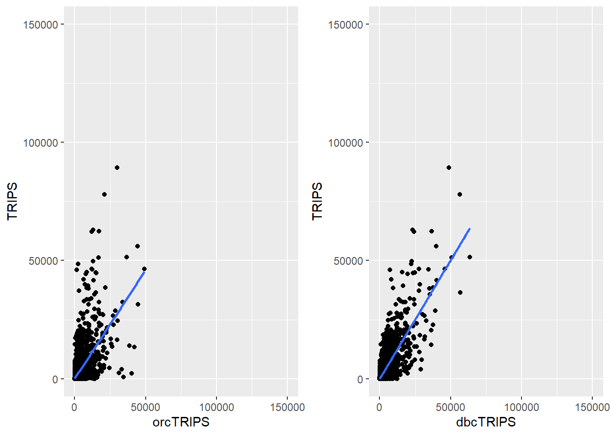

Show the code
pacman::p_load(sf, sfdep, tmap, tidyverse, knitr, plotly, httr, stplanr,corrplot)What are the driving forces behind urban dwellers to weak up early in morning to commute from their home locations to their work places? What are the impact of removing a public bus service on the commuters reside along the corridor of the bus route? These and many other questions related to urban mobility are challenges faced by transport operators and urban managers.
To provide answer to this question, traditionally, commuters survey will be used. However, commuters survey is a very costly, time-consuming and laborous, not to mention that the survey data tend to take a long time to clean and analyse. As a result, it is not unusual, by the time the survey report was ready, most of the information already out-of-date!
As city-wide urban infrastructures such as public buses, mass rapid transits, public utilities and roads become digital, the data sets obtained can be used as a framework for tracking movement patterns through space and time. This is particularly true with the recent trend of massive deployment of pervasive computing technologies such as GPS on the vehicles and SMART cards used by public transport commuters.
Unfortunately, this explosive growth of geospatially-referenced data has far outpaced the planner’s ability to utilize and transform the data into insightful information thus creating an adverse impact on the return on the investment made to collect and manage this data.
This take-home exercise is motivated by two main reasons. Firstly, despite increasing amounts of open data available for public consumption, there has not been significant practice research carried out to show how these disparate data sources can be integrated, analysed, and modelled to support policy making decisions.
Secondly, there is a general lack of practical research to show how geospatial data science and analysis (GDSA) can be used to support decision-making.
Hence, your task for this take-home exercise is to conduct a case study to demonstrate the potential value of GDSA to integrate publicly available data from multiple sources for building a spatial interaction models to determine factors affecting urban mobility patterns of public bus transit.
For the purpose of this assignment, data from several open government sources will be used:
Passenger Volume by Origin Destination Bus Stops, Bus Stop Location, Train Station and Train Station Exit Point, just to name a few of them, from LTA DataMall.
Master Plan 2019 Subzone Boundary, HDB Property Information, School Directory and Information and other relevant data from Data.gov.sg.
Business, entertn, F&B, FinServ, Leisure&Recreation and Retails are geospatial data sets of the locations of business establishments, entertainments, food and beverage outlets, financial centres, leisure and recreation centres, retail and services stores/outlets I compiled for urban mobility study. They are available on in the geospatial folder to Take-home Exercise 2 data folder.
HDB: This data set is the geocoded version of HDB Property Information data from data.gov. The data set is prepared using September 2021 data. If you want to prepare you own data by using the latest HDB Property Information provided on data.gov.sg, this link provides a useful step-by-step guide.
The specific tasks of this take-home exercise are as follows:
Derive an analytical hexagon data of 325m (this distance is the perpendicular distance between the centre of the hexagon and its edges) to represent the traffic analysis zone (TAZ).
With reference to the time intervals provided in the table below, construct an O-D matrix of commuter flows for a time interval of your choice by integrating Passenger Volume by Origin Destination Bus Stops and Bus Stop Location from LTA DataMall. The O-D matrix must be aggregated at the analytics hexagon level
| Peak hour period | Bus tap on time |
|---|---|
| Weekday morning peak | 6am to 9am |
| Weekday afternoon peak | 5pm to 8pm |
| Weekend/holiday morning peak | 11am to 2pm |
| Weekend/holiday evening peak | 4pm to 7pm |
Display the O-D flows of the passenger trips by using appropriate geovisualisation methods (not more than 5 maps).
Describe the spatial patterns revealed by the geovisualisation (not more than 100 words per visual).
Assemble at least three propulsive and three attractiveness variables by using aspatial and geospatial from publicly available sources.
Compute a distance matrix by using the analytical hexagon data derived earlier.
Calibrate spatial interactive models to determine factors affecting urban commuting flows at the selected time interval.
Present the modelling results by using appropriate geovisualisation and graphical visualisation methods. (Not more than 5 visuals)
With reference to the Spatial Interaction Model output tables, maps and data visualisation prepared, describe the modelling results. (not more than 100 words per visual).
Six R packages will be used for this exercise, they are sf, sfdep, tmap, tidyverse, knitr, plotly.
pacman::p_load(sf, sfdep, tmap, tidyverse, knitr, plotly, httr, stplanr,corrplot)sf: Purpose: The sf package stands for “simple features” and is used for working with spatial data in R. It provides a framework for representing and manipulating geometric objects like points, lines, and polygons, making it useful for tasks such as geographic information system (GIS) analysis.
sfdep: Purpose: The sfdep provides users with a way to conduct “Exploratory Spatial Data Analysis”, typical for exploratory data analysis. It evaluates the phenomena captured in the data on whether they are dependent upon space–or are spatially auto-correlated. “Local Indicators of Spatial Association”, LISAs for short are measures that are developed to identify whether some observed pattern is truly random or impacted by its relationship in space.
tmap: Purpose: tmap is a package for creating thematic maps in R. It provides a simple and consistent interface for visualizing spatial data, making it easier to create informative and visually appealing maps. It is often used in conjunction with the sf package for handling spatial data.
tidyverse: Purpose: The tidyverse is not a single package but a collection of R packages that work together cohesively for data manipulation and visualization. It includes popular packages like ggplot2 for plotting, dplyr for data manipulation, tidyr for data tidying, and others. The tidyverse philosophy emphasizes a consistent and intuitive approach to data analysis.
knitr: Purpose: knitr is a package for dynamic report generation in R. It allows you to embed R code directly into documents and then render the code and its output, such as tables and plots, into various document formats like HTML, PDF, or Word. It is commonly used with R Markdown to create reproducible research reports.
plotly: Purpose: plotly is a package for creating interactive and dynamic plots in R. It supports a variety of chart types, including scatter plots, line charts, and 3D plots. The resulting visualizations can be embedded into web pages, making it a powerful tool for creating interactive and shareable data visualizations.
httr: Purpose: httr is a package designed to work with web APIs. It provides functions for sending HTTP requests, handling responses, and interacting with web services. The name “httr” stands for “http tools.”
stplanr: Purpose stplanr is an package designed for transport planning and analysis. It provides a set of functions and tools for working with spatial data related to transport and infrastructure planning. The package leverages the capabilities of the sf (simple features) package for handling spatial data.
Two geospatial data will be used in this study, they are:
Bus Stop Location from LTA DataMall. It provides information about all the bus stops currently being serviced by buses, including the bus stop code (identifier) and location coordinates.
hexagon, a hexagon layer of 375m (this distance is the perpendicular distance between the centre of the hexagon and its edges.) should be used to represent the traffic analysis zone.
In this section, you are required to import two shapefile into RStudio, they are: - BusStop: This data provides the location of bus stop as at 2nd quarter of 2023. - MPSZ-2019: This data provides the sub-zone boundary of URA Master Plan 2019.
The code chunk below uses st_read() function of sf package to import BusStop shapefile into R as line feature data frame.
BusStop = st_read(dsn = "data/geospatial",
layer = "BusStop") %>%
st_transform(crs = 3414)Reading layer `BusStop' from data source
`C:\chiays\ISS624\Take-home_Ex\Take-home_Ex2\data\geospatial'
using driver `ESRI Shapefile'
Simple feature collection with 5161 features and 3 fields
Geometry type: POINT
Dimension: XY
Bounding box: xmin: 3970.122 ymin: 26482.1 xmax: 48284.56 ymax: 52983.82
Projected CRS: SVY21The message above reveals that there are a total of 5161 features and 3 fields in BusStop linestring feature data frame and it is in svy21 projected coordinates system too.
The structure of busstop sf tibble data frame should look as below.
glimpse(BusStop)Rows: 5,161
Columns: 4
$ BUS_STOP_N <chr> "22069", "32071", "44331", "96081", "11561", "66191", "2338…
$ BUS_ROOF_N <chr> "B06", "B23", "B01", "B05", "B05", "B03", "B02A", "B02", "B…
$ LOC_DESC <chr> "OPP CEVA LOGISTICS", "AFT TRACK 13", "BLK 239", "GRACE IND…
$ geometry <POINT [m]> POINT (13576.31 32883.65), POINT (13228.59 44206.38),…Import MPSZ-2019 into RStudio and save it as a sf data frame called mpsz.
mpsz <- st_read(dsn = "data/geospatial",
layer = "MPSZ-2019") %>%
st_transform(crs = 3414)Reading layer `MPSZ-2019' from data source
`C:\chiays\ISS624\Take-home_Ex\Take-home_Ex2\data\geospatial'
using driver `ESRI Shapefile'
Simple feature collection with 332 features and 6 fields
Geometry type: MULTIPOLYGON
Dimension: XY
Bounding box: xmin: 103.6057 ymin: 1.158699 xmax: 104.0885 ymax: 1.470775
Geodetic CRS: WGS 84The structure of mpsz sf tibble data frame should look as below.
glimpse(mpsz)Rows: 332
Columns: 7
$ SUBZONE_N <chr> "MARINA EAST", "INSTITUTION HILL", "ROBERTSON QUAY", "JURON…
$ SUBZONE_C <chr> "MESZ01", "RVSZ05", "SRSZ01", "WISZ01", "MUSZ02", "MPSZ05",…
$ PLN_AREA_N <chr> "MARINA EAST", "RIVER VALLEY", "SINGAPORE RIVER", "WESTERN …
$ PLN_AREA_C <chr> "ME", "RV", "SR", "WI", "MU", "MP", "WI", "WI", "SI", "SI",…
$ REGION_N <chr> "CENTRAL REGION", "CENTRAL REGION", "CENTRAL REGION", "WEST…
$ REGION_C <chr> "CR", "CR", "CR", "WR", "CR", "CR", "WR", "WR", "CR", "CR",…
$ geometry <MULTIPOLYGON [m]> MULTIPOLYGON (((33222.98 29..., MULTIPOLYGON (…honeycomb_grid = st_make_grid(BusStop, c(750, 750), what = "polygons", square = FALSE, crs = 3414) %>%
st_sf() %>%
filter(lengths(st_intersects(geometry, BusStop)) > 0)tm_shape(mpsz) +
tm_polygons(title = "Singapore Boundary") +
tm_layout(main.title = "Singapore",
main.title.position = "center",
main.title.size = 1.0,
legend.height = 0.35,
legend.width = 0.35,
frame = TRUE) +
tm_compass(type="8star", size = 2) +
tm_scale_bar() +
tm_grid(alpha = 0.2)tm_shape(mpsz) +
tm_polygons(title = "Singapore", alpha = 0.5) +
tm_shape(honeycomb_grid) +
tm_polygons(col = "white", title = "Hexagons", alpha = 1) +
tm_layout(main.title = "Honeycomb grid with Singapore's BusStops",
main.title.position = "center",
main.title.size = 1.0,
legend.height = 0.35,
legend.width = 0.35,
frame = TRUE) +
tm_compass(type="8star", size = 2, bg.color = "white", bg.alpha = 0.5) +
tm_scale_bar(bg.color = "white", bg.alpha = 0.5) +
tm_shape(BusStop) +
tm_dots(col = "blue", size = 0.01) +
tm_grid(alpha = 0.2)Create a ID column so that it can be used in joining dataframes.
honeycomb_grid$ID <- sprintf("H%04d", seq_len(nrow(honeycomb_grid))) %>% as.factor()write_rds(honeycomb_grid, "data/rds/honeycomb_grid.rds")honeycomb_grid <- read_rds("data/rds/honeycomb_grid.rds")For the purpose of this take-home exercise, Passenger Volume by Origin Destination Bus Stops downloaded from LTA DataMall will be used.
Since listings data set is in csv file format, we will use read_csv() of readr package to import origin_destination_bus.csv as shown the code chunk below. The output R object is called odbus1023 and it is a tibble data frame.
odbus1023 <- read_csv("data/aspatial/origin_destination_bus_202310.csv")Rows: 5694297 Columns: 7
── Column specification ────────────────────────────────────────────────────────
Delimiter: ","
chr (5): YEAR_MONTH, DAY_TYPE, PT_TYPE, ORIGIN_PT_CODE, DESTINATION_PT_CODE
dbl (2): TIME_PER_HOUR, TOTAL_TRIPS
ℹ Use `spec()` to retrieve the full column specification for this data.
ℹ Specify the column types or set `show_col_types = FALSE` to quiet this message.A quick check of odbus tibble data frame shows that the values in OROGIN_PT_CODE and DESTINATON_PT_CODE are in numeric data type.
glimpse(odbus1023)Rows: 5,694,297
Columns: 7
$ YEAR_MONTH <chr> "2023-10", "2023-10", "2023-10", "2023-10", "2023-…
$ DAY_TYPE <chr> "WEEKENDS/HOLIDAY", "WEEKDAY", "WEEKENDS/HOLIDAY",…
$ TIME_PER_HOUR <dbl> 16, 16, 14, 14, 17, 17, 17, 7, 14, 14, 10, 20, 20,…
$ PT_TYPE <chr> "BUS", "BUS", "BUS", "BUS", "BUS", "BUS", "BUS", "…
$ ORIGIN_PT_CODE <chr> "04168", "04168", "80119", "80119", "44069", "2028…
$ DESTINATION_PT_CODE <chr> "10051", "10051", "90079", "90079", "17229", "2014…
$ TOTAL_TRIPS <dbl> 3, 5, 3, 5, 4, 1, 24, 2, 1, 7, 3, 2, 5, 1, 1, 1, 1…Convert these data values into factor data type.
odbus1023$ORIGIN_PT_CODE <- as.factor(odbus1023$ORIGIN_PT_CODE)
odbus1023$DESTINATION_PT_CODE <- as.factor(odbus1023$DESTINATION_PT_CODE)Notice that both of them are in factor data type now.
glimpse(odbus1023)Rows: 5,694,297
Columns: 7
$ YEAR_MONTH <chr> "2023-10", "2023-10", "2023-10", "2023-10", "2023-…
$ DAY_TYPE <chr> "WEEKENDS/HOLIDAY", "WEEKDAY", "WEEKENDS/HOLIDAY",…
$ TIME_PER_HOUR <dbl> 16, 16, 14, 14, 17, 17, 17, 7, 14, 14, 10, 20, 20,…
$ PT_TYPE <chr> "BUS", "BUS", "BUS", "BUS", "BUS", "BUS", "BUS", "…
$ ORIGIN_PT_CODE <fct> 04168, 04168, 80119, 80119, 44069, 20281, 20281, 1…
$ DESTINATION_PT_CODE <fct> 10051, 10051, 90079, 90079, 17229, 20141, 20141, 1…
$ TOTAL_TRIPS <dbl> 3, 5, 3, 5, 4, 1, 24, 2, 1, 7, 3, 2, 5, 1, 1, 1, 1…For the purpose of extracting the commuting flows during the weekday morning peak for the period from 6am to 9am. Call the output tibble data table as origin_WDMP and dest_WDMP.
| Peak hour period | Bus tap on time |
|---|---|
| Weekday morning peak | 6am to 9am |
all_WDMP <- odbus1023 %>%
filter(DAY_TYPE == "WEEKDAY") %>%
filter( TIME_PER_HOUR >= 6 &
TIME_PER_HOUR < 9
) %>%
group_by(ORIGIN_PT_CODE, DESTINATION_PT_CODE) %>%
summarise(TRIPS = sum(TOTAL_TRIPS))`summarise()` has grouped output by 'ORIGIN_PT_CODE'. You can override using
the `.groups` argument.View the top few rows of the summarized trips by ORIGIN_PT_CODE.
head(all_WDMP)# A tibble: 6 × 3
# Groups: ORIGIN_PT_CODE [1]
ORIGIN_PT_CODE DESTINATION_PT_CODE TRIPS
<fct> <fct> <dbl>
1 01012 01112 213
2 01012 01113 96
3 01012 01121 48
4 01012 01211 77
5 01012 01311 116
6 01012 07371 11rm(odbus1023)We will save the output in rds format for future used.
write_rds(all_WDMP, "data/rds/all_WDMP.rds")The code chunk below will be used to import the save into R environment.
all_WDMP <- read_rds("data/rds/all_WDMP.rds")Intersection of busstop with hexagon layer
BS_hex <- st_intersection(BusStop, honeycomb_grid) %>%
st_drop_geometry() %>%
select(c(BUS_STOP_N, ID))Warning: attribute variables are assumed to be spatially constant throughout
all geometriesCombining the data
all_WDMP_hex <- all_WDMP %>%
inner_join(BS_hex,
by = c("ORIGIN_PT_CODE" = "BUS_STOP_N")) %>%
rename(ORIGIN_HEX_ID = ID) %>%
inner_join(BS_hex,
by = c("DESTINATION_PT_CODE" = "BUS_STOP_N")) %>%
rename(DEST_HEX_ID = ID)Warning in inner_join(., BS_hex, by = c(ORIGIN_PT_CODE = "BUS_STOP_N")): Detected an unexpected many-to-many relationship between `x` and `y`.
ℹ Row 22811 of `x` matches multiple rows in `y`.
ℹ Row 3057 of `y` matches multiple rows in `x`.
ℹ If a many-to-many relationship is expected, set `relationship =
"many-to-many"` to silence this warning.Warning in inner_join(., BS_hex, by = c(DESTINATION_PT_CODE = "BUS_STOP_N")): Detected an unexpected many-to-many relationship between `x` and `y`.
ℹ Row 553 of `x` matches multiple rows in `y`.
ℹ Row 3146 of `y` matches multiple rows in `x`.
ℹ If a many-to-many relationship is expected, set `relationship =
"many-to-many"` to silence this warning.Sum by ID
all_WDMP_hex2 <- all_WDMP_hex %>%
group_by(ORIGIN_HEX_ID, DEST_HEX_ID) %>%
summarise(TRIPS = sum(TRIPS))`summarise()` has grouped output by 'ORIGIN_HEX_ID'. You can override using the
`.groups` argument.flowlines <- all_WDMP_hex2 %>% od2line(
honeycomb_grid,
zone_code = "ID")Creating centroids representing desire line start and end points.write_rds(flowlines, "data/rds/flowlines.rds")When the flow data are very messy and highly skewed like the one shown above, it is wiser to focus on selected flows, for example flow greater than or equal to 3000 as shown below.
tm_shape(mpsz) +
tm_polygons(title = "Singapore", alpha = 0.5) +
tm_layout(main.title = "Weekdays 6AM - 9AM",
main.title.position = "center",
main.title.size = 0.80,
legend.height = 0.35,
legend.width = 0.35,
frame = TRUE) +
tm_shape(honeycomb_grid) +
tm_polygons(col = "white", title = "Hexagons", alpha = 1) +
tm_borders(lwd = 0.7, col = "grey40") +
tm_shape(flowlines %>% filter(TRIPS >= 3000)) +
tm_lines(lwd = "TRIPS",
style = "quantile",
col = "blue",
scale = c(0.1, 1, 3, 5, 7, 10),
n = 6,
alpha = 0.5)Warning: One tm layer group has duplicated layer types, which are omitted. To
draw multiple layers of the same type, use multiple layer groups (i.e. specify
tm_shape prior to each of them).Warning in g$scale * (x/maxW): longer object length is not a multiple of
shorter object lengthObservation : Origin BusStops were concentrated at interchange areas (e.g. Woodlands, Jurong, etc). Interestingly, most centroids are at west/east/north regions. The southern regions which mainly comprises of the central business district and high end residential areas have less bus commuters. This could be because they could be travelling via private vehicles or MRT.
Code chunk below populates the planning subzone code (i.e. SUBZONE_C) of mpsz sf data frame into busstop sf data frame.
busstop_mpsz <- st_intersection(BusStop, mpsz) %>%
select(BUS_STOP_N, SUBZONE_C) %>% st_drop_geometry()Warning: attribute variables are assumed to be spatially constant throughout
all geometriesBefore moving to the next step, save the output into rds format.
write_rds(busstop_mpsz, "data/rds/busstop_mpsz.rds")busstop_mpsz <- read_rds("data/rds/busstop_mpsz.rds")Next, append the planning subzone code from busstop_mpsz data frame onto origin_WDMP (origin & destination) data frame.
all_SZ <- left_join(all_WDMP , busstop_mpsz,
by = c("ORIGIN_PT_CODE" = "BUS_STOP_N")) %>%
rename(ORIGIN_BS = ORIGIN_PT_CODE,
ORIGIN_SZ = SUBZONE_C,
DEST_BS = DESTINATION_PT_CODE)Warning in left_join(all_WDMP, busstop_mpsz, by = c(ORIGIN_PT_CODE = "BUS_STOP_N")): Detected an unexpected many-to-many relationship between `x` and `y`.
ℹ Row 22811 of `x` matches multiple rows in `y`.
ℹ Row 673 of `y` matches multiple rows in `x`.
ℹ If a many-to-many relationship is expected, set `relationship =
"many-to-many"` to silence this warning.all_SZ <- left_join(all_SZ , busstop_mpsz,
by = c("DEST_BS" = "BUS_STOP_N")) Warning in left_join(all_SZ, busstop_mpsz, by = c(DEST_BS = "BUS_STOP_N")): Detected an unexpected many-to-many relationship between `x` and `y`.
ℹ Row 553 of `x` matches multiple rows in `y`.
ℹ Row 672 of `y` matches multiple rows in `x`.
ℹ If a many-to-many relationship is expected, set `relationship =
"many-to-many"` to silence this warning.all_SZ <- all_SZ %>%
rename(DESTIN_SZ = SUBZONE_C) %>%
drop_na() %>%
group_by(ORIGIN_SZ, DESTIN_SZ) %>%
summarise(TOT_TRIPS = sum(TRIPS))`summarise()` has grouped output by 'ORIGIN_SZ'. You can override using the
`.groups` argument.Check for duplicate records
duplicate_all_SZ <- all_SZ %>%
group_by_all() %>%
filter(n()>1) %>%
ungroup()See if any duplicate records.
glimpse(duplicate_all_SZ)Rows: 0
Columns: 3
$ ORIGIN_SZ <chr>
$ DESTIN_SZ <chr>
$ TOT_TRIPS <dbl> As shown above, there are duplicates. We can remove duplicate records (if any) with the following code.
all_SZ <- unique(all_SZ)Next, write a code chunk to update od_data dataframe with the planning subzone codes.
origintrip_SZ <- left_join(mpsz,
all_SZ,
by = c("SUBZONE_C" = "ORIGIN_SZ"))Drop points without data (i.e. trip)
non_finite_indices <- which(!is.finite(origintrip_SZ$TOT_TRIPS))
origintrip_SZ$TOT_TRIPS[!is.finite(origintrip_SZ$TOT_TRIPS)] <- 0Prepare a choropleth map showing the distribution of passenger trips at planning sub-zone level.
tm_shape(origintrip_SZ)+
tm_fill("TOT_TRIPS",
style = "quantile",
palette = "Blues",
title = "Passenger trips") +
tm_layout(main.title = "Passenger trips generated at planning sub-zone level (Origin)",
main.title.position = "center",
main.title.size = 1,
legend.height = 0.45,
legend.width = 0.35,
frame = TRUE) +
tm_borders(alpha = 0.5) +
tm_compass(type="8star", size = 2) +
tm_scale_bar() +
tm_grid(alpha =0.2)
Prepare a desire line by using stplanr package.
The code chunk below will be used to remove intra-zonal flows.
all_SZ_R <- all_SZ[all_SZ$ORIGIN_SZ != all_SZ$DESTIN_SZ,]In this code chunk below, od2line() of stplanr package is used to create the desire lines.
flowLine <- od2line(flow = all_SZ_R,
zones = mpsz,
zone_code = "SUBZONE_C")Creating centroids representing desire line start and end points.When the flow data are very messy and highly skewed like the one shown above, it is wiser to focus on selected flows, for example flow greater than or equal to 3000 as shown below.
tm_shape(mpsz) +
tm_polygons() +
flowLine %>%
filter(TOT_TRIPS >= 3000) %>%
tm_shape() +
tm_lines(lwd = "TOT_TRIPS",
style = "quantile",
scale = c(0.1, 1, 3, 5, 7, 10),
n = 6,
alpha = 0.3)Warning in g$scale * (w_legend/maxW): longer object length is not a multiple of
shorter object lengthWarning in g$scale * (x/maxW): longer object length is not a multiple of
shorter object lengthObservation : Similar findings as per above at BusStop hexagon level. The subzone areas at the west/east/north regions are more concentrated as compared to the southern regions which mainly comprises of the central business district and high end residential areas have less bus commuters. This could be because they could be travelling via private vehicles or MRT.
Address geocoding, or simply geocoding, is the process of taking a aspatial description of a location, such as an address or postcode, and returning geographic coordinates, frequently latitude/longitude pair, to identify a location on the Earth’s surface.
Singapore Land Authority (SLA) supports an online geocoding service called OneMap API. The Search API looks up the address data or 6-digit postal code for an entered value. It then returns both latitude, longitude and x,y coordinates of the searched location.
The code chunks below will perform geocoding using SLA OneMap API. The input data will be in csv file format. It will be read into R Studio environment using read_csv function of readr package. A collection of http call functions of httr package of R will then be used to pass the individual records to the geocoding server at OneMap.
Two tibble data.frames will be created if the geocoding process completed successfully. They are called found and not_found. found contains all records that are geocoded correctly and not_found contains postal that failed to be geocoded.
Lastly, the found data table will joined with the initial csv data table by using a unique identifier (i.e. POSTAL) common to both data tables. The output data table will then save as an csv file called found.
======================= url<-“https://www.onemap.gov.sg/api/common/elastic/search”
csv<-read_csv(“data/aspatial/Generalinformationofschools.csv”)
postcodes<-csv$postal_code
found<-data.frame() not_found<-data.frame()
for(postcode in postcodes){ query<-list(‘searchVal’=postcode,‘returnGeom’=‘Y’,‘getAddrDetails’=‘Y’,‘pageNum’=‘1’) res<- GET(url,query=query)
if((content(res)$found)!=0){ found<-rbind(found,data.frame(content(res))[4:13]) } else{ not_found = data.frame(postcode) } } =======================
Since we have done it during in-class ex4, we just need to read the csv that was prepared.
schools <- read_csv("data/aspatial/schools.csv") %>%
rename(latitude = "results.LATITUDE",
longitude = "results.LONGITUDE")%>%
select(postal_code, school_name, latitude, longitude)New names:
Rows: 350 Columns: 41
── Column specification
──────────────────────────────────────────────────────── Delimiter: "," chr
(36): postal_code, school_name, url_address, address, telephone_no, tele... dbl
(5): ...1, results.X, results.Y, results.LATITUDE, results.LONGITUDE
ℹ Use `spec()` to retrieve the full column specification for this data. ℹ
Specify the column types or set `show_col_types = FALSE` to quiet this message.
• `` -> `...1`non_finite_indices <- which(!is.finite(schools$latitude))
schools$latitude[!is.finite(schools$latitude)] <- 1.3887
non_finite_indices <- which(!is.finite(schools$longitude))
schools$longitude[!is.finite(schools$longitude)] <- 103.7652Converting an aspatial data into sf tibble data.frame Next, convert schools tibble data.frame data into a simple feature tibble data.frame called schools_sf by using values in latitude and longitude fields.
Refer to st_as_sf() of sf package.
Must code longitude first before latitude. This combines both longitude and latitude into Geometry coordinates. (crs = 4326) Subsequently (crs = 3414) converts it into metres in Singapore context.
Show the code chunk
schools_sf <- st_as_sf(schools,
coords = c("longitude", "latitude"),
crs=4326) %>%
st_transform(crs = 3414)Using the steps you learned in previous exercises, create a point symbol map showing the location of schools with OSM as the background map.
tmap_options(check.and.fix = TRUE)
tm_shape(mpsz) +
tm_polygons() +
tm_shape(honeycomb_grid) +
tm_polygons() +
tm_shape(schools_sf) +
tm_dots()Warning: The shape mpsz is invalid. See sf::st_is_validNext, we will count the number of schools located inside the planning subzones.
Count the number of schools within each planning subzone by using lengths() of Base and st_intersects() of sf package.
Show the code chunk
mpsz$`SCHOOL_COUNT`<- lengths(
st_intersects(
mpsz, schools_sf))Compute and display the summary statistics of sch_count field.
summary(mpsz$SCHOOL_COUNT) Min. 1st Qu. Median Mean 3rd Qu. Max.
0.000 0.000 0.000 1.054 2.000 12.000 The summary statistics above reveals that there are excessive 0 values in SCHOOL_COUNT field. If log() is going to be used to transform this field, additional step is required to ensure that all 0 will be replaced with a value between 0 and 1 but neither 0 nor 1.
Using the steps you learned in earlier sub-sections, count the number of Business points in each planning subzone.
business_sf <- st_read(dsn = "data/geospatial",
layer = "Business")Reading layer `Business' from data source
`C:\chiays\ISS624\Take-home_Ex\Take-home_Ex2\data\geospatial'
using driver `ESRI Shapefile'
Simple feature collection with 6550 features and 3 fields
Geometry type: POINT
Dimension: XY
Bounding box: xmin: 3669.148 ymin: 25408.41 xmax: 47034.83 ymax: 50148.54
Projected CRS: SVY21 / Singapore TMNext, we will count the number of business located inside the planning subzones.
Count the number of schools within each planning subzone by using lengths() of Base and st_intersects() of sf package.
Show the code chunk
mpsz$`BUSINESS_COUNT`<- lengths(
st_intersects(
mpsz, business_sf))Compute and display the summary statistics of business_count field.
summary(mpsz$BUSINESS_COUNT) Min. 1st Qu. Median Mean 3rd Qu. Max.
0.00 0.00 2.00 19.73 13.00 307.00 tmap_options(check.and.fix = TRUE)
tm_shape(mpsz) +
tm_polygons() +
tm_shape(honeycomb_grid) +
tm_polygons() +
tm_shape(business_sf) +
tm_dots()Warning: The shape mpsz is invalid. See sf::st_is_valid
Observation : Businesses mainly located at the Tuas and southern regions (i.e. CBD). The Changi area also seems to form a small centroid which consist of the Tech hub (e.g. IBM, JP Morgon).
Using the steps you learned in earlier sub-sections, count the number of Finance points in each planning subzone.
Finserv_sf <- st_read(dsn = "data/geospatial",
layer = "FinServ")Reading layer `FinServ' from data source
`C:\chiays\ISS624\Take-home_Ex\Take-home_Ex2\data\geospatial'
using driver `ESRI Shapefile'
Simple feature collection with 3320 features and 3 fields
Geometry type: POINT
Dimension: XY
Bounding box: xmin: 4881.527 ymin: 25171.88 xmax: 46526.16 ymax: 49338.02
Projected CRS: SVY21 / Singapore TMNext, we will count the number of business located inside the planning subzones.
Count the number of schools within each planning subzone by using lengths() of Base and st_intersects() of sf package.
Show the code chunk
mpsz$`FINSERV_COUNT`<- lengths(
st_intersects(
mpsz, Finserv_sf))Compute and display the summary statistics of finserv_count field.
summary(mpsz$FINSERV_COUNT) Min. 1st Qu. Median Mean 3rd Qu. Max.
0 1 5 10 13 134 tmap_options(check.and.fix = TRUE)
tm_shape(mpsz) +
tm_polygons() +
tm_shape(honeycomb_grid) +
tm_polygons() +
tm_shape(Finserv_sf) +
tm_dots()Warning: The shape mpsz is invalid. See sf::st_is_valid
Observation : It is clear from the graph that the Finserv is mainly located at the CBD.
Now, it is time for us to bring in the flow_data.rds saved after Hands-on Exercise 3.
Show the code chunk
flow_data <- read_rds("data/rds/flow_data.rds") %>%
rename(TRIPS = MORNING_PEAK)mpsz_tidy <- mpsz %>%
st_drop_geometry() %>%
select(SUBZONE_C, BUSINESS_COUNT, FINSERV_COUNT)flow_data <- flow_data %>%
left_join(mpsz_tidy,
by = c("ORIGIN_SZ" = "SUBZONE_C"))summary(flow_data) ORIGIN_SZ DESTIN_SZ TRIPS dist
Length:14734 Length:14734 Min. : 1 Min. : 50
Class :character Class :character 1st Qu.: 14 1st Qu.: 3346
Mode :character Mode :character Median : 76 Median : 6067
Mean : 1021 Mean : 6880
3rd Qu.: 426 3rd Qu.: 9729
Max. :232187 Max. :26136
ORIGIN_AGE7_12 ORIGIN_AGE13_24 ORIGIN_AGE25_64 DESTIN_AGE7_12
Min. : 0.99 Min. : 0.99 Min. : 0.99 Min. : 0.99
1st Qu.: 240.00 1st Qu.: 440.00 1st Qu.: 2200.00 1st Qu.: 240.00
Median : 700.00 Median : 1350.00 Median : 6810.00 Median : 720.00
Mean :1031.86 Mean : 2268.84 Mean :10487.62 Mean :1033.40
3rd Qu.:1480.00 3rd Qu.: 3260.00 3rd Qu.:15770.00 3rd Qu.:1500.00
Max. :6340.00 Max. :16380.00 Max. :74610.00 Max. :6340.00
DESTIN_AGE13_24 DESTIN_AGE25_64 SCHOOL_COUNT RETAIL_COUNT
Min. : 0.99 Min. : 0.99 Min. : 0.990 Min. : 0.99
1st Qu.: 460.00 1st Qu.: 2200.00 1st Qu.: 0.990 1st Qu.: 0.99
Median : 1420.00 Median : 7030.00 Median : 1.000 Median : 3.00
Mean : 2290.35 Mean :10574.46 Mean : 1.987 Mean : 16.47
3rd Qu.: 3260.00 3rd Qu.:15830.00 3rd Qu.: 2.000 3rd Qu.: 12.00
Max. :16380.00 Max. :74610.00 Max. :12.000 Max. :307.00
BUSINESS_COUNT FINSERV_COUNT geometry
Min. : 0.00 Min. : 0.00 LINESTRING :14734
1st Qu.: 0.00 1st Qu.: 3.00 epsg:3414 : 0
Median : 2.00 Median : 7.00 +proj=tmer...: 0
Mean : 14.68 Mean :12.85
3rd Qu.: 10.00 3rd Qu.:17.00
Max. :307.00 Max. :79.00 flow_data$SCHOOL_COUNT <- ifelse(
flow_data$SCHOOL_COUNT == 0,
0.99, flow_data$SCHOOL_COUNT)
flow_data$BUSINESS_COUNT <- ifelse(
flow_data$BUSINESS_COUNT == 0,
0.99, flow_data$BUSINESS_COUNT)
flow_data$FINSERV_COUNT <- ifelse(
flow_data$FINSERV_COUNT == 0,
0.99, flow_data$FINSERV_COUNT)summary(flow_data) ORIGIN_SZ DESTIN_SZ TRIPS dist
Length:14734 Length:14734 Min. : 1 Min. : 50
Class :character Class :character 1st Qu.: 14 1st Qu.: 3346
Mode :character Mode :character Median : 76 Median : 6067
Mean : 1021 Mean : 6880
3rd Qu.: 426 3rd Qu.: 9729
Max. :232187 Max. :26136
ORIGIN_AGE7_12 ORIGIN_AGE13_24 ORIGIN_AGE25_64 DESTIN_AGE7_12
Min. : 0.99 Min. : 0.99 Min. : 0.99 Min. : 0.99
1st Qu.: 240.00 1st Qu.: 440.00 1st Qu.: 2200.00 1st Qu.: 240.00
Median : 700.00 Median : 1350.00 Median : 6810.00 Median : 720.00
Mean :1031.86 Mean : 2268.84 Mean :10487.62 Mean :1033.40
3rd Qu.:1480.00 3rd Qu.: 3260.00 3rd Qu.:15770.00 3rd Qu.:1500.00
Max. :6340.00 Max. :16380.00 Max. :74610.00 Max. :6340.00
DESTIN_AGE13_24 DESTIN_AGE25_64 SCHOOL_COUNT RETAIL_COUNT
Min. : 0.99 Min. : 0.99 Min. : 0.990 Min. : 0.99
1st Qu.: 460.00 1st Qu.: 2200.00 1st Qu.: 0.990 1st Qu.: 0.99
Median : 1420.00 Median : 7030.00 Median : 1.000 Median : 3.00
Mean : 2290.35 Mean :10574.46 Mean : 1.987 Mean : 16.47
3rd Qu.: 3260.00 3rd Qu.:15830.00 3rd Qu.: 2.000 3rd Qu.: 12.00
Max. :16380.00 Max. :74610.00 Max. :12.000 Max. :307.00
BUSINESS_COUNT FINSERV_COUNT geometry
Min. : 0.99 Min. : 0.99 LINESTRING :14734
1st Qu.: 0.99 1st Qu.: 3.00 epsg:3414 : 0
Median : 2.00 Median : 7.00 +proj=tmer...: 0
Mean : 14.99 Mean :12.94
3rd Qu.: 10.00 3rd Qu.:17.00
Max. :307.00 Max. :79.00 write_rds(flow_data,
"data/rds/flow_data_tidy.rds")flow_data <- read_rds("data/rds/flow_data_tidy.rds")Spatial Interaction Models (SIMs) are mathematical models for estimating flows between spatial entities developed by Alan Wilson in the late 1960s and early 1970, with considerable uptake and refinement for transport modelling since then Boyce and Williams (2015).
There are four main types of traditional SIMs (Wilson 1971):
Ordinary least square (OLS), log-normal, Poisson and negative binomial (NB) regression methods have been used extensively to calibrate OD flow models by processing flow data as different types of dependent variables. In this chapter, you will gain hands-on experiences on using appropriate R packages to calibrate SIM by using there four regression methods.
We are going to calibrate SIM to determine factors affecting the public bus passenger flows during the morning peak in Singapore. The four r packages that will be used are:
Additional R packages will be loaded.
pacman::p_load(sp, DT, performance, reshape2, ggpubr, units)DT: Purpose: The DT package is used for creating interactive tables in R Markdown documents, Shiny applications, and R scripts. It allows users to interact with the data by sorting, filtering, and exporting tables.
reshape2: Purpose: The reshape2 package is used for data reshaping and restructuring. It provides functions like melt and dcast that help transform data between wide and long formats.
ggpubr: Purpose: The ggpubr package extends the capabilities of the popular ggplot2 package. It provides functions to create complex plots easily, including grouped boxplots, scatter plots, correlation matrices, and more.
units: Purpose: The units package is used for working with physical units in R. It allows to attach units to numeric values and perform arithmetic operations while taking units into account. This is useful in scientific and engineering applications.
There are at least two ways to compute the required distance matrix. One is based on sf and the other is based on sp. Past experience shown that computing distance matrix by using sf function took relatively longer time that sp method especially the data set is large. In view of this, sp method is used in the code chunks below.
First as.Spatial() will be used to convert mpsz from sf tibble data frame to SpatialPolygonsDataFrame of sp object as shown in the code chunk below.
mpsz_sp <- as(mpsz, "Spatial")
mpsz_spclass : SpatialPolygonsDataFrame
features : 332
extent : 2667.538, 56396.44, 15748.72, 50256.33 (xmin, xmax, ymin, ymax)
crs : +proj=tmerc +lat_0=1.36666666666667 +lon_0=103.833333333333 +k=1 +x_0=28001.642 +y_0=38744.572 +ellps=WGS84 +towgs84=0,0,0,0,0,0,0 +units=m +no_defs
variables : 9
names : SUBZONE_N, SUBZONE_C, PLN_AREA_N, PLN_AREA_C, REGION_N, REGION_C, SCHOOL_COUNT, BUSINESS_COUNT, FINSERV_COUNT
min values : ADMIRALTY, AMSZ01, ANG MO KIO, AM, CENTRAL REGION, CR, 0, 0, 0
max values : YUNNAN, YSSZ09, YISHUN, YS, WEST REGION, WR, 12, 307, 134 Next, spDists() of sp package will be used to compute the Euclidean distance between the centroids of the planning subzones.
dist <- spDists(mpsz_sp,
longlat = FALSE)
head(dist, n=c(10, 10)) [,1] [,2] [,3] [,4] [,5] [,6] [,7]
[1,] 0.000 3926.0025 3939.108 20252.964 2989.9839 1431.330 19211.836
[2,] 3926.003 0.0000 305.737 16513.865 951.8314 5254.066 16242.523
[3,] 3939.108 305.7370 0.000 16412.062 1045.9088 5299.849 16026.146
[4,] 20252.964 16513.8648 16412.062 0.000 17450.3044 21665.795 7229.017
[5,] 2989.984 951.8314 1045.909 17450.304 0.0000 4303.232 17020.916
[6,] 1431.330 5254.0664 5299.849 21665.795 4303.2323 0.000 20617.082
[7,] 19211.836 16242.5230 16026.146 7229.017 17020.9161 20617.082 0.000
[8,] 14960.942 12749.4101 12477.871 11284.279 13336.0421 16281.453 5606.082
[9,] 7515.256 7934.8082 7649.776 18427.503 7801.6163 8403.896 14810.930
[10,] 6391.342 4975.0021 4669.295 15469.566 5226.8731 7707.091 13111.391
[,8] [,9] [,10]
[1,] 14960.942 7515.256 6391.342
[2,] 12749.410 7934.808 4975.002
[3,] 12477.871 7649.776 4669.295
[4,] 11284.279 18427.503 15469.566
[5,] 13336.042 7801.616 5226.873
[6,] 16281.453 8403.896 7707.091
[7,] 5606.082 14810.930 13111.391
[8,] 0.000 9472.024 8575.490
[9,] 9472.024 0.000 3780.800
[10,] 8575.490 3780.800 0.000Notice that the output dist is a matrix column headers and row headers are not labeled with the planning subzone codes.
Create a list sorted according to the the distance matrix by planning sub-zone code.
sz_names <- mpsz$SUBZONE_CAttach SUBZONE_C to row and column for distance matrix matching ahead
colnames(dist) <- paste0(sz_names)
rownames(dist) <- paste0(sz_names)Pivot the distance matrix into a long table by using the row and column subzone codes as show in the code chunk below.
distPair <- melt(dist) %>%
rename(dist = value)
head(distPair, 10) Var1 Var2 dist
1 MESZ01 MESZ01 0.000
2 RVSZ05 MESZ01 3926.003
3 SRSZ01 MESZ01 3939.108
4 WISZ01 MESZ01 20252.964
5 MUSZ02 MESZ01 2989.984
6 MPSZ05 MESZ01 1431.330
7 WISZ03 MESZ01 19211.836
8 WISZ02 MESZ01 14960.942
9 SISZ02 MESZ01 7515.256
10 SISZ01 MESZ01 6391.342Notice that within zone distance is 0.
We shall append a constant value to replace the intra-zonal distance of 0. First, we will select and find out the minimum value of the distance by using summary().
distPair %>%
filter(dist > 0) %>%
summary() Var1 Var2 dist
MESZ01 : 331 MESZ01 : 331 Min. : 173.8
RVSZ05 : 331 RVSZ05 : 331 1st Qu.: 7149.5
SRSZ01 : 331 SRSZ01 : 331 Median :11890.0
WISZ01 : 331 WISZ01 : 331 Mean :12229.4
MUSZ02 : 331 MUSZ02 : 331 3rd Qu.:16401.7
MPSZ05 : 331 MPSZ05 : 331 Max. :49894.4
(Other):107906 (Other):107906 Since the minimum distance is 173.8, we apply a constant distance value of 50m for intra-zones distance.
distPair$dist <- ifelse(distPair$dist == 0,
50, distPair$dist)The code chunk below will be used to check the result data.frame.
distPair %>%
summary() Var1 Var2 dist
MESZ01 : 332 MESZ01 : 332 Min. : 50
RVSZ05 : 332 RVSZ05 : 332 1st Qu.: 7097
SRSZ01 : 332 SRSZ01 : 332 Median :11864
WISZ01 : 332 WISZ01 : 332 Mean :12193
MUSZ02 : 332 MUSZ02 : 332 3rd Qu.:16388
MPSZ05 : 332 MPSZ05 : 332 Max. :49894
(Other):108232 (Other):108232 The code chunk below is used to rename the origin and destination fields.
distPair <- distPair %>%
rename(orig = Var1,
dest = Var2)Lastly, the code chunk below is used to save the dataframe for future use.
write_rds(distPair, "data/rds/distPair.rds") Code chunk below is used to add three new fields in flow_data dataframe.
flow_data$FlowNoIntra <- ifelse(
flow_data$ORIGIN_SZ == flow_data$DESTIN_SZ,
0, flow_data$TRIPS)
flow_data$offset <- ifelse(
flow_data$ORIGIN_SZ == flow_data$DESTIN_SZ,
0.000001, 1)According to the syntax used to derive values in FlowNoIntra field, all intra-zonal flow will be given a value of 0 or else the original flow values will be inserted.
Next, inter-zonal flow will be selected from flow_data and save into a new output data.frame called inter_zonal_flow by using the code chunk below.
inter_zonal_flow <- flow_data %>%
filter(FlowNoIntra > 0)Before we can join flow_data and distPair, we need to convert data value type of ORIGIN_SZ and DESTIN_SZ fields of flow_data dataframe into factor data type.
flow_data$ORIGIN_SZ <- as.factor(flow_data$ORIGIN_SZ)
flow_data$DESTIN_SZ <- as.factor(flow_data$DESTIN_SZ)inter_zonal_flow$ORIGIN_SZ <- as.factor(inter_zonal_flow$ORIGIN_SZ)
inter_zonal_flow$DESTIN_SZ <- as.factor(inter_zonal_flow$DESTIN_SZ)pop <- read_csv("data/aspatial/pop.csv")Rows: 332 Columns: 5
── Column specification ────────────────────────────────────────────────────────
Delimiter: ","
chr (2): PA, SZ
dbl (3): AGE7_12, AGE13_24, AGE25_64
ℹ Use `spec()` to retrieve the full column specification for this data.
ℹ Specify the column types or set `show_col_types = FALSE` to quiet this message.pop <- pop %>%
left_join(mpsz,
by = c("PA" = "PLN_AREA_N",
"SZ" = "SUBZONE_N")) %>%
select(1:6) %>%
rename(SZ_NAME = SZ,
SZ = SUBZONE_C)flow_data <- flow_data %>%
left_join(pop,
by = c(ORIGIN_SZ = "SZ")) %>%
select(-c(PA, SZ_NAME))We will called the output data file SIM_data. it is in rds data file format.
write_rds(flow_data, "data/rds/SIM_data.rds")Calibrate Spatial Interaction Models by using Poisson Regression method.
Firstly, let us import the modelling data by using the code chunk below.
SIM_data <- read_rds("data/rds/SIM_data.rds")ggplot(data = SIM_data,
aes(x = TRIPS)) +
geom_histogram()`stat_bin()` using `bins = 30`. Pick better value with `binwidth`.
Notice that the distribution is highly skewed and not resemble bell shape or also known as normal distribution.
Next, let us visualise the relation between the dependent variable and one of the key independent variable in Spatial Interaction Model, namely distance.
ggplot(data = SIM_data,
aes(x = dist,
y = TRIPS)) +
geom_point() +
geom_smooth(method = lm)`geom_smooth()` using formula = 'y ~ x'
Notice that their relationship hardly resemble linear relationship.
On the other hand, if we plot the scatter plot by using the log transformed version of both variables, we can see that their relationship is more resemble linear relationship.
ggplot(data = SIM_data,
aes(x = log(dist),
y = log(TRIPS))) +
geom_point() +
geom_smooth(method = lm)`geom_smooth()` using formula = 'y ~ x'
Since Poisson Regression is based of log and log 0 is undefined, it is important for us to ensure that no 0 values in the explanatory variables.
In the code chunk below, summary() of Base R is used to compute the summary statistics of all variables in SIM_data data frame.
summary(SIM_data) ORIGIN_SZ DESTIN_SZ TRIPS dist
Length:14734 TPSZ02 : 168 Min. : 1 Min. : 50
Class :character GLSZ05 : 147 1st Qu.: 14 1st Qu.: 3346
Mode :character BDSZ04 : 131 Median : 76 Median : 6067
GLSZ04 : 127 Mean : 1021 Mean : 6880
BMSZ01 : 124 3rd Qu.: 426 3rd Qu.: 9729
BSSZ03 : 124 Max. :232187 Max. :26136
(Other):13913
ORIGIN_AGE7_12 ORIGIN_AGE13_24 ORIGIN_AGE25_64 DESTIN_AGE7_12
Min. : 0.99 Min. : 0.99 Min. : 0.99 Min. : 0.99
1st Qu.: 240.00 1st Qu.: 440.00 1st Qu.: 2200.00 1st Qu.: 240.00
Median : 700.00 Median : 1350.00 Median : 6810.00 Median : 720.00
Mean :1031.86 Mean : 2268.84 Mean :10487.62 Mean :1033.40
3rd Qu.:1480.00 3rd Qu.: 3260.00 3rd Qu.:15770.00 3rd Qu.:1500.00
Max. :6340.00 Max. :16380.00 Max. :74610.00 Max. :6340.00
DESTIN_AGE13_24 DESTIN_AGE25_64 SCHOOL_COUNT RETAIL_COUNT
Min. : 0.99 Min. : 0.99 Min. : 0.990 Min. : 0.99
1st Qu.: 460.00 1st Qu.: 2200.00 1st Qu.: 0.990 1st Qu.: 0.99
Median : 1420.00 Median : 7030.00 Median : 1.000 Median : 3.00
Mean : 2290.35 Mean :10574.46 Mean : 1.987 Mean : 16.47
3rd Qu.: 3260.00 3rd Qu.:15830.00 3rd Qu.: 2.000 3rd Qu.: 12.00
Max. :16380.00 Max. :74610.00 Max. :12.000 Max. :307.00
BUSINESS_COUNT FINSERV_COUNT FlowNoIntra offset
Min. : 0.99 Min. : 0.99 Min. : 0.0 Min. :0.000001
1st Qu.: 0.99 1st Qu.: 3.00 1st Qu.: 13.0 1st Qu.:1.000000
Median : 2.00 Median : 7.00 Median : 70.0 Median :1.000000
Mean : 14.99 Mean :12.94 Mean : 839.9 Mean :0.982150
3rd Qu.: 10.00 3rd Qu.:17.00 3rd Qu.: 379.0 3rd Qu.:1.000000
Max. :307.00 Max. :79.00 Max. :148274.0 Max. :1.000000
AGE7_12 AGE13_24 AGE25_64 geometry
Min. : 0 Min. : 0 Min. : 0 LINESTRING :14734
1st Qu.: 240 1st Qu.: 440 1st Qu.: 2200 epsg:3414 : 0
Median : 700 Median : 1350 Median : 6810 +proj=tmer...: 0
Mean :1032 Mean : 2269 Mean :10487
3rd Qu.:1480 3rd Qu.: 3260 3rd Qu.:15770
Max. :6340 Max. :16380 Max. :74610
The print report above reveals that variables AGE7_12, AGE13_24, AGE25_64 and FlowNoIntra consist of 0 values.
In view of this, code chunk below will be used to replace zero values to 0.99.
SIM_data$AGE7_12 <- ifelse(
SIM_data$AGE7_12 == 0,
0.99, SIM_data$AGE7_12)
SIM_data$AGE13_24 <- ifelse(
SIM_data$AGE13_24 == 0,
0.99, SIM_data$AGE13_24)
SIM_data$AGE25_64 <- ifelse(
SIM_data$AGE25_64 == 0,
0.99, SIM_data$AGE25_64)
SIM_data$FlowNoIntra <- ifelse(
SIM_data$FlowNoIntra == 0,
0.99, SIM_data$FlowNoIntra)
SIM_data$SCHOOL_COUNT <- ifelse(
SIM_data$SCHOOL_COUNT == 0,
0.99, SIM_data$SCHOOL_COUNT)
SIM_data$BUSINESS_COUNT <- ifelse(
SIM_data$BUSINESS_COUNT == 0,
0.99, SIM_data$BUSINESS_COUNT)
SIM_data$FINSERV_COUNT <- ifelse(
SIM_data$FINSERV_COUNT == 0,
0.99, SIM_data$FINSERV_COUNT)You can run the summary() again.
summary(SIM_data) ORIGIN_SZ DESTIN_SZ TRIPS dist
Length:14734 TPSZ02 : 168 Min. : 1 Min. : 50
Class :character GLSZ05 : 147 1st Qu.: 14 1st Qu.: 3346
Mode :character BDSZ04 : 131 Median : 76 Median : 6067
GLSZ04 : 127 Mean : 1021 Mean : 6880
BMSZ01 : 124 3rd Qu.: 426 3rd Qu.: 9729
BSSZ03 : 124 Max. :232187 Max. :26136
(Other):13913
ORIGIN_AGE7_12 ORIGIN_AGE13_24 ORIGIN_AGE25_64 DESTIN_AGE7_12
Min. : 0.99 Min. : 0.99 Min. : 0.99 Min. : 0.99
1st Qu.: 240.00 1st Qu.: 440.00 1st Qu.: 2200.00 1st Qu.: 240.00
Median : 700.00 Median : 1350.00 Median : 6810.00 Median : 720.00
Mean :1031.86 Mean : 2268.84 Mean :10487.62 Mean :1033.40
3rd Qu.:1480.00 3rd Qu.: 3260.00 3rd Qu.:15770.00 3rd Qu.:1500.00
Max. :6340.00 Max. :16380.00 Max. :74610.00 Max. :6340.00
DESTIN_AGE13_24 DESTIN_AGE25_64 SCHOOL_COUNT RETAIL_COUNT
Min. : 0.99 Min. : 0.99 Min. : 0.990 Min. : 0.99
1st Qu.: 460.00 1st Qu.: 2200.00 1st Qu.: 0.990 1st Qu.: 0.99
Median : 1420.00 Median : 7030.00 Median : 1.000 Median : 3.00
Mean : 2290.35 Mean :10574.46 Mean : 1.987 Mean : 16.47
3rd Qu.: 3260.00 3rd Qu.:15830.00 3rd Qu.: 2.000 3rd Qu.: 12.00
Max. :16380.00 Max. :74610.00 Max. :12.000 Max. :307.00
BUSINESS_COUNT FINSERV_COUNT FlowNoIntra offset
Min. : 0.99 Min. : 0.99 Min. : 0.99 Min. :0.000001
1st Qu.: 0.99 1st Qu.: 3.00 1st Qu.: 13.00 1st Qu.:1.000000
Median : 2.00 Median : 7.00 Median : 70.00 Median :1.000000
Mean : 14.99 Mean :12.94 Mean : 839.89 Mean :0.982150
3rd Qu.: 10.00 3rd Qu.:17.00 3rd Qu.: 379.00 3rd Qu.:1.000000
Max. :307.00 Max. :79.00 Max. :148274.00 Max. :1.000000
AGE7_12 AGE13_24 AGE25_64 geometry
Min. : 0.99 Min. : 0.99 Min. : 0.99 LINESTRING :14734
1st Qu.: 240.00 1st Qu.: 440.00 1st Qu.: 2200.00 epsg:3414 : 0
Median : 700.00 Median : 1350.00 Median : 6810.00 +proj=tmer...: 0
Mean :1031.86 Mean : 2268.84 Mean :10487.62
3rd Qu.:1480.00 3rd Qu.: 3260.00 3rd Qu.:15770.00
Max. :6340.00 Max. :16380.00 Max. :74610.00
Notice that all the 0 values have been replaced by 0.99.
Calibrate an unconstrained spatial interaction model by using glm() of Base Stats. The explanatory variables are origin population by different age cohort, destination population by different age cohort (i.e. ORIGIN_AGE25_64) and distance between origin and destination in km (i.e. dist).
The general formula of Unconstrained Spatial Interaction Model
The code chunk used to calibrate to model is shown below:
uncSIM <- glm(formula = TRIPS ~
log(ORIGIN_AGE25_64) +
log(DESTIN_AGE25_64) +
log(dist),
family = poisson(link = "log"),
data = SIM_data,
na.action = na.exclude)
uncSIM
Call: glm(formula = TRIPS ~ log(ORIGIN_AGE25_64) + log(DESTIN_AGE25_64) +
log(dist), family = poisson(link = "log"), data = SIM_data,
na.action = na.exclude)
Coefficients:
(Intercept) log(ORIGIN_AGE25_64) log(DESTIN_AGE25_64)
10.407308 0.244859 0.009562
log(dist)
-0.705896
Degrees of Freedom: 14733 Total (i.e. Null); 14730 Residual
Null Deviance: 60800000
Residual Deviance: 36430000 AIC: 36520000In order to measure how much variation of the trips can be accounted by the model we will write a function to calculate R-Squared value as shown below.
CalcRSquared <- function(observed,estimated){
r <- cor(observed,estimated)
R2 <- r^2
R2
}Next, we will compute the R-squared of the unconstrained SIM by using the code chunk below.
CalcRSquared(uncSIM$data$TRIPS, uncSIM$fitted.values)[1] 0.1892576r2_mcfadden(uncSIM)# R2 for Generalized Linear Regression
R2: 0.400
adj. R2: 0.400We will fit an origin constrained SIM by using the code chunk below.
The general formula of Origin Constrained Spatial Interaction Model
orcSIM <- glm(formula = TRIPS ~
ORIGIN_SZ +
log(DESTIN_AGE25_64) +
log(dist),
family = poisson(link = "log"),
data = SIM_data,
na.action = na.exclude)
orcSIM
Call: glm(formula = TRIPS ~ ORIGIN_SZ + log(DESTIN_AGE25_64) + log(dist),
family = poisson(link = "log"), data = SIM_data, na.action = na.exclude)
Coefficients:
(Intercept) ORIGIN_SZAMSZ02 ORIGIN_SZAMSZ03
12.1088516 1.0075683 0.5473777
ORIGIN_SZAMSZ04 ORIGIN_SZAMSZ05 ORIGIN_SZAMSZ06
-0.0749433 -0.2006228 0.4193392
ORIGIN_SZAMSZ07 ORIGIN_SZAMSZ08 ORIGIN_SZAMSZ09
-1.3719480 -1.0217257 0.2238721
ORIGIN_SZAMSZ10 ORIGIN_SZAMSZ11 ORIGIN_SZAMSZ12
0.5061280 -1.8561578 -1.5800929
ORIGIN_SZBDSZ01 ORIGIN_SZBDSZ02 ORIGIN_SZBDSZ03
1.0720251 0.5197989 0.9864650
ORIGIN_SZBDSZ04 ORIGIN_SZBDSZ05 ORIGIN_SZBDSZ06
1.7667174 0.6395431 0.9362636
ORIGIN_SZBDSZ07 ORIGIN_SZBDSZ08 ORIGIN_SZBKSZ01
-1.2807484 -1.1668837 -0.4539763
ORIGIN_SZBKSZ02 ORIGIN_SZBKSZ03 ORIGIN_SZBKSZ04
0.3736338 0.5841093 -0.1176559
ORIGIN_SZBKSZ05 ORIGIN_SZBKSZ06 ORIGIN_SZBKSZ07
-0.2164477 0.0036837 0.7455829
ORIGIN_SZBKSZ08 ORIGIN_SZBKSZ09 ORIGIN_SZBLSZ01
-0.0227884 -0.0957222 -1.6875770
ORIGIN_SZBLSZ02 ORIGIN_SZBLSZ03 ORIGIN_SZBLSZ04
-2.1544557 -3.2487965 -2.2033804
ORIGIN_SZBMSZ01 ORIGIN_SZBMSZ02 ORIGIN_SZBMSZ03
-0.1267118 -1.0745109 -0.4386109
ORIGIN_SZBMSZ04 ORIGIN_SZBMSZ05 ORIGIN_SZBMSZ06
-0.0633346 -2.2561987 -2.3784868
ORIGIN_SZBMSZ07 ORIGIN_SZBMSZ08 ORIGIN_SZBMSZ09
-0.4769239 -0.5651749 -1.2315502
ORIGIN_SZBMSZ10 ORIGIN_SZBMSZ11 ORIGIN_SZBMSZ12
-1.4711388 -0.7865522 -1.0723526
ORIGIN_SZBMSZ13 ORIGIN_SZBMSZ14 ORIGIN_SZBMSZ15
-0.1207442 -0.5376363 -0.3253374
ORIGIN_SZBMSZ16 ORIGIN_SZBMSZ17 ORIGIN_SZBPSZ01
-1.5481824 -2.1686322 0.1369282
ORIGIN_SZBPSZ02 ORIGIN_SZBPSZ03 ORIGIN_SZBPSZ04
-0.0329192 0.1490660 0.3543914
ORIGIN_SZBPSZ05 ORIGIN_SZBPSZ06 ORIGIN_SZBPSZ07
0.5454128 -1.4064165 -1.0038886
ORIGIN_SZBSSZ01 ORIGIN_SZBSSZ02 ORIGIN_SZBSSZ03
-0.0162469 0.3087706 0.2554796
ORIGIN_SZBTSZ01 ORIGIN_SZBTSZ02 ORIGIN_SZBTSZ03
-0.0664553 -1.0777376 -0.2283681
ORIGIN_SZBTSZ04 ORIGIN_SZBTSZ05 ORIGIN_SZBTSZ06
-1.0528770 -1.6467509 -0.7804004
ORIGIN_SZBTSZ07 ORIGIN_SZBTSZ08 ORIGIN_SZCBSZ01
-2.2975171 -1.2829047 -1.9106358
ORIGIN_SZCCSZ01 ORIGIN_SZCHSZ01 ORIGIN_SZCHSZ02
-1.7584266 -1.2361324 -0.5423650
ORIGIN_SZCHSZ03 ORIGIN_SZCKSZ01 ORIGIN_SZCKSZ02
0.4331602 0.1842557 0.6799760
ORIGIN_SZCKSZ03 ORIGIN_SZCKSZ04 ORIGIN_SZCKSZ05
0.8030208 1.2976434 1.0111878
ORIGIN_SZCKSZ06 ORIGIN_SZCLSZ01 ORIGIN_SZCLSZ02
1.2619261 -0.6805272 -1.8371222
ORIGIN_SZCLSZ03 ORIGIN_SZCLSZ04 ORIGIN_SZCLSZ05
-1.0012938 0.6966220 -1.9737811
ORIGIN_SZCLSZ06 ORIGIN_SZCLSZ07 ORIGIN_SZCLSZ08
0.8585100 -0.2974180 0.3231271
ORIGIN_SZCLSZ09 ORIGIN_SZDTSZ02 ORIGIN_SZDTSZ03
-1.6968220 -4.0614827 -4.0311824
ORIGIN_SZDTSZ13 ORIGIN_SZGLSZ01 ORIGIN_SZGLSZ02
-3.0000581 -1.4052762 0.2536216
ORIGIN_SZGLSZ03 ORIGIN_SZGLSZ04 ORIGIN_SZGLSZ05
0.2410567 0.8349944 0.6206826
ORIGIN_SZHGSZ01 ORIGIN_SZHGSZ02 ORIGIN_SZHGSZ03
0.2805799 0.4916904 0.2451959
ORIGIN_SZHGSZ04 ORIGIN_SZHGSZ05 ORIGIN_SZHGSZ06
0.9052344 1.1698224 -0.1016172
ORIGIN_SZHGSZ07 ORIGIN_SZHGSZ08 ORIGIN_SZHGSZ09
0.6983906 0.1005454 -0.5389952
ORIGIN_SZHGSZ10 ORIGIN_SZJESZ01 ORIGIN_SZJESZ02
-3.5118339 0.4022015 0.2272708
ORIGIN_SZJESZ03 ORIGIN_SZJESZ04 ORIGIN_SZJESZ05
0.1828828 -1.1771588 -2.0654604
ORIGIN_SZJESZ06 ORIGIN_SZJESZ07 ORIGIN_SZJESZ08
0.2301005 -1.8885878 -1.0617125
ORIGIN_SZJESZ09 ORIGIN_SZJESZ10 ORIGIN_SZJESZ11
0.5237220 -1.8289952 -2.0225421
ORIGIN_SZJWSZ01 ORIGIN_SZJWSZ02 ORIGIN_SZJWSZ03
0.2125285 0.8858423 1.2685457
ORIGIN_SZJWSZ04 ORIGIN_SZJWSZ05 ORIGIN_SZJWSZ06
1.2839789 -1.3934897 -1.0148267
ORIGIN_SZJWSZ07 ORIGIN_SZJWSZ08 ORIGIN_SZJWSZ09
-2.6938622 1.9500013 1.8311346
ORIGIN_SZKLSZ01 ORIGIN_SZKLSZ02 ORIGIN_SZKLSZ03
0.1636019 -0.5156073 -0.4144513
ORIGIN_SZKLSZ04 ORIGIN_SZKLSZ05 ORIGIN_SZKLSZ06
-2.2833928 -0.8592678 -4.7086785
ORIGIN_SZKLSZ07 ORIGIN_SZKLSZ08 ORIGIN_SZLKSZ01
-1.1234203 -1.4764234 -3.2726011
ORIGIN_SZMDSZ01 ORIGIN_SZMDSZ02 ORIGIN_SZMDSZ03
-2.6146281 -0.8945423 -1.9976375
ORIGIN_SZMPSZ01 ORIGIN_SZMPSZ02 ORIGIN_SZMPSZ03
-1.0932535 -0.5975136 -0.0097058
ORIGIN_SZMUSZ02 ORIGIN_SZNTSZ01 ORIGIN_SZNTSZ02
-3.9226582 -2.8291231 -3.2561216
ORIGIN_SZNTSZ03 ORIGIN_SZNTSZ05 ORIGIN_SZNTSZ06
-0.9865332 -3.3526544 -3.8182632
ORIGIN_SZNVSZ01 ORIGIN_SZNVSZ02 ORIGIN_SZNVSZ03
0.4449019 -0.6278723 -1.2120963
ORIGIN_SZNVSZ04 ORIGIN_SZNVSZ05 ORIGIN_SZPGSZ01
-1.4685971 -2.6277609 -0.9540712
ORIGIN_SZPGSZ02 ORIGIN_SZPGSZ03 ORIGIN_SZPGSZ04
-0.5352899 0.9574030 1.1095039
ORIGIN_SZPGSZ05 ORIGIN_SZPLSZ01 ORIGIN_SZPLSZ02
0.2657501 -0.8152868 -1.6750286
ORIGIN_SZPLSZ03 ORIGIN_SZPLSZ04 ORIGIN_SZPLSZ05
-2.9628181 -3.2790346 -2.4664676
ORIGIN_SZPNSZ01 ORIGIN_SZPNSZ02 ORIGIN_SZPNSZ03
1.4105064 -0.5042923 -1.8778839
ORIGIN_SZPNSZ04 ORIGIN_SZPNSZ05 ORIGIN_SZPRSZ01
-2.7605375 -2.2771684 -0.7933626
ORIGIN_SZPRSZ02 ORIGIN_SZPRSZ03 ORIGIN_SZPRSZ04
0.9413671 0.7674110 -0.3770704
ORIGIN_SZPRSZ05 ORIGIN_SZPRSZ06 ORIGIN_SZPRSZ07
1.3267851 -0.4080887 -2.1508973
ORIGIN_SZPRSZ08 ORIGIN_SZQTSZ01 ORIGIN_SZQTSZ02
0.0005293 -0.4144311 -0.7967421
ORIGIN_SZQTSZ03 ORIGIN_SZQTSZ04 ORIGIN_SZQTSZ05
-0.2415058 -1.0132199 -0.3922522
ORIGIN_SZQTSZ06 ORIGIN_SZQTSZ07 ORIGIN_SZQTSZ08
-0.5661866 -1.5576755 -0.1576756
ORIGIN_SZQTSZ09 ORIGIN_SZQTSZ10 ORIGIN_SZQTSZ11
-0.6189487 -0.4510605 -1.4545349
ORIGIN_SZQTSZ12 ORIGIN_SZQTSZ13 ORIGIN_SZQTSZ14
-1.4750848 -0.3529374 -1.5909026
ORIGIN_SZQTSZ15 ORIGIN_SZRCSZ01 ORIGIN_SZRCSZ06
-0.8955053 -1.3754475 -0.6196384
ORIGIN_SZRVSZ01 ORIGIN_SZRVSZ02 ORIGIN_SZRVSZ03
-3.5225453 -2.9115233 -3.1453084
ORIGIN_SZRVSZ04 ORIGIN_SZRVSZ05 ORIGIN_SZSBSZ01
-3.3573966 -2.4376452 0.5889876
ORIGIN_SZSBSZ02 ORIGIN_SZSBSZ03 ORIGIN_SZSBSZ04
-0.7098443 0.9633838 0.7728735
ORIGIN_SZSBSZ05 ORIGIN_SZSBSZ06 ORIGIN_SZSBSZ07
-0.0996621 -1.7781019 -1.1606666
ORIGIN_SZSBSZ08 ORIGIN_SZSBSZ09 ORIGIN_SZSESZ02
-1.2122707 -0.5783358 0.9998938
ORIGIN_SZSESZ03 ORIGIN_SZSESZ04 ORIGIN_SZSESZ05
1.2144313 0.8141286 -0.2186159
ORIGIN_SZSESZ06 ORIGIN_SZSESZ07 ORIGIN_SZSGSZ01
0.7298065 -2.5429825 -1.0163506
ORIGIN_SZSGSZ02 ORIGIN_SZSGSZ03 ORIGIN_SZSGSZ04
-1.1200154 0.2168723 0.2671583
ORIGIN_SZSGSZ05 ORIGIN_SZSGSZ06 ORIGIN_SZSGSZ07
-1.7851870 0.4017046 -0.6302975
ORIGIN_SZSKSZ01 ORIGIN_SZSKSZ02 ORIGIN_SZSKSZ03
-0.1927635 0.3869751 -0.6815059
ORIGIN_SZSKSZ04 ORIGIN_SZSKSZ05 ORIGIN_SZSLSZ01
-2.5275327 -1.3703045 -3.2184513
ORIGIN_SZSLSZ04 ORIGIN_SZSRSZ01 ORIGIN_SZTHSZ01
-0.6799621 -2.3894582 -2.1826991
ORIGIN_SZTHSZ03 ORIGIN_SZTHSZ04 ORIGIN_SZTHSZ06
-2.2432754 -2.0047337 -2.2757637
ORIGIN_SZTMSZ01 ORIGIN_SZTMSZ02 ORIGIN_SZTMSZ03
0.4014610 2.2219880 1.4116484
ORIGIN_SZTMSZ04 ORIGIN_SZTMSZ05 ORIGIN_SZTNSZ01
0.9105539 -0.3258782 -1.8061392
ORIGIN_SZTNSZ02 ORIGIN_SZTNSZ03 ORIGIN_SZTNSZ04
-1.7414651 -2.2766010 -0.7703468
ORIGIN_SZTPSZ01 ORIGIN_SZTPSZ02 ORIGIN_SZTPSZ03
-0.6465727 0.4632953 -0.5186185
ORIGIN_SZTPSZ04 ORIGIN_SZTPSZ05 ORIGIN_SZTPSZ06
-0.2900374 -0.2168949 0.3356571
ORIGIN_SZTPSZ07 ORIGIN_SZTPSZ08 ORIGIN_SZTPSZ09
-0.2517224 -1.0752221 -0.3707672
ORIGIN_SZTPSZ10 ORIGIN_SZTPSZ11 ORIGIN_SZTPSZ12
-0.6888552 0.0766095 -0.5971136
ORIGIN_SZTSSZ01 ORIGIN_SZTSSZ02 ORIGIN_SZTSSZ03
-3.5165778 0.3021943 0.3729834
ORIGIN_SZTSSZ04 ORIGIN_SZTSSZ05 ORIGIN_SZTSSZ06
0.3609757 -1.1027528 -1.3103256
ORIGIN_SZWCSZ01 ORIGIN_SZWCSZ02 ORIGIN_SZWCSZ03
-0.1233370 -2.8722727 -4.1381696
ORIGIN_SZWDSZ01 ORIGIN_SZWDSZ02 ORIGIN_SZWDSZ03
1.3699563 1.0406633 2.1885185
ORIGIN_SZWDSZ04 ORIGIN_SZWDSZ05 ORIGIN_SZWDSZ06
1.1417946 0.5159896 1.2081934
ORIGIN_SZWDSZ07 ORIGIN_SZWDSZ08 ORIGIN_SZWDSZ09
-0.3805442 -0.4838876 1.4749182
ORIGIN_SZYSSZ01 ORIGIN_SZYSSZ02 ORIGIN_SZYSSZ03
-0.1551685 0.8957867 1.7570590
ORIGIN_SZYSSZ04 ORIGIN_SZYSSZ05 ORIGIN_SZYSSZ06
0.8439338 -0.0999530 -1.1747179
ORIGIN_SZYSSZ07 ORIGIN_SZYSSZ08 ORIGIN_SZYSSZ09
-1.2016596 0.0124444 1.3850560
log(DESTIN_AGE25_64) log(dist)
0.0229761 -0.6947197
Degrees of Freedom: 14733 Total (i.e. Null); 14453 Residual
Null Deviance: 60800000
Residual Deviance: 26730000 AIC: 26820000Low coefficient for “DESTIN_AGE25_64”.
We can examine how the constraints hold for destinations this time.
CalcRSquared(orcSIM$data$TRIPS, orcSIM$fitted.values)[1] 0.4165837We will fit a destination constrained SIM by using the code chunk below.
The general formula of Destination Constrained Spatial Interaction Model
decSIM <- glm(formula = TRIPS ~
DESTIN_SZ +
log(ORIGIN_AGE25_64) +
log(dist),
family = poisson(link = "log"),
data = SIM_data,
na.action = na.exclude)
decSIM
Call: glm(formula = TRIPS ~ DESTIN_SZ + log(ORIGIN_AGE25_64) + log(dist),
family = poisson(link = "log"), data = SIM_data, na.action = na.exclude)
Coefficients:
(Intercept) DESTIN_SZAMSZ02 DESTIN_SZAMSZ03
10.8110189 0.1775885 0.2064091
DESTIN_SZAMSZ04 DESTIN_SZAMSZ05 DESTIN_SZAMSZ06
-0.9406455 -1.1578100 -0.8861493
DESTIN_SZAMSZ07 DESTIN_SZAMSZ08 DESTIN_SZAMSZ09
-1.7712447 -1.0707197 -0.9682250
DESTIN_SZAMSZ10 DESTIN_SZAMSZ11 DESTIN_SZAMSZ12
0.2612773 -0.3714704 0.0250455
DESTIN_SZBDSZ01 DESTIN_SZBDSZ02 DESTIN_SZBDSZ03
0.5154763 -0.2843120 -0.0134646
DESTIN_SZBDSZ04 DESTIN_SZBDSZ05 DESTIN_SZBDSZ06
1.0014441 0.3721573 0.2013935
DESTIN_SZBDSZ07 DESTIN_SZBDSZ08 DESTIN_SZBKSZ01
-1.0642612 -1.7769370 -1.1944766
DESTIN_SZBKSZ02 DESTIN_SZBKSZ03 DESTIN_SZBKSZ04
-0.2604946 -0.5905775 -0.0521573
DESTIN_SZBKSZ05 DESTIN_SZBKSZ06 DESTIN_SZBKSZ07
-0.8258599 -0.8696763 0.2216292
DESTIN_SZBKSZ08 DESTIN_SZBKSZ09 DESTIN_SZBLSZ01
-1.1179375 -0.2888733 -0.4487061
DESTIN_SZBLSZ02 DESTIN_SZBLSZ03 DESTIN_SZBLSZ04
0.6343096 1.3492337 -0.0339193
DESTIN_SZBMSZ01 DESTIN_SZBMSZ02 DESTIN_SZBMSZ03
-0.3497912 -0.5995634 -0.8726401
DESTIN_SZBMSZ04 DESTIN_SZBMSZ05 DESTIN_SZBMSZ06
-0.5350402 -0.4981814 -2.0640198
DESTIN_SZBMSZ07 DESTIN_SZBMSZ08 DESTIN_SZBMSZ09
-0.3100988 -1.2748152 -2.8056325
DESTIN_SZBMSZ10 DESTIN_SZBMSZ11 DESTIN_SZBMSZ12
-1.9166407 -1.7261160 -1.1495908
DESTIN_SZBMSZ13 DESTIN_SZBMSZ14 DESTIN_SZBMSZ15
-0.5428008 -1.1422302 -1.2217517
DESTIN_SZBMSZ16 DESTIN_SZBMSZ17 DESTIN_SZBPSZ01
-2.4074288 -2.6985491 -0.6183085
DESTIN_SZBPSZ02 DESTIN_SZBPSZ03 DESTIN_SZBPSZ04
-1.4579175 -1.0775392 -0.6645303
DESTIN_SZBPSZ05 DESTIN_SZBPSZ06 DESTIN_SZBPSZ07
0.3449386 -0.9360064 -0.6850065
DESTIN_SZBSSZ01 DESTIN_SZBSSZ02 DESTIN_SZBSSZ03
-0.3144210 -0.7531935 0.1964072
DESTIN_SZBTSZ01 DESTIN_SZBTSZ02 DESTIN_SZBTSZ03
0.0749897 -0.8214254 -0.1672596
DESTIN_SZBTSZ04 DESTIN_SZBTSZ05 DESTIN_SZBTSZ06
-1.7727273 -0.8162630 -0.8159130
DESTIN_SZBTSZ07 DESTIN_SZBTSZ08 DESTIN_SZCBSZ01
-2.1139258 -1.3565179 -4.6643129
DESTIN_SZCCSZ01 DESTIN_SZCHSZ01 DESTIN_SZCHSZ02
-1.0088833 -1.1909317 0.0890035
DESTIN_SZCHSZ03 DESTIN_SZCKSZ01 DESTIN_SZCKSZ02
1.4883985 -0.1684738 -0.4314614
DESTIN_SZCKSZ03 DESTIN_SZCKSZ04 DESTIN_SZCKSZ05
0.6413457 -0.6370791 -0.4185112
DESTIN_SZCKSZ06 DESTIN_SZCLSZ01 DESTIN_SZCLSZ02
0.7003888 0.3751343 -2.2913668
DESTIN_SZCLSZ03 DESTIN_SZCLSZ04 DESTIN_SZCLSZ05
-1.0498490 -0.1118915 -1.3113032
DESTIN_SZCLSZ06 DESTIN_SZCLSZ07 DESTIN_SZCLSZ08
0.1661786 -0.6429895 -0.4271702
DESTIN_SZCLSZ09 DESTIN_SZDTSZ02 DESTIN_SZDTSZ03
0.3882136 -3.0106480 -1.4195712
DESTIN_SZDTSZ13 DESTIN_SZGLSZ01 DESTIN_SZGLSZ02
-2.2368573 0.0013721 -0.3376674
DESTIN_SZGLSZ03 DESTIN_SZGLSZ04 DESTIN_SZGLSZ05
0.3659900 0.2969928 0.1786445
DESTIN_SZHGSZ01 DESTIN_SZHGSZ02 DESTIN_SZHGSZ03
0.2979206 -0.5701034 -1.0387610
DESTIN_SZHGSZ04 DESTIN_SZHGSZ05 DESTIN_SZHGSZ06
-0.2264881 -0.2287090 -0.7896437
DESTIN_SZHGSZ07 DESTIN_SZHGSZ08 DESTIN_SZHGSZ09
0.2268880 -0.4260784 0.1027784
DESTIN_SZHGSZ10 DESTIN_SZJESZ01 DESTIN_SZJESZ02
-2.8571803 -0.0843635 -0.5197682
DESTIN_SZJESZ03 DESTIN_SZJESZ04 DESTIN_SZJESZ05
-0.6250311 -0.3937360 -0.9748291
DESTIN_SZJESZ06 DESTIN_SZJESZ07 DESTIN_SZJESZ08
0.3642736 -1.1571882 -0.5955747
DESTIN_SZJESZ09 DESTIN_SZJESZ10 DESTIN_SZJESZ11
-0.3629500 0.7691552 0.9365743
DESTIN_SZJWSZ01 DESTIN_SZJWSZ02 DESTIN_SZJWSZ03
-0.4568805 -0.2880426 0.6680404
DESTIN_SZJWSZ04 DESTIN_SZJWSZ05 DESTIN_SZJWSZ06
0.9492158 -0.1938053 0.3813164
DESTIN_SZJWSZ07 DESTIN_SZJWSZ08 DESTIN_SZJWSZ09
-1.2676010 0.5013149 1.4161404
DESTIN_SZKLSZ01 DESTIN_SZKLSZ02 DESTIN_SZKLSZ03
-0.6909444 -0.8146023 -1.3956114
DESTIN_SZKLSZ04 DESTIN_SZKLSZ05 DESTIN_SZKLSZ06
-1.9070281 -0.9293576 -2.5402234
DESTIN_SZKLSZ07 DESTIN_SZKLSZ08 DESTIN_SZLKSZ01
-1.2017213 -0.6083433 -1.5186810
DESTIN_SZMDSZ01 DESTIN_SZMDSZ02 DESTIN_SZMDSZ03
-1.4601772 -1.1554609 -2.9919337
DESTIN_SZMPSZ01 DESTIN_SZMPSZ02 DESTIN_SZMPSZ03
-1.1705809 -0.9380957 -0.1761013
DESTIN_SZMUSZ02 DESTIN_SZNTSZ01 DESTIN_SZNTSZ02
-2.4525115 -3.6605524 -2.0082021
DESTIN_SZNTSZ03 DESTIN_SZNTSZ05 DESTIN_SZNTSZ06
-1.2387489 -1.8054361 -2.9500517
DESTIN_SZNVSZ01 DESTIN_SZNVSZ02 DESTIN_SZNVSZ03
-0.4089022 -0.6865452 -0.7333670
DESTIN_SZNVSZ04 DESTIN_SZNVSZ05 DESTIN_SZPGSZ01
-2.2095097 -1.8721104 -1.8756618
DESTIN_SZPGSZ02 DESTIN_SZPGSZ03 DESTIN_SZPGSZ04
-0.9435337 0.3458476 -0.0271485
DESTIN_SZPGSZ05 DESTIN_SZPLSZ01 DESTIN_SZPLSZ02
-0.8920273 -0.2153087 -1.3646116
DESTIN_SZPLSZ03 DESTIN_SZPLSZ04 DESTIN_SZPLSZ05
-0.0869245 -0.2574560 -0.7186364
DESTIN_SZPNSZ01 DESTIN_SZPNSZ02 DESTIN_SZPNSZ03
1.1326963 1.6516855 0.8504093
DESTIN_SZPNSZ04 DESTIN_SZPNSZ05 DESTIN_SZPRSZ01
1.6891381 0.7402750 -1.0257636
DESTIN_SZPRSZ02 DESTIN_SZPRSZ03 DESTIN_SZPRSZ04
-0.2028503 0.5560483 -0.6824142
DESTIN_SZPRSZ05 DESTIN_SZPRSZ06 DESTIN_SZPRSZ07
0.0316117 0.3706283 -1.4740460
DESTIN_SZPRSZ08 DESTIN_SZQTSZ01 DESTIN_SZQTSZ02
-0.7869180 -1.2790095 -1.4989188
DESTIN_SZQTSZ03 DESTIN_SZQTSZ04 DESTIN_SZQTSZ05
-0.9334132 -1.0506142 -0.9765013
DESTIN_SZQTSZ06 DESTIN_SZQTSZ07 DESTIN_SZQTSZ08
-1.2206088 -1.6794007 -0.1214413
DESTIN_SZQTSZ09 DESTIN_SZQTSZ10 DESTIN_SZQTSZ11
-0.5252607 -0.5981644 -0.0766021
DESTIN_SZQTSZ12 DESTIN_SZQTSZ13 DESTIN_SZQTSZ14
-0.6153017 -0.1690535 -0.5398362
DESTIN_SZQTSZ15 DESTIN_SZRCSZ01 DESTIN_SZRCSZ06
-0.1873015 -0.5875494 -2.0856090
DESTIN_SZRVSZ01 DESTIN_SZRVSZ02 DESTIN_SZRVSZ03
-2.6183708 -3.1882190 -2.5981974
DESTIN_SZRVSZ04 DESTIN_SZRVSZ05 DESTIN_SZSBSZ01
-1.9741504 -3.1547734 -0.3097949
DESTIN_SZSBSZ02 DESTIN_SZSBSZ03 DESTIN_SZSBSZ04
-1.1229132 0.6289715 0.1419430
DESTIN_SZSBSZ05 DESTIN_SZSBSZ06 DESTIN_SZSBSZ07
-0.9256413 -2.3487368 -0.7864630
DESTIN_SZSBSZ08 DESTIN_SZSBSZ09 DESTIN_SZSESZ02
1.3240051 0.8431156 -0.2385874
DESTIN_SZSESZ03 DESTIN_SZSESZ04 DESTIN_SZSESZ05
0.5439188 -0.6715716 -0.3601932
DESTIN_SZSESZ06 DESTIN_SZSESZ07 DESTIN_SZSGSZ01
-0.6088413 -2.9477507 -0.5100640
DESTIN_SZSGSZ02 DESTIN_SZSGSZ03 DESTIN_SZSGSZ04
-0.0439941 -0.3700648 -0.3021335
DESTIN_SZSGSZ05 DESTIN_SZSGSZ06 DESTIN_SZSGSZ07
-2.2253287 0.2963602 -0.5940373
DESTIN_SZSISZ01 DESTIN_SZSKSZ01 DESTIN_SZSKSZ02
-1.4528976 -0.0374952 0.7271418
DESTIN_SZSKSZ03 DESTIN_SZSKSZ04 DESTIN_SZSKSZ05
-0.0640794 -0.5610767 0.1510974
DESTIN_SZSLSZ01 DESTIN_SZSLSZ04 DESTIN_SZSRSZ01
-0.5823031 -0.8166665 -2.3241796
DESTIN_SZTHSZ01 DESTIN_SZTHSZ03 DESTIN_SZTHSZ04
-2.8157635 -2.1005978 -2.1246250
DESTIN_SZTHSZ06 DESTIN_SZTMSZ01 DESTIN_SZTMSZ02
-1.4571092 -0.1234559 1.5961628
DESTIN_SZTMSZ03 DESTIN_SZTMSZ04 DESTIN_SZTMSZ05
0.6977233 0.8606606 0.3750655
DESTIN_SZTNSZ01 DESTIN_SZTNSZ02 DESTIN_SZTNSZ03
-1.2624562 -2.0761581 -2.1128125
DESTIN_SZTNSZ04 DESTIN_SZTPSZ01 DESTIN_SZTPSZ02
-1.2417494 -0.7094356 0.1491604
DESTIN_SZTPSZ03 DESTIN_SZTPSZ04 DESTIN_SZTPSZ05
-0.4973355 -1.5160395 -0.9196565
DESTIN_SZTPSZ06 DESTIN_SZTPSZ07 DESTIN_SZTPSZ08
-0.2710649 -2.0198681 -1.4881412
DESTIN_SZTPSZ09 DESTIN_SZTPSZ10 DESTIN_SZTPSZ11
-0.5901273 -1.1215711 -0.4837089
DESTIN_SZTPSZ12 DESTIN_SZTSSZ01 DESTIN_SZTSSZ02
-0.8653927 -0.5515103 0.8373778
DESTIN_SZTSSZ03 DESTIN_SZTSSZ04 DESTIN_SZTSSZ05
1.7021888 1.5355016 1.6932319
DESTIN_SZTSSZ06 DESTIN_SZWCSZ01 DESTIN_SZWCSZ02
0.4567808 1.3967640 -0.4560229
DESTIN_SZWCSZ03 DESTIN_SZWDSZ01 DESTIN_SZWDSZ02
-2.0710051 1.5137342 -0.3005475
DESTIN_SZWDSZ03 DESTIN_SZWDSZ04 DESTIN_SZWDSZ05
1.2514543 -0.1702528 -0.0005419
DESTIN_SZWDSZ06 DESTIN_SZWDSZ07 DESTIN_SZWDSZ08
0.5203361 0.6006472 0.6650867
DESTIN_SZWDSZ09 DESTIN_SZYSSZ01 DESTIN_SZYSSZ02
0.6237312 1.0471638 0.2341114
DESTIN_SZYSSZ03 DESTIN_SZYSSZ04 DESTIN_SZYSSZ05
-0.0916446 -0.0085536 -1.5775071
DESTIN_SZYSSZ06 DESTIN_SZYSSZ07 DESTIN_SZYSSZ08
-1.8130307 -1.1703963 0.5253514
DESTIN_SZYSSZ09 log(ORIGIN_AGE25_64) log(dist)
0.4353435 0.2249135 -0.6989356
Degrees of Freedom: 14733 Total (i.e. Null); 14452 Residual
Null Deviance: 60800000
Residual Deviance: 26210000 AIC: 26300000Higher coefficient for ORIGIN_AGE25_64.
We can examine how the constraints hold for destinations this time.
CalcRSquared(decSIM$data$TRIPS, decSIM$fitted.values)[1] 0.4972985We will fit a doubly constrained SIM by using the code chunk below.
The general formula of Doubly Constrained Spatial Interaction Model
dbcSIM <- glm(formula = TRIPS ~
ORIGIN_SZ +
DESTIN_SZ +
log(dist),
family = poisson(link = "log"),
data = SIM_data,
na.action = na.exclude)
dbcSIM
Call: glm(formula = TRIPS ~ ORIGIN_SZ + DESTIN_SZ + log(dist), family = poisson(link = "log"),
data = SIM_data, na.action = na.exclude)
Coefficients:
(Intercept) ORIGIN_SZAMSZ02 ORIGIN_SZAMSZ03 ORIGIN_SZAMSZ04
12.4165310 0.9496891 0.5519174 0.1028140
ORIGIN_SZAMSZ05 ORIGIN_SZAMSZ06 ORIGIN_SZAMSZ07 ORIGIN_SZAMSZ08
0.0822549 0.6617809 -0.9508298 -0.7271779
ORIGIN_SZAMSZ09 ORIGIN_SZAMSZ10 ORIGIN_SZAMSZ11 ORIGIN_SZAMSZ12
0.4896781 0.4819428 -1.7719841 -1.7679107
ORIGIN_SZBDSZ01 ORIGIN_SZBDSZ02 ORIGIN_SZBDSZ03 ORIGIN_SZBDSZ04
0.8314812 0.4305836 0.8009370 1.4562985
ORIGIN_SZBDSZ05 ORIGIN_SZBDSZ06 ORIGIN_SZBDSZ07 ORIGIN_SZBDSZ08
0.4501939 0.7745026 -1.1784123 -0.9830996
ORIGIN_SZBKSZ01 ORIGIN_SZBKSZ02 ORIGIN_SZBKSZ03 ORIGIN_SZBKSZ04
-0.3042966 0.4801541 0.7823931 -0.1292545
ORIGIN_SZBKSZ05 ORIGIN_SZBKSZ06 ORIGIN_SZBKSZ07 ORIGIN_SZBKSZ08
-0.0258584 0.1994719 0.7434860 0.1625007
ORIGIN_SZBKSZ09 ORIGIN_SZBLSZ01 ORIGIN_SZBLSZ02 ORIGIN_SZBLSZ03
-0.0864293 -2.1022485 -2.9460181 -4.9412872
ORIGIN_SZBLSZ04 ORIGIN_SZBMSZ01 ORIGIN_SZBMSZ02 ORIGIN_SZBMSZ03
-2.8143593 -0.0264561 -0.8656513 -0.1723467
ORIGIN_SZBMSZ04 ORIGIN_SZBMSZ05 ORIGIN_SZBMSZ06 ORIGIN_SZBMSZ07
0.2169844 -2.0252956 -1.7642018 -0.3271629
ORIGIN_SZBMSZ08 ORIGIN_SZBMSZ09 ORIGIN_SZBMSZ10 ORIGIN_SZBMSZ11
-0.2533255 -0.7712635 -1.0098048 -0.3816187
ORIGIN_SZBMSZ12 ORIGIN_SZBMSZ13 ORIGIN_SZBMSZ14 ORIGIN_SZBMSZ15
-0.6666616 -0.0076108 -0.1682476 0.0904585
ORIGIN_SZBMSZ16 ORIGIN_SZBMSZ17 ORIGIN_SZBPSZ01 ORIGIN_SZBPSZ02
-1.1808741 -1.7189127 0.4294645 0.5028906
ORIGIN_SZBPSZ03 ORIGIN_SZBPSZ04 ORIGIN_SZBPSZ05 ORIGIN_SZBPSZ06
0.6656178 0.5203612 0.5377769 -1.2327809
ORIGIN_SZBPSZ07 ORIGIN_SZBSSZ01 ORIGIN_SZBSSZ02 ORIGIN_SZBSSZ03
-0.9035255 0.1210027 0.4618449 0.2160739
ORIGIN_SZBTSZ01 ORIGIN_SZBTSZ02 ORIGIN_SZBTSZ03 ORIGIN_SZBTSZ04
-0.1108042 -0.8911221 -0.2203980 -0.6427946
ORIGIN_SZBTSZ05 ORIGIN_SZBTSZ06 ORIGIN_SZBTSZ07 ORIGIN_SZBTSZ08
-1.4662312 -0.6105884 -1.9041317 -1.0627939
ORIGIN_SZCBSZ01 ORIGIN_SZCCSZ01 ORIGIN_SZCHSZ01 ORIGIN_SZCHSZ02
-2.9365941 -1.5313555 -1.2034494 -0.8299415
ORIGIN_SZCHSZ03 ORIGIN_SZCKSZ01 ORIGIN_SZCKSZ02 ORIGIN_SZCKSZ03
-0.5143946 0.2372583 0.9124836 0.7237808
ORIGIN_SZCKSZ04 ORIGIN_SZCKSZ05 ORIGIN_SZCKSZ06 ORIGIN_SZCLSZ01
1.6884022 1.3932005 1.0670053 -0.8602837
ORIGIN_SZCLSZ02 ORIGIN_SZCLSZ03 ORIGIN_SZCLSZ04 ORIGIN_SZCLSZ05
-1.3853421 -0.8582608 0.7836027 -1.8121756
ORIGIN_SZCLSZ06 ORIGIN_SZCLSZ07 ORIGIN_SZCLSZ08 ORIGIN_SZCLSZ09
0.8296870 -0.2325219 0.2714336 -2.2223744
ORIGIN_SZDTSZ02 ORIGIN_SZDTSZ03 ORIGIN_SZDTSZ13 ORIGIN_SZGLSZ01
-4.0704970 -3.4529031 -2.8301983 -1.4674986
ORIGIN_SZGLSZ02 ORIGIN_SZGLSZ03 ORIGIN_SZGLSZ04 ORIGIN_SZGLSZ05
0.2749369 0.0781954 0.8167797 0.5277509
ORIGIN_SZHGSZ01 ORIGIN_SZHGSZ02 ORIGIN_SZHGSZ03 ORIGIN_SZHGSZ04
0.2323885 0.5707182 0.4231170 0.9341168
ORIGIN_SZHGSZ05 ORIGIN_SZHGSZ06 ORIGIN_SZHGSZ07 ORIGIN_SZHGSZ08
1.2192790 0.0490041 0.6337041 0.0312612
ORIGIN_SZHGSZ09 ORIGIN_SZHGSZ10 ORIGIN_SZJESZ01 ORIGIN_SZJESZ02
-0.6985397 -2.9958967 0.4363431 0.3460900
ORIGIN_SZJESZ03 ORIGIN_SZJESZ04 ORIGIN_SZJESZ05 ORIGIN_SZJESZ06
0.2928005 -1.1924298 -2.0178136 0.1637633
ORIGIN_SZJESZ07 ORIGIN_SZJESZ08 ORIGIN_SZJESZ09 ORIGIN_SZJESZ10
-1.8227460 -1.1556281 0.4766229 -2.6868992
ORIGIN_SZJESZ11 ORIGIN_SZJWSZ01 ORIGIN_SZJWSZ02 ORIGIN_SZJWSZ03
-3.0618150 0.4417418 0.9738087 1.1548028
ORIGIN_SZJWSZ04 ORIGIN_SZJWSZ05 ORIGIN_SZJWSZ06 ORIGIN_SZJWSZ07
0.9078417 -1.7092500 -1.3284287 -2.3231549
ORIGIN_SZJWSZ08 ORIGIN_SZJWSZ09 ORIGIN_SZKLSZ01 ORIGIN_SZKLSZ02
1.9386127 1.3987549 0.2617735 -0.4325093
ORIGIN_SZKLSZ03 ORIGIN_SZKLSZ04 ORIGIN_SZKLSZ05 ORIGIN_SZKLSZ06
-0.2787173 -1.9432693 -0.5420067 -4.2949009
ORIGIN_SZKLSZ07 ORIGIN_SZKLSZ08 ORIGIN_SZLKSZ01 ORIGIN_SZMDSZ01
-0.8576946 -1.3840925 -2.8108510 -1.6745388
ORIGIN_SZMDSZ02 ORIGIN_SZMDSZ03 ORIGIN_SZMPSZ01 ORIGIN_SZMPSZ02
-0.8193738 -1.5088267 -0.9860154 -0.5958875
ORIGIN_SZMPSZ03 ORIGIN_SZMUSZ02 ORIGIN_SZNTSZ01 ORIGIN_SZNTSZ02
-0.0490122 -3.5233367 -2.6451541 -2.7710546
ORIGIN_SZNTSZ03 ORIGIN_SZNTSZ05 ORIGIN_SZNTSZ06 ORIGIN_SZNVSZ01
-0.6123404 -2.9257445 -3.3260031 0.6421306
ORIGIN_SZNVSZ02 ORIGIN_SZNVSZ03 ORIGIN_SZNVSZ04 ORIGIN_SZNVSZ05
-0.4251550 -1.0765622 -1.2289504 -2.3551389
ORIGIN_SZPGSZ01 ORIGIN_SZPGSZ02 ORIGIN_SZPGSZ03 ORIGIN_SZPGSZ04
0.1518212 -0.4062609 0.8976913 1.1161685
ORIGIN_SZPGSZ05 ORIGIN_SZPLSZ01 ORIGIN_SZPLSZ02 ORIGIN_SZPLSZ03
0.4794249 -0.8322377 -1.2968937 -3.2744991
ORIGIN_SZPLSZ04 ORIGIN_SZPLSZ05 ORIGIN_SZPNSZ01 ORIGIN_SZPNSZ02
-3.5423615 -2.4343705 0.8052461 -1.8042362
ORIGIN_SZPNSZ03 ORIGIN_SZPNSZ04 ORIGIN_SZPNSZ05 ORIGIN_SZPRSZ01
-2.6363996 -4.8427070 -3.6613775 -0.5645384
ORIGIN_SZPRSZ02 ORIGIN_SZPRSZ03 ORIGIN_SZPRSZ04 ORIGIN_SZPRSZ05
0.9145886 0.4478971 -0.5312444 1.1462662
ORIGIN_SZPRSZ06 ORIGIN_SZPRSZ07 ORIGIN_SZPRSZ08 ORIGIN_SZQTSZ01
-0.7392744 -2.1667862 -0.1327079 0.1062151
ORIGIN_SZQTSZ02 ORIGIN_SZQTSZ03 ORIGIN_SZQTSZ04 ORIGIN_SZQTSZ05
-0.4993990 0.1161844 -0.8102612 -0.0417272
ORIGIN_SZQTSZ06 ORIGIN_SZQTSZ07 ORIGIN_SZQTSZ08 ORIGIN_SZQTSZ09
-0.2521417 -1.2395975 -0.1105467 -0.5078461
ORIGIN_SZQTSZ10 ORIGIN_SZQTSZ11 ORIGIN_SZQTSZ12 ORIGIN_SZQTSZ13
-0.3866593 -1.5264609 -1.3866518 -0.3764286
ORIGIN_SZQTSZ14 ORIGIN_SZQTSZ15 ORIGIN_SZRCSZ01 ORIGIN_SZRCSZ06
-1.4907399 -1.0552239 -1.3136074 -0.2418276
ORIGIN_SZRVSZ01 ORIGIN_SZRVSZ02 ORIGIN_SZRVSZ03 ORIGIN_SZRVSZ04
-2.9263747 -2.2980940 -2.4663765 -3.1853677
ORIGIN_SZRVSZ05 ORIGIN_SZSBSZ01 ORIGIN_SZSBSZ02 ORIGIN_SZSBSZ03
-1.5695490 0.7674590 -0.7307279 0.5920074
ORIGIN_SZSBSZ04 ORIGIN_SZSBSZ05 ORIGIN_SZSBSZ06 ORIGIN_SZSBSZ07
0.3684857 -0.0036863 -1.1939284 -0.4896579
ORIGIN_SZSBSZ08 ORIGIN_SZSBSZ09 ORIGIN_SZSESZ02 ORIGIN_SZSESZ03
-2.1221691 -1.2032410 1.0721820 1.0808012
ORIGIN_SZSESZ04 ORIGIN_SZSESZ05 ORIGIN_SZSESZ06 ORIGIN_SZSESZ07
1.0137448 -0.1678679 0.9165834 -2.2499789
ORIGIN_SZSGSZ01 ORIGIN_SZSGSZ02 ORIGIN_SZSGSZ03 ORIGIN_SZSGSZ04
-0.9369800 -1.1690716 0.2604352 0.3468823
ORIGIN_SZSGSZ05 ORIGIN_SZSGSZ06 ORIGIN_SZSGSZ07 ORIGIN_SZSKSZ01
-1.5927797 0.3605651 -0.5333873 -0.2706750
ORIGIN_SZSKSZ02 ORIGIN_SZSKSZ03 ORIGIN_SZSKSZ04 ORIGIN_SZSKSZ05
0.0970953 -0.6954342 -2.3863580 -1.5443140
ORIGIN_SZSLSZ01 ORIGIN_SZSLSZ04 ORIGIN_SZSRSZ01 ORIGIN_SZTHSZ01
-2.9450656 -0.5739349 -1.6136735 -2.6034976
ORIGIN_SZTHSZ03 ORIGIN_SZTHSZ04 ORIGIN_SZTHSZ06 ORIGIN_SZTMSZ01
-1.2770601 -2.0110399 -1.7720116 0.1254729
ORIGIN_SZTMSZ02 ORIGIN_SZTMSZ03 ORIGIN_SZTMSZ04 ORIGIN_SZTMSZ05
1.6667504 1.0941176 0.3209520 -0.8155124
ORIGIN_SZTNSZ01 ORIGIN_SZTNSZ02 ORIGIN_SZTNSZ03 ORIGIN_SZTNSZ04
-1.4237298 -1.2718890 -1.7960517 -0.3508142
ORIGIN_SZTPSZ01 ORIGIN_SZTPSZ02 ORIGIN_SZTPSZ03 ORIGIN_SZTPSZ04
-0.3841699 0.5315265 -0.4669723 -0.0617169
ORIGIN_SZTPSZ05 ORIGIN_SZTPSZ06 ORIGIN_SZTPSZ07 ORIGIN_SZTPSZ08
0.0713309 0.6800356 -0.0432782 -0.6976429
ORIGIN_SZTPSZ09 ORIGIN_SZTPSZ10 ORIGIN_SZTPSZ11 ORIGIN_SZTPSZ12
-0.3708833 -0.4063575 0.1040282 -0.5104672
ORIGIN_SZTSSZ01 ORIGIN_SZTSSZ02 ORIGIN_SZTSSZ03 ORIGIN_SZTSSZ04
-3.5036830 -0.0386819 -0.3862387 -0.6380676
ORIGIN_SZTSSZ05 ORIGIN_SZTSSZ06 ORIGIN_SZWCSZ01 ORIGIN_SZWCSZ02
-2.7354613 -2.6310865 -1.1561047 -2.6956217
ORIGIN_SZWCSZ03 ORIGIN_SZWDSZ01 ORIGIN_SZWDSZ02 ORIGIN_SZWDSZ03
-4.3526889 0.8712417 0.9119539 1.6205678
ORIGIN_SZWDSZ04 ORIGIN_SZWDSZ05 ORIGIN_SZWDSZ06 ORIGIN_SZWDSZ07
1.2081941 0.4284783 0.9018716 -0.6444820
ORIGIN_SZWDSZ08 ORIGIN_SZWDSZ09 ORIGIN_SZYSSZ01 ORIGIN_SZYSSZ02
-0.8764983 1.3292589 -0.4780462 0.9323419
ORIGIN_SZYSSZ03 ORIGIN_SZYSSZ04 ORIGIN_SZYSSZ05 ORIGIN_SZYSSZ06
2.0577240 0.8697472 0.1662764 -0.8115617
ORIGIN_SZYSSZ07 ORIGIN_SZYSSZ08 ORIGIN_SZYSSZ09 DESTIN_SZAMSZ02
-0.8971248 -0.2738680 1.2274518 -0.0516322
DESTIN_SZAMSZ03 DESTIN_SZAMSZ04 DESTIN_SZAMSZ05 DESTIN_SZAMSZ06
0.0801823 -0.9282211 -1.0794168 -0.8839603
DESTIN_SZAMSZ07 DESTIN_SZAMSZ08 DESTIN_SZAMSZ09 DESTIN_SZAMSZ10
-1.5835093 -0.9756903 -1.0362692 -0.1227646
DESTIN_SZAMSZ11 DESTIN_SZAMSZ12 DESTIN_SZBDSZ01 DESTIN_SZBDSZ02
-0.4802374 0.2142621 0.3582789 -0.4368229
DESTIN_SZBDSZ03 DESTIN_SZBDSZ04 DESTIN_SZBDSZ05 DESTIN_SZBDSZ06
-0.1568727 0.6731669 0.3647198 0.0589240
DESTIN_SZBDSZ07 DESTIN_SZBDSZ08 DESTIN_SZBKSZ01 DESTIN_SZBKSZ02
-0.6648168 -1.7214136 -1.2688264 -0.3912129
DESTIN_SZBKSZ03 DESTIN_SZBKSZ04 DESTIN_SZBKSZ05 DESTIN_SZBKSZ06
-0.8663392 -0.1247273 -0.7407774 -0.9934643
DESTIN_SZBKSZ07 DESTIN_SZBKSZ08 DESTIN_SZBKSZ09 DESTIN_SZBLSZ01
0.0882230 -1.1134447 -0.1788171 -0.7696433
DESTIN_SZBLSZ02 DESTIN_SZBLSZ03 DESTIN_SZBLSZ04 DESTIN_SZBMSZ01
0.4076650 1.5398488 -0.3499486 -0.2114705
DESTIN_SZBMSZ02 DESTIN_SZBMSZ03 DESTIN_SZBMSZ04 DESTIN_SZBMSZ05
-0.3316806 -0.5134774 -0.2205274 -0.2101165
DESTIN_SZBMSZ06 DESTIN_SZBMSZ07 DESTIN_SZBMSZ08 DESTIN_SZBMSZ09
-1.3832385 -0.0133462 -0.9056756 -2.3175407
DESTIN_SZBMSZ10 DESTIN_SZBMSZ11 DESTIN_SZBMSZ12 DESTIN_SZBMSZ13
-1.3973725 -1.3950206 -0.6882789 -0.2729120
DESTIN_SZBMSZ14 DESTIN_SZBMSZ15 DESTIN_SZBMSZ16 DESTIN_SZBMSZ17
-0.7581980 -0.9323237 -2.0655530 -2.5124893
DESTIN_SZBPSZ01 DESTIN_SZBPSZ02 DESTIN_SZBPSZ03 DESTIN_SZBPSZ04
-0.8203274 -1.5284265 -1.2434382 -0.7778558
DESTIN_SZBPSZ05 DESTIN_SZBPSZ06 DESTIN_SZBPSZ07 DESTIN_SZBSSZ01
0.1782204 -0.6758807 -0.5029450 -0.1269916
DESTIN_SZBSSZ02 DESTIN_SZBSSZ03 DESTIN_SZBTSZ01 DESTIN_SZBTSZ02
-0.7536917 0.2747969 0.1708577 -0.6820190
DESTIN_SZBTSZ03 DESTIN_SZBTSZ04 DESTIN_SZBTSZ05 DESTIN_SZBTSZ06
0.0610599 -1.3199639 -0.4174991 -0.5260242
DESTIN_SZBTSZ07 DESTIN_SZBTSZ08 DESTIN_SZCBSZ01 DESTIN_SZCCSZ01
-1.6678047 -0.7999935 -5.6321332 -0.9342781
DESTIN_SZCHSZ01 DESTIN_SZCHSZ02 DESTIN_SZCHSZ03 DESTIN_SZCKSZ01
-1.2808546 0.0067332 1.0988838 -0.3192235
DESTIN_SZCKSZ02 DESTIN_SZCKSZ03 DESTIN_SZCKSZ04 DESTIN_SZCKSZ05
-0.7776453 0.2772358 -1.3842048 -1.2051808
DESTIN_SZCKSZ06 DESTIN_SZCLSZ01 DESTIN_SZCLSZ02 DESTIN_SZCLSZ03
0.1321955 0.1942449 -2.0828648 -0.8823728
DESTIN_SZCLSZ04 DESTIN_SZCLSZ05 DESTIN_SZCLSZ06 DESTIN_SZCLSZ07
-0.2311432 -1.0113430 0.0694682 -0.4953961
DESTIN_SZCLSZ08 DESTIN_SZCLSZ09 DESTIN_SZDTSZ02 DESTIN_SZDTSZ03
-0.3849563 0.4201808 -2.6513032 -1.5192228
DESTIN_SZDTSZ13 DESTIN_SZGLSZ01 DESTIN_SZGLSZ02 DESTIN_SZGLSZ03
-2.2041951 -0.0139744 -0.2850816 0.3511872
DESTIN_SZGLSZ04 DESTIN_SZGLSZ05 DESTIN_SZHGSZ01 DESTIN_SZHGSZ02
0.2909117 0.1845361 0.1418382 -0.7233151
DESTIN_SZHGSZ03 DESTIN_SZHGSZ04 DESTIN_SZHGSZ05 DESTIN_SZHGSZ06
-1.1918463 -0.4380360 -0.5671024 -0.8271411
DESTIN_SZHGSZ07 DESTIN_SZHGSZ08 DESTIN_SZHGSZ09 DESTIN_SZHGSZ10
0.0721800 -0.4297429 -0.2085461 -2.9169699
DESTIN_SZJESZ01 DESTIN_SZJESZ02 DESTIN_SZJESZ03 DESTIN_SZJESZ04
-0.2822473 -0.6761389 -0.7371756 -0.4593491
DESTIN_SZJESZ05 DESTIN_SZJESZ06 DESTIN_SZJESZ07 DESTIN_SZJESZ08
-1.1418012 0.1759680 -1.2260587 -0.8547001
DESTIN_SZJESZ09 DESTIN_SZJESZ10 DESTIN_SZJESZ11 DESTIN_SZJWSZ01
-0.4306353 0.6584971 0.9661208 -0.9128436
DESTIN_SZJWSZ02 DESTIN_SZJWSZ03 DESTIN_SZJWSZ04 DESTIN_SZJWSZ05
-0.7285851 0.2601455 0.6860274 -0.4684576
DESTIN_SZJWSZ06 DESTIN_SZJWSZ07 DESTIN_SZJWSZ08 DESTIN_SZJWSZ09
-0.2459774 -1.8854234 -0.5523308 0.8818747
DESTIN_SZKLSZ01 DESTIN_SZKLSZ02 DESTIN_SZKLSZ03 DESTIN_SZKLSZ04
-0.5814386 -0.7090577 -1.2191910 -1.6961428
DESTIN_SZKLSZ05 DESTIN_SZKLSZ06 DESTIN_SZKLSZ07 DESTIN_SZKLSZ08
-0.6927144 -2.2967464 -0.9536980 -0.4565596
DESTIN_SZLKSZ01 DESTIN_SZMDSZ01 DESTIN_SZMDSZ02 DESTIN_SZMDSZ03
-1.7277135 -1.7155417 -1.3694928 -2.7183729
DESTIN_SZMPSZ01 DESTIN_SZMPSZ02 DESTIN_SZMPSZ03 DESTIN_SZMUSZ02
-0.8051991 -0.7627000 -0.0649484 -1.9549128
DESTIN_SZNTSZ01 DESTIN_SZNTSZ02 DESTIN_SZNTSZ03 DESTIN_SZNTSZ05
-3.3048398 -1.6454847 -1.1389723 -2.0264109
DESTIN_SZNTSZ06 DESTIN_SZNVSZ01 DESTIN_SZNVSZ02 DESTIN_SZNVSZ03
-3.3496282 -0.3407614 -0.4987695 -0.4936107
DESTIN_SZNVSZ04 DESTIN_SZNVSZ05 DESTIN_SZPGSZ01 DESTIN_SZPGSZ02
-1.9141281 -1.5378263 -1.7744485 -0.9282918
DESTIN_SZPGSZ03 DESTIN_SZPGSZ04 DESTIN_SZPGSZ05 DESTIN_SZPLSZ01
0.0885025 -0.3879375 -0.9649873 -0.6159175
DESTIN_SZPLSZ02 DESTIN_SZPLSZ03 DESTIN_SZPLSZ04 DESTIN_SZPLSZ05
-1.7551386 -0.1378379 -0.1411200 -0.8483196
DESTIN_SZPNSZ01 DESTIN_SZPNSZ02 DESTIN_SZPNSZ03 DESTIN_SZPNSZ04
-0.1579087 1.0243480 0.0451598 1.8941928
DESTIN_SZPNSZ05 DESTIN_SZPRSZ01 DESTIN_SZPRSZ02 DESTIN_SZPRSZ03
1.0341581 -1.4038513 -0.4942539 0.4219510
DESTIN_SZPRSZ04 DESTIN_SZPRSZ05 DESTIN_SZPRSZ06 DESTIN_SZPRSZ07
-0.4841099 -0.2988481 0.0012333 -1.1417482
DESTIN_SZPRSZ08 DESTIN_SZQTSZ01 DESTIN_SZQTSZ02 DESTIN_SZQTSZ03
-0.8259249 -1.2134330 -1.2397956 -0.7448659
DESTIN_SZQTSZ04 DESTIN_SZQTSZ05 DESTIN_SZQTSZ06 DESTIN_SZQTSZ07
-0.6243112 -0.6102589 -0.9164592 -1.4600643
DESTIN_SZQTSZ08 DESTIN_SZQTSZ09 DESTIN_SZQTSZ10 DESTIN_SZQTSZ11
0.0004582 -0.5226213 -0.3867082 0.0260589
DESTIN_SZQTSZ12 DESTIN_SZQTSZ13 DESTIN_SZQTSZ14 DESTIN_SZQTSZ15
-0.3387634 -0.0512118 -0.2555346 -0.1820651
DESTIN_SZRCSZ01 DESTIN_SZRCSZ06 DESTIN_SZRVSZ01 DESTIN_SZRVSZ02
-0.4641196 -2.0929548 -1.7885682 -3.1669721
DESTIN_SZRVSZ03 DESTIN_SZRVSZ04 DESTIN_SZRVSZ05 DESTIN_SZSBSZ01
-2.0306835 -1.5113470 -2.3683855 -0.5841063
DESTIN_SZSBSZ02 DESTIN_SZSBSZ03 DESTIN_SZSBSZ04 DESTIN_SZSBSZ05
-1.0777704 0.4734371 0.0546094 -0.9588198
DESTIN_SZSBSZ06 DESTIN_SZSBSZ07 DESTIN_SZSBSZ08 DESTIN_SZSBSZ09
-1.8528944 -1.8403768 0.9205969 0.5166486
DESTIN_SZSESZ02 DESTIN_SZSESZ03 DESTIN_SZSESZ04 DESTIN_SZSESZ05
-0.5728211 0.2554787 -0.8982794 -0.4661655
DESTIN_SZSESZ06 DESTIN_SZSESZ07 DESTIN_SZSGSZ01 DESTIN_SZSGSZ02
-0.8392849 -3.2182325 -0.2751206 -0.2951806
DESTIN_SZSGSZ03 DESTIN_SZSGSZ04 DESTIN_SZSGSZ05 DESTIN_SZSGSZ06
-0.4469508 -0.2842809 -2.0643753 0.2501247
DESTIN_SZSGSZ07 DESTIN_SZSISZ01 DESTIN_SZSKSZ01 DESTIN_SZSKSZ02
-0.5743750 -1.1030669 -0.5462538 0.2965180
DESTIN_SZSKSZ03 DESTIN_SZSKSZ04 DESTIN_SZSKSZ05 DESTIN_SZSLSZ01
-0.4521490 -0.6665145 -0.1474142 -0.8855715
DESTIN_SZSLSZ04 DESTIN_SZSRSZ01 DESTIN_SZTHSZ01 DESTIN_SZTHSZ03
-1.1787840 -1.6435064 -3.4388625 -2.5809435
DESTIN_SZTHSZ04 DESTIN_SZTHSZ06 DESTIN_SZTMSZ01 DESTIN_SZTMSZ02
-2.4887189 -1.7965101 -0.3251891 1.1558743
DESTIN_SZTMSZ03 DESTIN_SZTMSZ04 DESTIN_SZTMSZ05 DESTIN_SZTNSZ01
0.4525619 0.8223271 0.3880619 -0.9533112
DESTIN_SZTNSZ02 DESTIN_SZTNSZ03 DESTIN_SZTNSZ04 DESTIN_SZTPSZ01
-1.5909451 -1.6470771 -1.0686173 -0.5180183
DESTIN_SZTPSZ02 DESTIN_SZTPSZ03 DESTIN_SZTPSZ04 DESTIN_SZTPSZ05
0.2160781 -0.2479956 -1.5015463 -0.9551144
DESTIN_SZTPSZ06 DESTIN_SZTPSZ07 DESTIN_SZTPSZ08 DESTIN_SZTPSZ09
-0.4846634 -1.9753440 -1.3455063 -0.3556620
DESTIN_SZTPSZ10 DESTIN_SZTPSZ11 DESTIN_SZTPSZ12 DESTIN_SZTSSZ01
-1.3213501 -0.3877006 -0.7064020 -0.8827157
DESTIN_SZTSSZ02 DESTIN_SZTSSZ03 DESTIN_SZTSSZ04 DESTIN_SZTSSZ05
-0.6067055 0.4380259 0.4902124 1.4336278
DESTIN_SZTSSZ06 DESTIN_SZWCSZ01 DESTIN_SZWCSZ02 DESTIN_SZWCSZ03
0.9223573 1.1559309 -1.2664455 -2.7360882
DESTIN_SZWDSZ01 DESTIN_SZWDSZ02 DESTIN_SZWDSZ03 DESTIN_SZWDSZ04
0.8193492 -0.7852474 0.5742422 -0.8391525
DESTIN_SZWDSZ05 DESTIN_SZWDSZ06 DESTIN_SZWDSZ07 DESTIN_SZWDSZ08
-0.3510692 0.1358804 -0.2207379 -0.0264655
DESTIN_SZWDSZ09 DESTIN_SZYSSZ01 DESTIN_SZYSSZ02 DESTIN_SZYSSZ03
-0.2065828 0.7467996 -0.3002718 -1.1087686
DESTIN_SZYSSZ04 DESTIN_SZYSSZ05 DESTIN_SZYSSZ06 DESTIN_SZYSSZ07
-0.3748076 -1.7909654 -1.8519179 -0.9246626
DESTIN_SZYSSZ08 DESTIN_SZYSSZ09 log(dist)
0.4403129 0.0267012 -0.6721961
Degrees of Freedom: 14733 Total (i.e. Null); 14175 Residual
Null Deviance: 60800000
Residual Deviance: 20990000 AIC: 21080000Negative coefficient for distance.
We can examine how the constraints hold for destinations this time.
CalcRSquared(dbcSIM$data$TRIPS, dbcSIM$fitted.values)[1] 0.5739638Notice that there is a relatively greater improvement in the R^2 value.
Another useful model performance measure for continuous dependent variable is Root Mean Squared Error. In this sub-section, you will learn how to use compare_performance() of performance package
First of all, let us create a list called model_list by using the code chun below.
model_list <- list(unconstrained=uncSIM,
originConstrained=orcSIM,
destinationConstrained=decSIM,
doublyConstrained=dbcSIM)Next, we will compute the RMSE of all the models in model_list file by using the code chunk below.
compare_performance(model_list,
metrics = "RMSE")# Comparison of Model Performance Indices
Name | Model | RMSE
-----------------------------------------
unconstrained | glm | 4288.012
originConstrained | glm | 3659.954
destinationConstrained | glm | 3389.556
doublyConstrained | glm | 3252.297The print above reveals that doubly constrained SIM is the best model among all the four SIMs because it has the smallest RMSE value of 3252.297.
Visualize the observed values and the fitted values.
Firstly we will extract the fitted values from each model by using the code chunk below.
df <- as.data.frame(uncSIM$fitted.values) %>%
round(digits = 0)Next, we will join the values to SIM_data data frame.
SIM_data <- SIM_data %>%
cbind(df)SIM_data <- SIM_data %>%
rename(uncTRIPS = uncSIM.fitted.values)Repeat the same step by for Origin Constrained SIM (i.e. orcSIM)
df <- as.data.frame(orcSIM$fitted.values) %>%
round(digits = 0)SIM_data <- SIM_data %>%
cbind(df) %>%
rename(orcTRIPS = orcSIM.fitted.values)Repeat the same step by for Destination Constrained SIM (i.e. decSIM)
df <- as.data.frame(decSIM$fitted.values) %>%
round(digits = 0)SIM_data <- SIM_data %>%
cbind(df) %>%
rename(decTRIPS = decSIM.fitted.values)Repeat the same step by for Doubly Constrained SIM (i.e. dbcSIM)
df <- as.data.frame(dbcSIM$fitted.values) %>%
round(digits = 0)SIM_data <- SIM_data %>%
cbind(df) %>%
rename(dbcTRIPS = dbcSIM.fitted.values)unc_p <- ggplot(data = SIM_data,
aes(x = uncTRIPS,
y = TRIPS)) +
geom_point() +
geom_smooth(method = lm)
orc_p <- ggplot(data = SIM_data,
aes(x = orcTRIPS,
y = TRIPS)) +
geom_point() +
geom_smooth(method = lm)
dec_p <- ggplot(data = SIM_data,
aes(x = decTRIPS,
y = TRIPS)) +
geom_point() +
geom_smooth(method = lm)
dbc_p <- ggplot(data = SIM_data,
aes(x = dbcTRIPS,
y = TRIPS)) +
geom_point() +
geom_smooth(method = lm)
ggarrange(unc_p, orc_p, dec_p, dbc_p,
ncol = 2,
nrow = 2)`geom_smooth()` using formula = 'y ~ x'
`geom_smooth()` using formula = 'y ~ x'
`geom_smooth()` using formula = 'y ~ x'
`geom_smooth()` using formula = 'y ~ x'inter_zonal_flow$SCHOOL_COUNT<- as.numeric(inter_zonal_flow$SCHOOL_COUNT)
inter_zonal_flow$BUSINESS_COUNT<- as.numeric(inter_zonal_flow$BUSINESS_COUNT)
inter_zonal_flow$FINSERV_COUNT<- as.numeric(inter_zonal_flow$FINSERV_COUNT)
inter_zonal_flow$RETAIL_COUNT<- as.numeric(inter_zonal_flow$RETAIL_COUNT)
inter_zonal_flow$TRIPS<- as.numeric(inter_zonal_flow$TRIPS)inter_zonal_flow_CORR <- inter_zonal_flow %>%
st_drop_geometry()vars.cor = cor(inter_zonal_flow_CORR[11:14])
corrplot.mixed(vars.cor,
lower = "ellipse",
upper = "number",
tl.pos = "lt",
diag = "l",
tl.col = "black")Figure below shows the general formula of the origin-constrained model.

orcSIM_Poisson <- glm(formula = TRIPS ~
ORIGIN_SZ +
log(SCHOOL_COUNT) +
log(BUSINESS_COUNT) +
log(FINSERV_COUNT) +
log(RETAIL_COUNT) +
log(dist) - 1,
family = poisson(link = "log"),
data = inter_zonal_flow,
na.action = na.exclude)
orcSIM_Poisson
Call: glm(formula = TRIPS ~ ORIGIN_SZ + log(SCHOOL_COUNT) + log(BUSINESS_COUNT) +
log(FINSERV_COUNT) + log(RETAIL_COUNT) + log(dist) - 1, family = poisson(link = "log"),
data = inter_zonal_flow, na.action = na.exclude)
Coefficients:
ORIGIN_SZAMSZ01 ORIGIN_SZAMSZ02 ORIGIN_SZAMSZ03
19.8740 20.5902 20.2327
ORIGIN_SZAMSZ04 ORIGIN_SZAMSZ05 ORIGIN_SZAMSZ06
19.7744 19.6575 19.9659
ORIGIN_SZAMSZ07 ORIGIN_SZAMSZ08 ORIGIN_SZAMSZ09
18.6746 19.2702 19.9889
ORIGIN_SZAMSZ10 ORIGIN_SZAMSZ11 ORIGIN_SZAMSZ12
20.3422 18.3944 18.3484
ORIGIN_SZBDSZ01 ORIGIN_SZBDSZ02 ORIGIN_SZBDSZ03
20.9669 20.4060 20.6726
ORIGIN_SZBDSZ04 ORIGIN_SZBDSZ05 ORIGIN_SZBDSZ06
21.6704 20.7497 20.9119
ORIGIN_SZBDSZ07 ORIGIN_SZBDSZ08 ORIGIN_SZBKSZ01
18.9750 19.1934 19.5423
ORIGIN_SZBKSZ02 ORIGIN_SZBKSZ03 ORIGIN_SZBKSZ04
20.1749 20.3985 19.6182
ORIGIN_SZBKSZ05 ORIGIN_SZBKSZ06 ORIGIN_SZBKSZ07
19.6034 19.7145 20.4237
ORIGIN_SZBKSZ08 ORIGIN_SZBKSZ09 ORIGIN_SZBLSZ01
19.7993 19.7822 17.7977
ORIGIN_SZBLSZ02 ORIGIN_SZBLSZ03 ORIGIN_SZBLSZ04
17.4287 16.5884 17.7852
ORIGIN_SZBMSZ01 ORIGIN_SZBMSZ02 ORIGIN_SZBMSZ03
20.0752 18.6956 19.3204
ORIGIN_SZBMSZ04 ORIGIN_SZBMSZ05 ORIGIN_SZBMSZ06
19.4724 16.9582 16.9899
ORIGIN_SZBMSZ07 ORIGIN_SZBMSZ08 ORIGIN_SZBMSZ09
19.2868 19.1478 18.7565
ORIGIN_SZBMSZ10 ORIGIN_SZBMSZ11 ORIGIN_SZBMSZ12
18.3618 18.9168 18.7875
ORIGIN_SZBMSZ13 ORIGIN_SZBMSZ14 ORIGIN_SZBMSZ15
19.5654 19.0686 19.4403
ORIGIN_SZBMSZ16 ORIGIN_SZBMSZ17 ORIGIN_SZBPSZ01
18.4469 18.3430 20.1807
ORIGIN_SZBPSZ02 ORIGIN_SZBPSZ03 ORIGIN_SZBPSZ04
19.8117 19.8468 20.4613
ORIGIN_SZBPSZ05 ORIGIN_SZBPSZ06 ORIGIN_SZBPSZ07
20.5380 18.8948 19.4105
ORIGIN_SZBSSZ01 ORIGIN_SZBSSZ02 ORIGIN_SZBSSZ03
20.0140 20.2544 19.5429
ORIGIN_SZBTSZ01 ORIGIN_SZBTSZ02 ORIGIN_SZBTSZ03
20.0198 19.3619 19.5884
ORIGIN_SZBTSZ04 ORIGIN_SZBTSZ05 ORIGIN_SZBTSZ06
18.7720 18.8069 18.7069
ORIGIN_SZBTSZ07 ORIGIN_SZBTSZ08 ORIGIN_SZCBSZ01
17.6292 18.6989 18.2190
ORIGIN_SZCCSZ01 ORIGIN_SZCHSZ01 ORIGIN_SZCHSZ02
18.9735 19.5955 19.3321
ORIGIN_SZCHSZ03 ORIGIN_SZCKSZ01 ORIGIN_SZCKSZ02
21.2165 20.1047 20.5372
ORIGIN_SZCKSZ03 ORIGIN_SZCKSZ04 ORIGIN_SZCKSZ05
20.7211 21.4014 20.9413
ORIGIN_SZCKSZ06 ORIGIN_SZCLSZ01 ORIGIN_SZCLSZ02
20.2558 19.3384 18.5227
ORIGIN_SZCLSZ03 ORIGIN_SZCLSZ04 ORIGIN_SZCLSZ05
19.0226 20.7982 18.3016
ORIGIN_SZCLSZ06 ORIGIN_SZCLSZ07 ORIGIN_SZCLSZ08
20.8207 19.6729 20.0852
ORIGIN_SZCLSZ09 ORIGIN_SZDTSZ02 ORIGIN_SZDTSZ03
18.5750 15.8276 16.2513
ORIGIN_SZDTSZ13 ORIGIN_SZGLSZ01 ORIGIN_SZGLSZ02
16.7744 18.2368 19.8705
ORIGIN_SZGLSZ03 ORIGIN_SZGLSZ04 ORIGIN_SZGLSZ05
19.8249 20.7800 20.6040
ORIGIN_SZHGSZ01 ORIGIN_SZHGSZ02 ORIGIN_SZHGSZ03
20.0273 20.2481 20.0756
ORIGIN_SZHGSZ04 ORIGIN_SZHGSZ05 ORIGIN_SZHGSZ06
20.7578 20.9780 19.7403
ORIGIN_SZHGSZ07 ORIGIN_SZHGSZ08 ORIGIN_SZHGSZ09
20.1896 19.8646 18.3648
ORIGIN_SZHGSZ10 ORIGIN_SZJESZ01 ORIGIN_SZJESZ02
16.8720 20.2674 20.0596
ORIGIN_SZJESZ03 ORIGIN_SZJESZ04 ORIGIN_SZJESZ05
19.9129 18.5054 17.8173
ORIGIN_SZJESZ06 ORIGIN_SZJESZ07 ORIGIN_SZJESZ08
20.0124 18.1821 18.8713
ORIGIN_SZJESZ09 ORIGIN_SZJESZ10 ORIGIN_SZJESZ11
20.5536 18.4922 18.2891
ORIGIN_SZJWSZ01 ORIGIN_SZJWSZ02 ORIGIN_SZJWSZ03
20.4913 20.8237 21.2588
ORIGIN_SZJWSZ04 ORIGIN_SZJWSZ05 ORIGIN_SZJWSZ06
20.3816 18.0607 18.7015
ORIGIN_SZJWSZ07 ORIGIN_SZJWSZ08 ORIGIN_SZJWSZ09
17.3992 21.8044 21.5415
ORIGIN_SZKLSZ01 ORIGIN_SZKLSZ02 ORIGIN_SZKLSZ03
20.0308 19.0635 19.2686
ORIGIN_SZKLSZ04 ORIGIN_SZKLSZ05 ORIGIN_SZKLSZ06
17.7085 18.6384 13.7280
ORIGIN_SZKLSZ07 ORIGIN_SZKLSZ08 ORIGIN_SZLKSZ01
18.6425 18.0929 17.8907
ORIGIN_SZMDSZ01 ORIGIN_SZMDSZ02 ORIGIN_SZMDSZ03
18.7605 19.1534 17.8405
ORIGIN_SZMPSZ01 ORIGIN_SZMPSZ02 ORIGIN_SZMPSZ03
19.0766 19.2163 19.9965
ORIGIN_SZMUSZ02 ORIGIN_SZNTSZ01 ORIGIN_SZNTSZ02
15.9131 17.0841 16.5792
ORIGIN_SZNTSZ03 ORIGIN_SZNTSZ05 ORIGIN_SZNTSZ06
18.9506 15.8770 15.3997
ORIGIN_SZNVSZ01 ORIGIN_SZNVSZ02 ORIGIN_SZNVSZ03
20.2242 19.1898 18.8854
ORIGIN_SZNVSZ04 ORIGIN_SZNVSZ05 ORIGIN_SZPGSZ01
18.8940 17.6279 19.4825
ORIGIN_SZPGSZ02 ORIGIN_SZPGSZ03 ORIGIN_SZPGSZ04
19.4727 20.5516 21.0527
ORIGIN_SZPGSZ05 ORIGIN_SZPLSZ01 ORIGIN_SZPLSZ02
20.1437 19.1832 18.8752
ORIGIN_SZPLSZ03 ORIGIN_SZPLSZ04 ORIGIN_SZPLSZ05
18.1001 17.1731 17.9084
ORIGIN_SZPNSZ01 ORIGIN_SZPNSZ02 ORIGIN_SZPNSZ03
21.0804 19.8822 17.9293
ORIGIN_SZPNSZ04 ORIGIN_SZPNSZ05 ORIGIN_SZPRSZ01
17.1040 18.2544 19.8778
ORIGIN_SZPRSZ02 ORIGIN_SZPRSZ03 ORIGIN_SZPRSZ04
21.0752 20.6717 19.6365
ORIGIN_SZPRSZ05 ORIGIN_SZPRSZ06 ORIGIN_SZPRSZ07
21.3132 18.9315 17.2823
ORIGIN_SZPRSZ08 ORIGIN_SZQTSZ01 ORIGIN_SZQTSZ02
19.9268 19.7357 19.2082
ORIGIN_SZQTSZ03 ORIGIN_SZQTSZ04 ORIGIN_SZQTSZ05
19.7772 18.7114 19.3049
ORIGIN_SZQTSZ06 ORIGIN_SZQTSZ07 ORIGIN_SZQTSZ08
19.2643 18.5697 19.6147
ORIGIN_SZQTSZ09 ORIGIN_SZQTSZ10 ORIGIN_SZQTSZ11
19.2551 19.5802 17.7398
ORIGIN_SZQTSZ12 ORIGIN_SZQTSZ13 ORIGIN_SZQTSZ14
17.2420 19.3857 18.1301
ORIGIN_SZQTSZ15 ORIGIN_SZRCSZ01 ORIGIN_SZRCSZ06
19.4222 18.1549 18.8836
ORIGIN_SZRVSZ01 ORIGIN_SZRVSZ02 ORIGIN_SZRVSZ03
16.7864 16.4203 16.6454
ORIGIN_SZRVSZ04 ORIGIN_SZRVSZ05 ORIGIN_SZSBSZ01
15.9559 17.0476 20.0418
ORIGIN_SZSBSZ02 ORIGIN_SZSBSZ03 ORIGIN_SZSBSZ04
19.1870 20.5770 20.5154
ORIGIN_SZSBSZ05 ORIGIN_SZSBSZ06 ORIGIN_SZSBSZ07
19.6251 18.8420 19.4897
ORIGIN_SZSBSZ08 ORIGIN_SZSBSZ09 ORIGIN_SZSESZ02
18.7028 18.8893 20.8962
ORIGIN_SZSESZ03 ORIGIN_SZSESZ04 ORIGIN_SZSESZ05
20.9453 20.6576 19.5171
ORIGIN_SZSESZ06 ORIGIN_SZSESZ07 ORIGIN_SZSGSZ01
20.7596 17.6888 19.1359
ORIGIN_SZSGSZ02 ORIGIN_SZSGSZ03 ORIGIN_SZSGSZ04
18.5614 19.9933 20.2427
ORIGIN_SZSGSZ05 ORIGIN_SZSGSZ06 ORIGIN_SZSGSZ07
18.0115 20.2593 19.0764
ORIGIN_SZSKSZ01 ORIGIN_SZSKSZ02 ORIGIN_SZSKSZ03
19.9222 20.8633 19.6528
ORIGIN_SZSKSZ04 ORIGIN_SZSKSZ05 ORIGIN_SZSLSZ01
18.0754 19.1193 17.1501
ORIGIN_SZSLSZ04 ORIGIN_SZSRSZ01 ORIGIN_SZTHSZ01
19.5950 16.9761 17.9696
ORIGIN_SZTHSZ03 ORIGIN_SZTHSZ04 ORIGIN_SZTHSZ06
18.5428 17.4760 17.8401
ORIGIN_SZTMSZ01 ORIGIN_SZTMSZ02 ORIGIN_SZTMSZ03
20.3406 22.0307 21.3452
ORIGIN_SZTMSZ04 ORIGIN_SZTMSZ05 ORIGIN_SZTNSZ01
20.6612 19.3323 17.9514
ORIGIN_SZTNSZ02 ORIGIN_SZTNSZ03 ORIGIN_SZTNSZ04
18.0267 17.7254 19.4474
ORIGIN_SZTPSZ01 ORIGIN_SZTPSZ02 ORIGIN_SZTPSZ03
19.1079 20.2838 19.1838
ORIGIN_SZTPSZ04 ORIGIN_SZTPSZ05 ORIGIN_SZTPSZ06
19.1805 19.3718 19.6606
ORIGIN_SZTPSZ07 ORIGIN_SZTPSZ08 ORIGIN_SZTPSZ09
19.4500 18.7997 19.0025
ORIGIN_SZTPSZ10 ORIGIN_SZTPSZ11 ORIGIN_SZTPSZ12
18.8900 19.6278 19.1471
ORIGIN_SZTSSZ01 ORIGIN_SZTSSZ02 ORIGIN_SZTSSZ03
17.4901 20.4997 20.1077
ORIGIN_SZTSSZ04 ORIGIN_SZTSSZ05 ORIGIN_SZTSSZ06
20.0647 19.3962 20.9236
ORIGIN_SZWCSZ01 ORIGIN_SZWCSZ02 ORIGIN_SZWCSZ03
20.8412 17.7355 14.9381
ORIGIN_SZWDSZ01 ORIGIN_SZWDSZ02 ORIGIN_SZWDSZ03
21.1969 20.5930 21.2522
ORIGIN_SZWDSZ04 ORIGIN_SZWDSZ05 ORIGIN_SZWDSZ06
21.0703 20.4009 20.6669
ORIGIN_SZWDSZ07 ORIGIN_SZWDSZ08 ORIGIN_SZWDSZ09
19.0500 19.0816 21.4182
ORIGIN_SZYSSZ01 ORIGIN_SZYSSZ02 ORIGIN_SZYSSZ03
19.5355 20.8738 21.6614
ORIGIN_SZYSSZ04 ORIGIN_SZYSSZ05 ORIGIN_SZYSSZ06
20.9305 20.1728 19.1482
ORIGIN_SZYSSZ07 ORIGIN_SZYSSZ08 ORIGIN_SZYSSZ09
18.7919 19.9734 20.9366
log(SCHOOL_COUNT) log(BUSINESS_COUNT) log(FINSERV_COUNT)
0.4756 NA NA
log(RETAIL_COUNT) log(dist)
0.1797 -1.6930
Degrees of Freedom: 14471 Total (i.e. Null); 14189 Residual
Null Deviance: 189500000
Residual Deviance: 15530000 AIC: 15620000Next, let us examine how well the proportion of variance in the dependent variable (i.e. TRIPS) that can be explained by the explanatory variables.
In statistical modelling, the next question we would like to answer is how well the proportion of variance in the dependent variable (i.e. TRIPS) that can be explained by the explanatory variables.
In order to provide answer to this question, R-squared statistics will be used. However, R-squared is not an output of glm(). Hence we will write a function called CalcRSquared by using the code chunk below.
CalcRSquared <- function(observed, estimated){
r <- cor(observed, estimated)
R2 <- r^2
R2
}NOw, we can examine how the constraints hold for destinations this time.
CalcRSquared(orcSIM_Poisson$data$TRIPS, orcSIM_Poisson$fitted.values)[1] 0.4362208With reference to the R-Squared above, we can conclude that the model accounts for about 44% of the variation of flows in the systems. Not bad, but not brilliant either.
In this section, we will fit a doubly constrained SIM by using the general formula shown below:

dbcSIM_Poisson <- glm(formula = TRIPS ~
ORIGIN_SZ +
DESTIN_SZ +
log(dist),
family = poisson(link = "log"),
data = inter_zonal_flow,
na.action = na.exclude)
dbcSIM_Poisson
Call: glm(formula = TRIPS ~ ORIGIN_SZ + DESTIN_SZ + log(dist), family = poisson(link = "log"),
data = inter_zonal_flow, na.action = na.exclude)
Coefficients:
(Intercept) ORIGIN_SZAMSZ02 ORIGIN_SZAMSZ03 ORIGIN_SZAMSZ04
21.8312374 0.5263502 0.3139982 -0.2146257
ORIGIN_SZAMSZ05 ORIGIN_SZAMSZ06 ORIGIN_SZAMSZ07 ORIGIN_SZAMSZ08
-0.1890446 0.1539201 -0.9826565 -0.4488417
ORIGIN_SZAMSZ09 ORIGIN_SZAMSZ10 ORIGIN_SZAMSZ11 ORIGIN_SZAMSZ12
0.0713474 0.4313742 -1.4712226 -1.7250733
ORIGIN_SZBDSZ01 ORIGIN_SZBDSZ02 ORIGIN_SZBDSZ03 ORIGIN_SZBDSZ04
0.8810576 0.1100240 0.3606166 1.4624347
ORIGIN_SZBDSZ05 ORIGIN_SZBDSZ06 ORIGIN_SZBDSZ07 ORIGIN_SZBDSZ08
0.6207557 0.6712973 -1.2338669 -1.0444562
ORIGIN_SZBKSZ01 ORIGIN_SZBKSZ02 ORIGIN_SZBKSZ03 ORIGIN_SZBKSZ04
-0.2838426 0.5550522 0.7396640 -0.2242451
ORIGIN_SZBKSZ05 ORIGIN_SZBKSZ06 ORIGIN_SZBKSZ07 ORIGIN_SZBKSZ08
-0.2371614 -0.1413812 0.7089989 -0.0907065
ORIGIN_SZBKSZ09 ORIGIN_SZBLSZ01 ORIGIN_SZBLSZ02 ORIGIN_SZBLSZ03
-0.1775146 -2.3684539 -2.8078475 -3.3122763
ORIGIN_SZBLSZ04 ORIGIN_SZBMSZ01 ORIGIN_SZBMSZ02 ORIGIN_SZBMSZ03
-2.6770542 0.0618035 -1.3535767 -0.7569095
ORIGIN_SZBMSZ04 ORIGIN_SZBMSZ05 ORIGIN_SZBMSZ06 ORIGIN_SZBMSZ07
-0.2949304 -2.6131992 -3.0315024 -0.6962524
ORIGIN_SZBMSZ08 ORIGIN_SZBMSZ09 ORIGIN_SZBMSZ10 ORIGIN_SZBMSZ11
-0.9310730 -1.2911253 -1.6687004 -1.1152794
ORIGIN_SZBMSZ12 ORIGIN_SZBMSZ13 ORIGIN_SZBMSZ14 ORIGIN_SZBMSZ15
-1.5323954 -0.6267376 -1.0475467 -0.5049444
ORIGIN_SZBMSZ16 ORIGIN_SZBMSZ17 ORIGIN_SZBPSZ01 ORIGIN_SZBPSZ02
-1.5282897 -1.5722349 0.5814175 0.0875442
ORIGIN_SZBPSZ03 ORIGIN_SZBPSZ04 ORIGIN_SZBPSZ05 ORIGIN_SZBPSZ06
0.3358227 0.6507586 0.9502124 -1.0480314
ORIGIN_SZBPSZ07 ORIGIN_SZBSSZ01 ORIGIN_SZBSSZ02 ORIGIN_SZBSSZ03
-0.5467931 0.2998334 0.2841036 -0.2331505
ORIGIN_SZBTSZ01 ORIGIN_SZBTSZ02 ORIGIN_SZBTSZ03 ORIGIN_SZBTSZ04
0.0987284 -0.6261229 -0.4326963 -1.4998668
ORIGIN_SZBTSZ05 ORIGIN_SZBTSZ06 ORIGIN_SZBTSZ07 ORIGIN_SZBTSZ08
-0.9564768 -1.2853131 -2.3870991 -1.3715855
ORIGIN_SZCBSZ01 ORIGIN_SZCCSZ01 ORIGIN_SZCHSZ01 ORIGIN_SZCHSZ02
-3.5940232 -0.7008220 -0.9109524 -0.8566547
ORIGIN_SZCHSZ03 ORIGIN_SZCKSZ01 ORIGIN_SZCKSZ02 ORIGIN_SZCKSZ03
1.1153731 0.3001815 0.7185711 1.1389824
ORIGIN_SZCKSZ04 ORIGIN_SZCKSZ05 ORIGIN_SZCKSZ06 ORIGIN_SZCLSZ01
1.6281772 0.8338470 0.6528993 -0.7174758
ORIGIN_SZCLSZ02 ORIGIN_SZCLSZ03 ORIGIN_SZCLSZ04 ORIGIN_SZCLSZ05
-1.7513100 -1.0362873 0.6160017 -2.1005122
ORIGIN_SZCLSZ06 ORIGIN_SZCLSZ07 ORIGIN_SZCLSZ08 ORIGIN_SZCLSZ09
0.7252108 -0.5343482 -0.2153408 -1.8019961
ORIGIN_SZDTSZ02 ORIGIN_SZDTSZ03 ORIGIN_SZDTSZ13 ORIGIN_SZGLSZ01
-3.9057711 -3.4152419 -3.0183438 -1.7812384
ORIGIN_SZGLSZ02 ORIGIN_SZGLSZ03 ORIGIN_SZGLSZ04 ORIGIN_SZGLSZ05
-0.1074991 -0.2461106 0.8657186 0.5871393
ORIGIN_SZHGSZ01 ORIGIN_SZHGSZ02 ORIGIN_SZHGSZ03 ORIGIN_SZHGSZ04
0.3543819 0.4218178 0.2411309 0.8180622
ORIGIN_SZHGSZ05 ORIGIN_SZHGSZ06 ORIGIN_SZHGSZ07 ORIGIN_SZHGSZ08
1.2173687 -0.1826300 0.3172839 -0.1151369
ORIGIN_SZHGSZ09 ORIGIN_SZHGSZ10 ORIGIN_SZJESZ01 ORIGIN_SZJESZ02
-1.2873441 -3.3783178 0.4859234 0.1766088
ORIGIN_SZJESZ03 ORIGIN_SZJESZ04 ORIGIN_SZJESZ05 ORIGIN_SZJESZ06
-0.2177441 -1.5532182 -2.3332926 0.3007382
ORIGIN_SZJESZ07 ORIGIN_SZJESZ08 ORIGIN_SZJESZ09 ORIGIN_SZJESZ10
-1.9687994 -1.3032070 0.5762635 -1.4423113
ORIGIN_SZJESZ11 ORIGIN_SZJWSZ01 ORIGIN_SZJWSZ02 ORIGIN_SZJWSZ03
-1.9720897 0.3808627 0.7963999 1.5429636
ORIGIN_SZJWSZ04 ORIGIN_SZJWSZ05 ORIGIN_SZJWSZ06 ORIGIN_SZJWSZ07
0.6410760 -2.1571049 -1.5174532 -2.7089963
ORIGIN_SZJWSZ08 ORIGIN_SZJWSZ09 ORIGIN_SZKLSZ01 ORIGIN_SZKLSZ02
1.5343415 1.8837410 0.1081286 -0.8844695
ORIGIN_SZKLSZ03 ORIGIN_SZKLSZ04 ORIGIN_SZKLSZ05 ORIGIN_SZKLSZ06
-0.6872640 -2.2090319 -1.1728726 -6.1162315
ORIGIN_SZKLSZ07 ORIGIN_SZKLSZ08 ORIGIN_SZLKSZ01 ORIGIN_SZMDSZ01
-1.4082749 -1.7781551 -2.0531568 -0.8825639
ORIGIN_SZMDSZ02 ORIGIN_SZMDSZ03 ORIGIN_SZMPSZ01 ORIGIN_SZMPSZ02
-0.6219993 -2.0840156 -0.9659093 -1.0411153
ORIGIN_SZMPSZ03 ORIGIN_SZMUSZ02 ORIGIN_SZNTSZ01 ORIGIN_SZNTSZ02
0.0001659 -3.7599031 -3.0388366 -3.4230640
ORIGIN_SZNTSZ03 ORIGIN_SZNTSZ05 ORIGIN_SZNTSZ06 ORIGIN_SZNVSZ01
-0.9094796 -4.0861681 -3.9497128 0.3235636
ORIGIN_SZNVSZ02 ORIGIN_SZNVSZ03 ORIGIN_SZNVSZ04 ORIGIN_SZNVSZ05
-0.6946748 -1.0540196 -0.9897977 -2.2578432
ORIGIN_SZPGSZ01 ORIGIN_SZPGSZ02 ORIGIN_SZPGSZ03 ORIGIN_SZPGSZ04
0.2399827 -0.3352342 0.9515148 1.3998952
ORIGIN_SZPGSZ05 ORIGIN_SZPLSZ01 ORIGIN_SZPLSZ02 ORIGIN_SZPLSZ03
0.4451629 -0.9705918 -1.0670151 -2.1229124
ORIGIN_SZPLSZ04 ORIGIN_SZPLSZ05 ORIGIN_SZPNSZ01 ORIGIN_SZPNSZ02
-3.0911932 -2.1705708 0.9052637 -0.1720425
ORIGIN_SZPNSZ03 ORIGIN_SZPNSZ04 ORIGIN_SZPNSZ05 ORIGIN_SZPRSZ01
-2.3973459 -3.4483689 -2.0588530 -0.6399015
ORIGIN_SZPRSZ02 ORIGIN_SZPRSZ03 ORIGIN_SZPRSZ04 ORIGIN_SZPRSZ05
0.8122270 0.3990960 -0.8485348 0.8008791
ORIGIN_SZPRSZ06 ORIGIN_SZPRSZ07 ORIGIN_SZPRSZ08 ORIGIN_SZQTSZ01
-1.4498806 -3.2025045 -0.5862269 -0.1859270
ORIGIN_SZQTSZ02 ORIGIN_SZQTSZ03 ORIGIN_SZQTSZ04 ORIGIN_SZQTSZ05
-0.8715122 -0.1259816 -1.4620032 -0.6675643
ORIGIN_SZQTSZ06 ORIGIN_SZQTSZ07 ORIGIN_SZQTSZ08 ORIGIN_SZQTSZ09
-0.8190026 -1.5189403 -0.4976238 -0.9006162
ORIGIN_SZQTSZ10 ORIGIN_SZQTSZ11 ORIGIN_SZQTSZ12 ORIGIN_SZQTSZ13
-0.6690184 -2.5203437 -3.0461675 -0.7501068
ORIGIN_SZQTSZ14 ORIGIN_SZQTSZ15 ORIGIN_SZRCSZ01 ORIGIN_SZRCSZ06
-1.9321849 -0.9576828 -1.8167951 -0.5560563
ORIGIN_SZRVSZ01 ORIGIN_SZRVSZ02 ORIGIN_SZRVSZ03 ORIGIN_SZRVSZ04
-2.8862570 -3.1555662 -2.9836089 -3.5520422
ORIGIN_SZRVSZ05 ORIGIN_SZSBSZ01 ORIGIN_SZSBSZ02 ORIGIN_SZSBSZ03
-2.5866584 0.2867444 -0.9012334 0.8311038
ORIGIN_SZSBSZ04 ORIGIN_SZSBSZ05 ORIGIN_SZSBSZ06 ORIGIN_SZSBSZ07
0.4044170 -0.2661845 -0.9023075 0.0505870
ORIGIN_SZSBSZ08 ORIGIN_SZSBSZ09 ORIGIN_SZSESZ02 ORIGIN_SZSESZ03
-1.1158011 -0.9682835 1.1452735 1.2815277
ORIGIN_SZSESZ04 ORIGIN_SZSESZ05 ORIGIN_SZSESZ06 ORIGIN_SZSESZ07
0.8085857 -0.2329413 1.0576879 -2.3165908
ORIGIN_SZSGSZ01 ORIGIN_SZSGSZ02 ORIGIN_SZSGSZ03 ORIGIN_SZSGSZ04
-0.6606350 -1.3638984 0.1152591 0.2954067
ORIGIN_SZSGSZ05 ORIGIN_SZSGSZ06 ORIGIN_SZSGSZ07 ORIGIN_SZSKSZ01
-2.0792678 0.4563227 -0.8955254 -0.3184402
ORIGIN_SZSKSZ02 ORIGIN_SZSKSZ03 ORIGIN_SZSKSZ04 ORIGIN_SZSKSZ05
1.1160484 -0.2566692 -1.5781827 -0.2724361
ORIGIN_SZSLSZ01 ORIGIN_SZSLSZ04 ORIGIN_SZSRSZ01 ORIGIN_SZTHSZ01
-2.4458625 -0.0987076 -2.2584977 -2.5878524
ORIGIN_SZTHSZ03 ORIGIN_SZTHSZ04 ORIGIN_SZTHSZ06 ORIGIN_SZTMSZ01
-0.8101746 -2.4186655 -1.7080541 -0.2193476
ORIGIN_SZTMSZ02 ORIGIN_SZTMSZ03 ORIGIN_SZTMSZ04 ORIGIN_SZTMSZ05
1.7772464 1.0051343 0.1642370 -1.2878706
ORIGIN_SZTNSZ01 ORIGIN_SZTNSZ02 ORIGIN_SZTNSZ03 ORIGIN_SZTNSZ04
-1.7163504 -1.6508988 -2.1545577 -0.3949120
ORIGIN_SZTPSZ01 ORIGIN_SZTPSZ02 ORIGIN_SZTPSZ03 ORIGIN_SZTPSZ04
-0.8058100 0.5369060 -0.7779333 -0.8153581
ORIGIN_SZTPSZ05 ORIGIN_SZTPSZ06 ORIGIN_SZTPSZ07 ORIGIN_SZTPSZ08
-0.5073676 0.0847301 -0.5839519 -1.0577941
ORIGIN_SZTPSZ09 ORIGIN_SZTPSZ10 ORIGIN_SZTPSZ11 ORIGIN_SZTPSZ12
-0.9067707 -1.1362091 -0.2374621 -0.8028874
ORIGIN_SZTSSZ01 ORIGIN_SZTSSZ02 ORIGIN_SZTSSZ03 ORIGIN_SZTSSZ04
-2.7809271 0.0425804 0.1142369 -0.6186261
ORIGIN_SZTSSZ05 ORIGIN_SZTSSZ06 ORIGIN_SZWCSZ01 ORIGIN_SZWCSZ02
-1.0846732 0.3980173 1.3545143 -2.9863278
ORIGIN_SZWCSZ03 ORIGIN_SZWDSZ01 ORIGIN_SZWDSZ02 ORIGIN_SZWDSZ03
-5.0504916 1.5238429 0.2832576 1.3702524
ORIGIN_SZWDSZ04 ORIGIN_SZWDSZ05 ORIGIN_SZWDSZ06 ORIGIN_SZWDSZ07
1.0248225 0.2356778 0.3146925 -1.4971897
ORIGIN_SZWDSZ08 ORIGIN_SZWDSZ09 ORIGIN_SZYSSZ01 ORIGIN_SZYSSZ02
-0.8894079 1.4437633 -0.2519398 0.8726785
ORIGIN_SZYSSZ03 ORIGIN_SZYSSZ04 ORIGIN_SZYSSZ05 ORIGIN_SZYSSZ06
1.7868139 0.8418040 0.4292096 -0.7459961
ORIGIN_SZYSSZ07 ORIGIN_SZYSSZ08 ORIGIN_SZYSSZ09 DESTIN_SZAMSZ02
-0.8422281 0.1829428 1.1159712 0.0694567
DESTIN_SZAMSZ03 DESTIN_SZAMSZ04 DESTIN_SZAMSZ05 DESTIN_SZAMSZ06
0.0760100 -1.1306391 -1.0751133 -0.9624298
DESTIN_SZAMSZ07 DESTIN_SZAMSZ08 DESTIN_SZAMSZ09 DESTIN_SZAMSZ10
-1.5060319 -0.4813202 -1.0220675 0.1235142
DESTIN_SZAMSZ11 DESTIN_SZAMSZ12 DESTIN_SZBDSZ01 DESTIN_SZBDSZ02
-0.8917993 0.0195208 0.9736349 -0.1969470
DESTIN_SZBDSZ03 DESTIN_SZBDSZ04 DESTIN_SZBDSZ05 DESTIN_SZBDSZ06
0.1266471 1.1608485 0.9293840 0.4090567
DESTIN_SZBDSZ07 DESTIN_SZBDSZ08 DESTIN_SZBKSZ01 DESTIN_SZBKSZ02
-0.8171478 -1.5895287 -1.3793311 -0.5253670
DESTIN_SZBKSZ03 DESTIN_SZBKSZ04 DESTIN_SZBKSZ05 DESTIN_SZBKSZ06
-1.0095362 -0.5662858 -0.9406607 -1.3129276
DESTIN_SZBKSZ07 DESTIN_SZBKSZ08 DESTIN_SZBKSZ09 DESTIN_SZBLSZ01
0.0120605 -1.3658471 -0.1771310 -0.8175223
DESTIN_SZBLSZ02 DESTIN_SZBLSZ03 DESTIN_SZBLSZ04 DESTIN_SZBMSZ01
0.1631280 1.2598494 -0.5642975 0.6921844
DESTIN_SZBMSZ02 DESTIN_SZBMSZ03 DESTIN_SZBMSZ04 DESTIN_SZBMSZ05
-0.1209392 -0.2373881 -0.0407117 -0.2363309
DESTIN_SZBMSZ06 DESTIN_SZBMSZ07 DESTIN_SZBMSZ08 DESTIN_SZBMSZ09
-1.1930710 0.4625103 -0.8604731 -2.1290239
DESTIN_SZBMSZ10 DESTIN_SZBMSZ11 DESTIN_SZBMSZ12 DESTIN_SZBMSZ13
-1.4617153 -1.3234050 -0.8399230 0.1366529
DESTIN_SZBMSZ14 DESTIN_SZBMSZ15 DESTIN_SZBMSZ16 DESTIN_SZBMSZ17
-1.0491968 -0.6726684 -1.4011734 -1.5682752
DESTIN_SZBPSZ01 DESTIN_SZBPSZ02 DESTIN_SZBPSZ03 DESTIN_SZBPSZ04
-1.1120017 -2.0833466 -1.6937265 -0.7964999
DESTIN_SZBPSZ05 DESTIN_SZBPSZ06 DESTIN_SZBPSZ07 DESTIN_SZBSSZ01
0.2109118 -1.1808365 -0.2077428 0.3164175
DESTIN_SZBSSZ02 DESTIN_SZBSSZ03 DESTIN_SZBTSZ01 DESTIN_SZBTSZ02
-0.4852688 0.4130432 0.6215095 -0.0145076
DESTIN_SZBTSZ03 DESTIN_SZBTSZ04 DESTIN_SZBTSZ05 DESTIN_SZBTSZ06
0.4919981 -0.6957555 0.3329814 -0.1333295
DESTIN_SZBTSZ07 DESTIN_SZBTSZ08 DESTIN_SZCBSZ01 DESTIN_SZCCSZ01
-1.4449581 -0.7079056 -5.7344725 -0.0009541
DESTIN_SZCHSZ01 DESTIN_SZCHSZ02 DESTIN_SZCHSZ03 DESTIN_SZCKSZ01
-0.2083016 0.5369606 2.5530638 -0.5725975
DESTIN_SZCKSZ02 DESTIN_SZCKSZ03 DESTIN_SZCKSZ04 DESTIN_SZCKSZ05
-1.1181852 0.1156680 -0.8647725 -1.1641791
DESTIN_SZCKSZ06 DESTIN_SZCLSZ01 DESTIN_SZCLSZ02 DESTIN_SZCLSZ03
-0.4397612 0.1930552 -2.0436501 -0.9338571
DESTIN_SZCLSZ04 DESTIN_SZCLSZ05 DESTIN_SZCLSZ06 DESTIN_SZCLSZ07
0.0532041 -1.0782781 0.4068171 -0.3579507
DESTIN_SZCLSZ08 DESTIN_SZCLSZ09 DESTIN_SZDTSZ02 DESTIN_SZDTSZ03
-0.2487993 0.1611080 -1.7308348 -0.5994253
DESTIN_SZDTSZ13 DESTIN_SZGLSZ01 DESTIN_SZGLSZ02 DESTIN_SZGLSZ03
-1.3685031 -0.0910001 -0.0692224 0.6493421
DESTIN_SZGLSZ04 DESTIN_SZGLSZ05 DESTIN_SZHGSZ01 DESTIN_SZHGSZ02
0.9327947 0.8161728 0.0658625 -0.8134329
DESTIN_SZHGSZ03 DESTIN_SZHGSZ04 DESTIN_SZHGSZ05 DESTIN_SZHGSZ06
-1.3546132 -0.4500588 -0.5026431 -0.8673686
DESTIN_SZHGSZ07 DESTIN_SZHGSZ08 DESTIN_SZHGSZ09 DESTIN_SZHGSZ10
0.0560490 -0.0443189 -0.0126355 -3.5821793
DESTIN_SZJESZ01 DESTIN_SZJESZ02 DESTIN_SZJESZ03 DESTIN_SZJESZ04
-0.3704281 -0.7369159 -0.8985484 -1.0511995
DESTIN_SZJESZ05 DESTIN_SZJESZ06 DESTIN_SZJESZ07 DESTIN_SZJESZ08
-1.5324974 0.3105267 -1.3234483 -0.6559742
DESTIN_SZJESZ09 DESTIN_SZJESZ10 DESTIN_SZJESZ11 DESTIN_SZJWSZ01
0.2663752 0.8529026 0.5559641 -0.9790971
DESTIN_SZJWSZ02 DESTIN_SZJWSZ03 DESTIN_SZJWSZ04 DESTIN_SZJWSZ05
-0.8746590 0.5689062 0.4520963 -1.0249671
DESTIN_SZJWSZ06 DESTIN_SZJWSZ07 DESTIN_SZJWSZ08 DESTIN_SZJWSZ09
-0.7451483 -2.8453099 -0.3372309 1.0505330
DESTIN_SZKLSZ01 DESTIN_SZKLSZ02 DESTIN_SZKLSZ03 DESTIN_SZKLSZ04
-0.2334836 -0.5416148 -0.8026495 -1.2918594
DESTIN_SZKLSZ05 DESTIN_SZKLSZ06 DESTIN_SZKLSZ07 DESTIN_SZKLSZ08
-0.4069101 -2.5333101 -0.6623343 -0.1408205
DESTIN_SZLKSZ01 DESTIN_SZMDSZ01 DESTIN_SZMDSZ02 DESTIN_SZMDSZ03
-1.2639235 -1.5655800 -0.9767682 -3.3328109
DESTIN_SZMPSZ01 DESTIN_SZMPSZ02 DESTIN_SZMPSZ03 DESTIN_SZMUSZ02
-0.4552859 -0.5386560 0.4952000 -1.4434175
DESTIN_SZNTSZ01 DESTIN_SZNTSZ02 DESTIN_SZNTSZ03 DESTIN_SZNTSZ05
-2.9194067 -1.3780179 -0.5044699 -2.0017134
DESTIN_SZNTSZ06 DESTIN_SZNVSZ01 DESTIN_SZNVSZ02 DESTIN_SZNVSZ03
-3.8120537 -0.1071506 -0.0274710 0.1076352
DESTIN_SZNVSZ04 DESTIN_SZNVSZ05 DESTIN_SZPGSZ01 DESTIN_SZPGSZ02
-1.2087250 -1.0058290 -1.2029931 -1.2878671
DESTIN_SZPGSZ03 DESTIN_SZPGSZ04 DESTIN_SZPGSZ05 DESTIN_SZPLSZ01
-0.1520894 -0.1985959 -1.5290983 -0.3567934
DESTIN_SZPLSZ02 DESTIN_SZPLSZ03 DESTIN_SZPLSZ04 DESTIN_SZPLSZ05
-1.7114351 -0.3241427 -1.7117196 -0.5086379
DESTIN_SZPNSZ01 DESTIN_SZPNSZ02 DESTIN_SZPNSZ03 DESTIN_SZPNSZ04
0.2026781 0.8313754 -0.4041254 1.5814539
DESTIN_SZPNSZ05 DESTIN_SZPRSZ01 DESTIN_SZPRSZ02 DESTIN_SZPRSZ03
1.1823430 -1.1057553 0.0895099 0.6921925
DESTIN_SZPRSZ04 DESTIN_SZPRSZ05 DESTIN_SZPRSZ06 DESTIN_SZPRSZ07
-0.2848336 0.1744480 0.4279206 -1.5123108
DESTIN_SZPRSZ08 DESTIN_SZQTSZ01 DESTIN_SZQTSZ02 DESTIN_SZQTSZ03
-0.5650226 -0.5952360 -0.7728170 -0.5066812
DESTIN_SZQTSZ04 DESTIN_SZQTSZ05 DESTIN_SZQTSZ06 DESTIN_SZQTSZ07
-0.6398414 -0.4354527 -0.6597391 -0.9392696
DESTIN_SZQTSZ08 DESTIN_SZQTSZ09 DESTIN_SZQTSZ10 DESTIN_SZQTSZ11
0.4617774 -0.3174497 0.1993449 0.2551535
DESTIN_SZQTSZ12 DESTIN_SZQTSZ13 DESTIN_SZQTSZ14 DESTIN_SZQTSZ15
-0.1662603 0.5500978 0.5364435 1.3611043
DESTIN_SZRCSZ01 DESTIN_SZRCSZ06 DESTIN_SZRVSZ01 DESTIN_SZRVSZ02
-0.1034049 -1.0633902 -1.5486221 -2.4092611
DESTIN_SZRVSZ03 DESTIN_SZRVSZ04 DESTIN_SZRVSZ05 DESTIN_SZSBSZ01
-1.5172079 -1.1663615 -2.2404292 -1.3783780
DESTIN_SZSBSZ02 DESTIN_SZSBSZ03 DESTIN_SZSBSZ04 DESTIN_SZSBSZ05
-1.4445213 0.5149906 0.2389086 -1.2737442
DESTIN_SZSBSZ06 DESTIN_SZSBSZ07 DESTIN_SZSBSZ08 DESTIN_SZSBSZ09
-1.8683520 -0.5993154 0.8156302 0.0900611
DESTIN_SZSESZ02 DESTIN_SZSESZ03 DESTIN_SZSESZ04 DESTIN_SZSESZ05
-0.6397704 0.1714103 -1.0596175 -0.8071891
DESTIN_SZSESZ06 DESTIN_SZSESZ07 DESTIN_SZSGSZ01 DESTIN_SZSGSZ02
-0.5580934 -3.1448863 -0.1795225 -0.2986570
DESTIN_SZSGSZ03 DESTIN_SZSGSZ04 DESTIN_SZSGSZ05 DESTIN_SZSGSZ06
-0.4074671 -0.1505164 -1.9908372 0.6715268
DESTIN_SZSGSZ07 DESTIN_SZSISZ01 DESTIN_SZSKSZ01 DESTIN_SZSKSZ02
-0.4494757 -0.5517983 -0.4749154 0.9400302
DESTIN_SZSKSZ03 DESTIN_SZSKSZ04 DESTIN_SZSKSZ05 DESTIN_SZSLSZ01
-0.2800377 -1.2570212 -0.2600474 -0.7775604
DESTIN_SZSLSZ04 DESTIN_SZSRSZ01 DESTIN_SZTHSZ01 DESTIN_SZTHSZ03
-0.8586515 -1.1370887 -4.3259988 -2.6632914
DESTIN_SZTHSZ04 DESTIN_SZTHSZ06 DESTIN_SZTMSZ01 DESTIN_SZTMSZ02
-3.1000906 -2.5952642 -0.2092828 1.8238139
DESTIN_SZTMSZ03 DESTIN_SZTMSZ04 DESTIN_SZTMSZ05 DESTIN_SZTNSZ01
0.8518259 1.0222812 0.6323777 -0.3336078
DESTIN_SZTNSZ02 DESTIN_SZTNSZ03 DESTIN_SZTNSZ04 DESTIN_SZTPSZ01
-1.0820469 -1.4186505 -0.3058199 -0.4872299
DESTIN_SZTPSZ02 DESTIN_SZTPSZ03 DESTIN_SZTPSZ04 DESTIN_SZTPSZ05
0.7158441 -0.4314229 -1.5898245 -1.0445550
DESTIN_SZTPSZ06 DESTIN_SZTPSZ07 DESTIN_SZTPSZ08 DESTIN_SZTPSZ09
-0.4319582 -2.1602303 -1.1920493 -0.2022481
DESTIN_SZTPSZ10 DESTIN_SZTPSZ11 DESTIN_SZTPSZ12 DESTIN_SZTSSZ01
-1.2464793 -0.0808445 -0.6784376 -1.5845062
DESTIN_SZTSSZ02 DESTIN_SZTSSZ03 DESTIN_SZTSSZ04 DESTIN_SZTSSZ05
-0.1886010 0.6525526 0.5285464 1.4670106
DESTIN_SZTSSZ06 DESTIN_SZWCSZ01 DESTIN_SZWCSZ02 DESTIN_SZWCSZ03
2.5043588 1.9787931 -2.2593108 -3.1897655
DESTIN_SZWDSZ01 DESTIN_SZWDSZ02 DESTIN_SZWDSZ03 DESTIN_SZWDSZ04
1.0476108 -1.3176990 0.3432057 -0.7895927
DESTIN_SZWDSZ05 DESTIN_SZWDSZ06 DESTIN_SZWDSZ07 DESTIN_SZWDSZ08
-0.8751665 -0.2106221 -1.6050834 -0.5124717
DESTIN_SZWDSZ09 DESTIN_SZYSSZ01 DESTIN_SZYSSZ02 DESTIN_SZYSSZ03
0.3813542 0.0853753 -0.3227172 -0.4151283
DESTIN_SZYSSZ04 DESTIN_SZYSSZ05 DESTIN_SZYSSZ06 DESTIN_SZYSSZ07
-0.4637327 -1.5888242 -1.4606209 -0.7839065
DESTIN_SZYSSZ08 DESTIN_SZYSSZ09 log(dist)
0.6265412 0.1520067 -1.8468315
Degrees of Freedom: 14470 Total (i.e. Null); 13912 Residual
Null Deviance: 47090000
Residual Deviance: 10420000 AIC: 10510000(β=−1.8468315) indicates a negative exponential relationship between distance and the phenomenon being modeled.
The negative sign suggests a decrease in the phenomenon as distance increases. In other words, the phenomenon tends to diminish or decay as you move farther away from a certain point.
The magnitude of the value indicates the rate of decay. In your case, a larger negative value (β) suggests a faster decay—meaning the effect diminishes rapidly with distance.
In statistical modelling, the next question we would like to answer is how well the proportion of variance in the dependent variable (i.e. TRIPS) that can be explained by the explanatory variables.
In order to provide answer to this question, R-squared statistics will be used. However, R-squared is not an output of glm(). Hence we will write a function called CalcRSquared by using the code chunk below.
CalcRSquared <- function(observed, estimated){
r <- cor(observed, estimated)
R2 <- r^2
R2
}Now, we can examine how the constraints hold for destinations this time.
CalcRSquared(orcSIM_Poisson$data$TRIPS, orcSIM_Poisson$fitted.values)[1] 0.4362208With reference to the R-Squared above, we can conclude that the model accounts for about 44% of the variation of flows in the systems. Not bad, but not brilliant either.
Next, let us examine how well the proportion of variance in the dependent variable (i.e. TRIPS) that can be explained by the explanatory variables.
CalcRSquared(dbcSIM_Poisson$data$TRIPS,
dbcSIM_Poisson$fitted.values)[1] 0.7001882Notice that there is a relatively greater improvement in the R-Squared value.
Another useful model performance measure for continuous dependent variable is Root Mean Squared Error. In this sub-section, you will learn how to use compare_performance() of performance package
First of all, let us create a list called model_list by using the code chunk below.
model_list <- list(
Origin_Constrained = orcSIM_Poisson,
Doubly_Constrained = dbcSIM_Poisson)Next, we will compute the RMSE of all the models in model_list file by using the code chunk below.
compare_performance(model_list,
metrics = "RMSE")# Comparison of Model Performance Indices
Name | Model | RMSE
-------------------------------------
Origin_Constrained | glm | 2613.236
Doubly_Constrained | glm | 1906.694The print above reveals that doubly constrained SIM is the best model among the two SIMs because it has the smallest RMSE value of 1906.694.
In this section, you will learn how to visualise the observed values and the fitted values.
Firstly we will extract the fitted values from Origin-constrained Model by using the code chunk below.
df <- as.data.frame(orcSIM_Poisson$fitted.values) %>%
round(digits = 0)Next, we will append the fitted values into inter_zonal_flow data frame by using the code chunk below.
inter_zonal_flow <- inter_zonal_flow %>%
cbind(df) %>%
rename(orcTRIPS = "orcSIM_Poisson.fitted.values")df <- as.data.frame(dbcSIM_Poisson$fitted.values) %>%
round(digits = 0)inter_zonal_flow <- inter_zonal_flow %>%
cbind(df) %>%
rename(dbcTRIPS = "dbcSIM_Poisson.fitted.values")Next, two scatterplots will be created by using geom_point() and other appropriate functions of ggplot2 package.
orc_p <- ggplot(data = inter_zonal_flow,
aes(x = orcTRIPS,
y = TRIPS)) +
geom_point() +
geom_smooth(method = lm) +
coord_cartesian(xlim=c(0,150000),
ylim=c(0,150000))
dbc_p <- ggplot(data = inter_zonal_flow,
aes(x = dbcTRIPS,
y = TRIPS)) +
geom_point() +
geom_smooth(method = lm) +
coord_cartesian(xlim=c(0,150000),
ylim=c(0,150000))Now, we will put all the graphs into a single visual for better comparison by using the code chunk below.
ggarrange(orc_p, dbc_p,
ncol = 2,
nrow = 1)`geom_smooth()` using formula = 'y ~ x'
`geom_smooth()` using formula = 'y ~ x'Observation: There is still one outlier. By removing the outlier, the result could change as the line could either become less steep or steeper.
Remove the outlier under Row 7569.
inter_zonal_flow <- inter_zonal_flow[-7569,]Figure below shows the general formula of the origin-constrained model.
orcSIM_Poisson <- glm(formula = TRIPS ~
ORIGIN_SZ +
log(SCHOOL_COUNT) +
log(BUSINESS_COUNT) +
log(FINSERV_COUNT) +
log(RETAIL_COUNT) +
log(dist) - 1,
family = poisson(link = "log"),
data = inter_zonal_flow,
na.action = na.exclude)
orcSIM_Poisson
Call: glm(formula = TRIPS ~ ORIGIN_SZ + log(SCHOOL_COUNT) + log(BUSINESS_COUNT) +
log(FINSERV_COUNT) + log(RETAIL_COUNT) + log(dist) - 1, family = poisson(link = "log"),
data = inter_zonal_flow, na.action = na.exclude)
Coefficients:
ORIGIN_SZAMSZ01 ORIGIN_SZAMSZ02 ORIGIN_SZAMSZ03
19.7978 20.5114 20.1551
ORIGIN_SZAMSZ04 ORIGIN_SZAMSZ05 ORIGIN_SZAMSZ06
19.6991 19.5822 19.8952
ORIGIN_SZAMSZ07 ORIGIN_SZAMSZ08 ORIGIN_SZAMSZ09
18.5960 19.1915 19.9076
ORIGIN_SZAMSZ10 ORIGIN_SZAMSZ11 ORIGIN_SZAMSZ12
20.2643 18.3093 18.2696
ORIGIN_SZBDSZ01 ORIGIN_SZBDSZ02 ORIGIN_SZBDSZ03
20.8809 20.3273 20.5901
ORIGIN_SZBDSZ04 ORIGIN_SZBDSZ05 ORIGIN_SZBDSZ06
21.5879 20.6645 20.8341
ORIGIN_SZBDSZ07 ORIGIN_SZBDSZ08 ORIGIN_SZBKSZ01
18.8948 19.1217 19.4662
ORIGIN_SZBKSZ02 ORIGIN_SZBKSZ03 ORIGIN_SZBKSZ04
20.0964 20.3260 19.5447
ORIGIN_SZBKSZ05 ORIGIN_SZBKSZ06 ORIGIN_SZBKSZ07
19.5205 19.6429 20.3429
ORIGIN_SZBKSZ08 ORIGIN_SZBKSZ09 ORIGIN_SZBLSZ01
19.7188 19.6987 17.7049
ORIGIN_SZBLSZ02 ORIGIN_SZBLSZ03 ORIGIN_SZBLSZ04
17.3329 16.4892 17.6817
ORIGIN_SZBMSZ01 ORIGIN_SZBMSZ02 ORIGIN_SZBMSZ03
19.9851 18.6152 19.2358
ORIGIN_SZBMSZ04 ORIGIN_SZBMSZ05 ORIGIN_SZBMSZ06
19.3921 16.8778 16.9096
ORIGIN_SZBMSZ07 ORIGIN_SZBMSZ08 ORIGIN_SZBMSZ09
19.2043 19.0651 18.6741
ORIGIN_SZBMSZ10 ORIGIN_SZBMSZ11 ORIGIN_SZBMSZ12
18.2794 18.8381 18.7063
ORIGIN_SZBMSZ13 ORIGIN_SZBMSZ14 ORIGIN_SZBMSZ15
19.4780 18.9888 19.3583
ORIGIN_SZBMSZ16 ORIGIN_SZBMSZ17 ORIGIN_SZBPSZ01
18.3629 18.2526 20.1132
ORIGIN_SZBPSZ02 ORIGIN_SZBPSZ03 ORIGIN_SZBPSZ04
19.7458 19.7879 20.3884
ORIGIN_SZBPSZ05 ORIGIN_SZBPSZ06 ORIGIN_SZBPSZ07
20.4637 18.8164 19.3248
ORIGIN_SZBSSZ01 ORIGIN_SZBSSZ02 ORIGIN_SZBSSZ03
19.9318 20.1752 19.4611
ORIGIN_SZBTSZ01 ORIGIN_SZBTSZ02 ORIGIN_SZBTSZ03
19.9324 19.2770 19.5019
ORIGIN_SZBTSZ04 ORIGIN_SZBTSZ05 ORIGIN_SZBTSZ06
18.7020 18.7187 18.6283
ORIGIN_SZBTSZ07 ORIGIN_SZBTSZ08 ORIGIN_SZCBSZ01
17.5483 18.6156 18.1203
ORIGIN_SZCCSZ01 ORIGIN_SZCHSZ01 ORIGIN_SZCHSZ02
18.8850 19.5100 19.2578
ORIGIN_SZCHSZ03 ORIGIN_SZCKSZ01 ORIGIN_SZCKSZ02
21.1266 20.0316 20.4660
ORIGIN_SZCKSZ03 ORIGIN_SZCKSZ04 ORIGIN_SZCKSZ05
20.6510 21.3295 20.8798
ORIGIN_SZCKSZ06 ORIGIN_SZCLSZ01 ORIGIN_SZCLSZ02
20.1935 19.2540 18.4398
ORIGIN_SZCLSZ03 ORIGIN_SZCLSZ04 ORIGIN_SZCLSZ05
18.9356 20.7196 18.2196
ORIGIN_SZCLSZ06 ORIGIN_SZCLSZ07 ORIGIN_SZCLSZ08
20.7356 19.5926 20.0067
ORIGIN_SZCLSZ09 ORIGIN_SZDTSZ02 ORIGIN_SZDTSZ03
18.4920 15.7387 16.1561
ORIGIN_SZDTSZ13 ORIGIN_SZGLSZ01 ORIGIN_SZGLSZ02
16.6854 18.1558 19.7818
ORIGIN_SZGLSZ03 ORIGIN_SZGLSZ04 ORIGIN_SZGLSZ05
19.7357 20.6911 20.5173
ORIGIN_SZHGSZ01 ORIGIN_SZHGSZ02 ORIGIN_SZHGSZ03
19.9542 20.1742 20.0026
ORIGIN_SZHGSZ04 ORIGIN_SZHGSZ05 ORIGIN_SZHGSZ06
20.6801 20.9031 19.6643
ORIGIN_SZHGSZ07 ORIGIN_SZHGSZ08 ORIGIN_SZHGSZ09
20.1041 19.7764 18.2986
ORIGIN_SZHGSZ10 ORIGIN_SZJESZ01 ORIGIN_SZJESZ02
16.7899 20.1905 19.9778
ORIGIN_SZJESZ03 ORIGIN_SZJESZ04 ORIGIN_SZJESZ05
19.8339 18.4270 17.7350
ORIGIN_SZJESZ06 ORIGIN_SZJESZ07 ORIGIN_SZJESZ08
19.9285 18.0970 18.7813
ORIGIN_SZJESZ09 ORIGIN_SZJESZ10 ORIGIN_SZJESZ11
20.4612 18.3964 18.1927
ORIGIN_SZJWSZ01 ORIGIN_SZJWSZ02 ORIGIN_SZJWSZ03
20.4222 20.7451 21.1761
ORIGIN_SZJWSZ04 ORIGIN_SZJWSZ05 ORIGIN_SZJWSZ06
20.2924 17.9818 18.6191
ORIGIN_SZJWSZ07 ORIGIN_SZJWSZ08 ORIGIN_SZJWSZ09
17.3159 20.7982 21.4552
ORIGIN_SZKLSZ01 ORIGIN_SZKLSZ02 ORIGIN_SZKLSZ03
19.9446 18.9812 19.1840
ORIGIN_SZKLSZ04 ORIGIN_SZKLSZ05 ORIGIN_SZKLSZ06
17.6217 18.5488 13.6362
ORIGIN_SZKLSZ07 ORIGIN_SZKLSZ08 ORIGIN_SZLKSZ01
18.5578 18.0111 17.7879
ORIGIN_SZMDSZ01 ORIGIN_SZMDSZ02 ORIGIN_SZMDSZ03
18.6684 19.0792 17.7819
ORIGIN_SZMPSZ01 ORIGIN_SZMPSZ02 ORIGIN_SZMPSZ03
18.9926 19.1354 19.9150
ORIGIN_SZMUSZ02 ORIGIN_SZNTSZ01 ORIGIN_SZNTSZ02
15.8207 17.0033 16.5030
ORIGIN_SZNTSZ03 ORIGIN_SZNTSZ05 ORIGIN_SZNTSZ06
18.8718 15.7980 15.3246
ORIGIN_SZNVSZ01 ORIGIN_SZNVSZ02 ORIGIN_SZNVSZ03
20.1409 19.1087 18.7977
ORIGIN_SZNVSZ04 ORIGIN_SZNVSZ05 ORIGIN_SZPGSZ01
18.8112 17.5423 19.4267
ORIGIN_SZPGSZ02 ORIGIN_SZPGSZ03 ORIGIN_SZPGSZ04
19.4030 20.4839 20.9878
ORIGIN_SZPGSZ05 ORIGIN_SZPLSZ01 ORIGIN_SZPLSZ02
20.0787 19.1099 18.7911
ORIGIN_SZPLSZ03 ORIGIN_SZPLSZ04 ORIGIN_SZPLSZ05
18.0160 17.0755 17.8105
ORIGIN_SZPNSZ01 ORIGIN_SZPNSZ02 ORIGIN_SZPNSZ03
20.9826 19.7689 17.8275
ORIGIN_SZPNSZ04 ORIGIN_SZPNSZ05 ORIGIN_SZPRSZ01
16.9948 18.1401 19.8048
ORIGIN_SZPRSZ02 ORIGIN_SZPRSZ03 ORIGIN_SZPRSZ04
20.9935 20.5957 19.5621
ORIGIN_SZPRSZ05 ORIGIN_SZPRSZ06 ORIGIN_SZPRSZ07
21.2320 18.8496 17.1961
ORIGIN_SZPRSZ08 ORIGIN_SZQTSZ01 ORIGIN_SZQTSZ02
19.8509 19.6496 19.1264
ORIGIN_SZQTSZ03 ORIGIN_SZQTSZ04 ORIGIN_SZQTSZ05
19.6961 18.6275 19.2206
ORIGIN_SZQTSZ06 ORIGIN_SZQTSZ07 ORIGIN_SZQTSZ08
19.1835 18.4855 19.5305
ORIGIN_SZQTSZ09 ORIGIN_SZQTSZ10 ORIGIN_SZQTSZ11
19.1756 19.4966 17.6602
ORIGIN_SZQTSZ12 ORIGIN_SZQTSZ13 ORIGIN_SZQTSZ14
17.1558 19.2928 18.0404
ORIGIN_SZQTSZ15 ORIGIN_SZRCSZ01 ORIGIN_SZRCSZ06
19.3295 18.0706 18.8065
ORIGIN_SZRVSZ01 ORIGIN_SZRVSZ02 ORIGIN_SZRVSZ03
16.7051 16.3400 16.5596
ORIGIN_SZRVSZ04 ORIGIN_SZRVSZ05 ORIGIN_SZSBSZ01
15.8691 16.9716 19.9699
ORIGIN_SZSBSZ02 ORIGIN_SZSBSZ03 ORIGIN_SZSBSZ04
19.1134 20.4989 20.4299
ORIGIN_SZSBSZ05 ORIGIN_SZSBSZ06 ORIGIN_SZSBSZ07
19.5507 18.7630 19.4101
ORIGIN_SZSBSZ08 ORIGIN_SZSBSZ09 ORIGIN_SZSESZ02
18.6068 18.8189 20.8277
ORIGIN_SZSESZ03 ORIGIN_SZSESZ04 ORIGIN_SZSESZ05
20.8766 20.5918 19.4500
ORIGIN_SZSESZ06 ORIGIN_SZSESZ07 ORIGIN_SZSGSZ01
20.6811 17.6096 19.0590
ORIGIN_SZSGSZ02 ORIGIN_SZSGSZ03 ORIGIN_SZSGSZ04
18.4835 19.9165 20.1613
ORIGIN_SZSGSZ05 ORIGIN_SZSGSZ06 ORIGIN_SZSGSZ07
17.9348 20.1764 18.9963
ORIGIN_SZSKSZ01 ORIGIN_SZSKSZ02 ORIGIN_SZSKSZ03
19.8283 20.7681 19.5710
ORIGIN_SZSKSZ04 ORIGIN_SZSKSZ05 ORIGIN_SZSLSZ01
17.9787 19.0214 17.0747
ORIGIN_SZSLSZ04 ORIGIN_SZSRSZ01 ORIGIN_SZTHSZ01
19.5218 16.8992 17.8846
ORIGIN_SZTHSZ03 ORIGIN_SZTHSZ04 ORIGIN_SZTHSZ06
18.4640 17.4055 17.7623
ORIGIN_SZTMSZ01 ORIGIN_SZTMSZ02 ORIGIN_SZTMSZ03
20.2708 21.9470 21.2653
ORIGIN_SZTMSZ04 ORIGIN_SZTMSZ05 ORIGIN_SZTNSZ01
20.5884 19.2528 17.8669
ORIGIN_SZTNSZ02 ORIGIN_SZTNSZ03 ORIGIN_SZTNSZ04
17.9467 17.6458 19.3617
ORIGIN_SZTPSZ01 ORIGIN_SZTPSZ02 ORIGIN_SZTPSZ03
19.0273 20.2005 19.1057
ORIGIN_SZTPSZ04 ORIGIN_SZTPSZ05 ORIGIN_SZTPSZ06
19.1036 19.2935 19.5831
ORIGIN_SZTPSZ07 ORIGIN_SZTPSZ08 ORIGIN_SZTPSZ09
19.3704 18.7216 18.9200
ORIGIN_SZTPSZ10 ORIGIN_SZTPSZ11 ORIGIN_SZTPSZ12
18.8082 19.5379 19.0635
ORIGIN_SZTSSZ01 ORIGIN_SZTSSZ02 ORIGIN_SZTSSZ03
17.3781 20.3898 20.0057
ORIGIN_SZTSSZ04 ORIGIN_SZTSSZ05 ORIGIN_SZTSSZ06
19.9513 19.2829 20.7984
ORIGIN_SZWCSZ01 ORIGIN_SZWCSZ02 ORIGIN_SZWCSZ03
20.7591 17.6658 14.8746
ORIGIN_SZWDSZ01 ORIGIN_SZWDSZ02 ORIGIN_SZWDSZ03
21.1263 20.5212 21.1747
ORIGIN_SZWDSZ04 ORIGIN_SZWDSZ05 ORIGIN_SZWDSZ06
21.0064 20.3226 20.5919
ORIGIN_SZWDSZ07 ORIGIN_SZWDSZ08 ORIGIN_SZWDSZ09
18.9700 19.0045 21.3450
ORIGIN_SZYSSZ01 ORIGIN_SZYSSZ02 ORIGIN_SZYSSZ03
19.4679 20.8071 21.5888
ORIGIN_SZYSSZ04 ORIGIN_SZYSSZ05 ORIGIN_SZYSSZ06
20.8534 20.0933 19.0604
ORIGIN_SZYSSZ07 ORIGIN_SZYSSZ08 ORIGIN_SZYSSZ09
18.7121 19.9026 20.8607
log(SCHOOL_COUNT) log(BUSINESS_COUNT) log(FINSERV_COUNT)
0.4573 NA NA
log(RETAIL_COUNT) log(dist)
0.1855 -1.6823
Degrees of Freedom: 14470 Total (i.e. Null); 14188 Residual
Null Deviance: 186200000
Residual Deviance: 15330000 AIC: 15420000Next, let us examine how well the proportion of variance in the dependent variable (i.e. TRIPS) that can be explained by the explanatory variables.
In statistical modelling, the next question we would like to answer is how well the proportion of variance in the dependent variable (i.e. TRIPS) that can be explained by the explanatory variables.
In order to provide answer to this question, R-squared statistics will be used. However, R-squared is not an output of glm(). Hence we will write a function called CalcRSquared by using the code chunk below.
CalcRSquared <- function(observed, estimated){
r <- cor(observed, estimated)
R2 <- r^2
R2
}NOw, we can examine how the constraints hold for destinations this time.
CalcRSquared(orcSIM_Poisson$data$TRIPS, orcSIM_Poisson$fitted.values)[1] 0.4289475With reference to the R-Squared above, we can conclude that the model accounts for about 43% of the variation of flows in the systems. Not bad, but not brilliant either.
In this section, we will fit a doubly constrained SIM by using the general formula shown below:
dbcSIM_Poisson <- glm(formula = TRIPS ~
ORIGIN_SZ +
DESTIN_SZ +
log(dist),
family = poisson(link = "log"),
data = inter_zonal_flow,
na.action = na.exclude)
dbcSIM_Poisson
Call: glm(formula = TRIPS ~ ORIGIN_SZ + DESTIN_SZ + log(dist), family = poisson(link = "log"),
data = inter_zonal_flow, na.action = na.exclude)
Coefficients:
(Intercept) ORIGIN_SZAMSZ02 ORIGIN_SZAMSZ03 ORIGIN_SZAMSZ04
2.179e+01 5.273e-01 3.139e-01 -2.139e-01
ORIGIN_SZAMSZ05 ORIGIN_SZAMSZ06 ORIGIN_SZAMSZ07 ORIGIN_SZAMSZ08
-1.887e-01 1.553e-01 -9.835e-01 -4.514e-01
ORIGIN_SZAMSZ09 ORIGIN_SZAMSZ10 ORIGIN_SZAMSZ11 ORIGIN_SZAMSZ12
7.221e-02 4.308e-01 -1.472e+00 -1.725e+00
ORIGIN_SZBDSZ01 ORIGIN_SZBDSZ02 ORIGIN_SZBDSZ03 ORIGIN_SZBDSZ04
8.805e-01 1.110e-01 3.620e-01 1.462e+00
ORIGIN_SZBDSZ05 ORIGIN_SZBDSZ06 ORIGIN_SZBDSZ07 ORIGIN_SZBDSZ08
6.203e-01 6.717e-01 -1.233e+00 -1.044e+00
ORIGIN_SZBKSZ01 ORIGIN_SZBKSZ02 ORIGIN_SZBKSZ03 ORIGIN_SZBKSZ04
-2.915e-01 5.536e-01 7.417e-01 -2.235e-01
ORIGIN_SZBKSZ05 ORIGIN_SZBKSZ06 ORIGIN_SZBKSZ07 ORIGIN_SZBKSZ08
-2.411e-01 -1.401e-01 7.081e-01 -9.191e-02
ORIGIN_SZBKSZ09 ORIGIN_SZBLSZ01 ORIGIN_SZBLSZ02 ORIGIN_SZBLSZ03
-1.778e-01 -2.357e+00 -2.808e+00 -3.298e+00
ORIGIN_SZBLSZ04 ORIGIN_SZBMSZ01 ORIGIN_SZBMSZ02 ORIGIN_SZBMSZ03
-2.692e+00 6.216e-02 -1.350e+00 -7.532e-01
ORIGIN_SZBMSZ04 ORIGIN_SZBMSZ05 ORIGIN_SZBMSZ06 ORIGIN_SZBMSZ07
-2.918e-01 -2.611e+00 -3.027e+00 -6.938e-01
ORIGIN_SZBMSZ08 ORIGIN_SZBMSZ09 ORIGIN_SZBMSZ10 ORIGIN_SZBMSZ11
-9.273e-01 -1.289e+00 -1.665e+00 -1.112e+00
ORIGIN_SZBMSZ12 ORIGIN_SZBMSZ13 ORIGIN_SZBMSZ14 ORIGIN_SZBMSZ15
-1.528e+00 -6.232e-01 -1.043e+00 -5.017e-01
ORIGIN_SZBMSZ16 ORIGIN_SZBMSZ17 ORIGIN_SZBPSZ01 ORIGIN_SZBPSZ02
-1.526e+00 -1.573e+00 5.766e-01 8.245e-02
ORIGIN_SZBPSZ03 ORIGIN_SZBPSZ04 ORIGIN_SZBPSZ05 ORIGIN_SZBPSZ06
3.304e-01 6.464e-01 9.422e-01 -1.051e+00
ORIGIN_SZBPSZ07 ORIGIN_SZBSSZ01 ORIGIN_SZBSSZ02 ORIGIN_SZBSSZ03
-5.471e-01 2.972e-01 2.839e-01 -2.341e-01
ORIGIN_SZBTSZ01 ORIGIN_SZBTSZ02 ORIGIN_SZBTSZ03 ORIGIN_SZBTSZ04
9.637e-02 -6.283e-01 -4.338e-01 -1.499e+00
ORIGIN_SZBTSZ05 ORIGIN_SZBTSZ06 ORIGIN_SZBTSZ07 ORIGIN_SZBTSZ08
-9.591e-01 -1.284e+00 -2.386e+00 -1.369e+00
ORIGIN_SZCBSZ01 ORIGIN_SZCCSZ01 ORIGIN_SZCHSZ01 ORIGIN_SZCHSZ02
-3.591e+00 -7.076e-01 -9.127e-01 -8.553e-01
ORIGIN_SZCHSZ03 ORIGIN_SZCKSZ01 ORIGIN_SZCKSZ02 ORIGIN_SZCKSZ03
1.111e+00 2.917e-01 7.074e-01 1.129e+00
ORIGIN_SZCKSZ04 ORIGIN_SZCKSZ05 ORIGIN_SZCKSZ06 ORIGIN_SZCLSZ01
1.613e+00 8.263e-01 6.437e-01 -7.207e-01
ORIGIN_SZCLSZ02 ORIGIN_SZCLSZ03 ORIGIN_SZCLSZ04 ORIGIN_SZCLSZ05
-1.751e+00 -1.037e+00 6.147e-01 -2.099e+00
ORIGIN_SZCLSZ06 ORIGIN_SZCLSZ07 ORIGIN_SZCLSZ08 ORIGIN_SZCLSZ09
7.250e-01 -5.336e-01 -2.127e-01 -1.799e+00
ORIGIN_SZDTSZ02 ORIGIN_SZDTSZ03 ORIGIN_SZDTSZ13 ORIGIN_SZGLSZ01
-3.907e+00 -3.417e+00 -3.017e+00 -1.779e+00
ORIGIN_SZGLSZ02 ORIGIN_SZGLSZ03 ORIGIN_SZGLSZ04 ORIGIN_SZGLSZ05
-1.062e-01 -2.459e-01 8.654e-01 5.871e-01
ORIGIN_SZHGSZ01 ORIGIN_SZHGSZ02 ORIGIN_SZHGSZ03 ORIGIN_SZHGSZ04
3.534e-01 4.212e-01 2.401e-01 8.174e-01
ORIGIN_SZHGSZ05 ORIGIN_SZHGSZ06 ORIGIN_SZHGSZ07 ORIGIN_SZHGSZ08
1.216e+00 -1.831e-01 3.165e-01 -1.152e-01
ORIGIN_SZHGSZ09 ORIGIN_SZHGSZ10 ORIGIN_SZJESZ01 ORIGIN_SZJESZ02
-1.286e+00 -3.377e+00 4.860e-01 1.767e-01
ORIGIN_SZJESZ03 ORIGIN_SZJESZ04 ORIGIN_SZJESZ05 ORIGIN_SZJESZ06
-2.169e-01 -1.547e+00 -2.331e+00 3.010e-01
ORIGIN_SZJESZ07 ORIGIN_SZJESZ08 ORIGIN_SZJESZ09 ORIGIN_SZJESZ10
-1.968e+00 -1.294e+00 5.777e-01 -1.431e+00
ORIGIN_SZJESZ11 ORIGIN_SZJWSZ01 ORIGIN_SZJWSZ02 ORIGIN_SZJWSZ03
-1.965e+00 4.165e-01 8.321e-01 1.552e+00
ORIGIN_SZJWSZ04 ORIGIN_SZJWSZ05 ORIGIN_SZJWSZ06 ORIGIN_SZJWSZ07
6.528e-01 -2.129e+00 -1.459e+00 -2.705e+00
ORIGIN_SZJWSZ08 ORIGIN_SZJWSZ09 ORIGIN_SZKLSZ01 ORIGIN_SZKLSZ02
1.220e+00 1.857e+00 1.088e-01 -8.822e-01
ORIGIN_SZKLSZ03 ORIGIN_SZKLSZ04 ORIGIN_SZKLSZ05 ORIGIN_SZKLSZ06
-6.850e-01 -2.208e+00 -1.172e+00 -6.110e+00
ORIGIN_SZKLSZ07 ORIGIN_SZKLSZ08 ORIGIN_SZLKSZ01 ORIGIN_SZMDSZ01
-1.405e+00 -1.777e+00 -2.097e+00 -8.873e-01
ORIGIN_SZMDSZ02 ORIGIN_SZMDSZ03 ORIGIN_SZMPSZ01 ORIGIN_SZMPSZ02
-6.256e-01 -2.084e+00 -9.654e-01 -1.038e+00
ORIGIN_SZMPSZ03 ORIGIN_SZMUSZ02 ORIGIN_SZNTSZ01 ORIGIN_SZNTSZ02
-2.831e-05 -3.761e+00 -3.035e+00 -3.419e+00
ORIGIN_SZNTSZ03 ORIGIN_SZNTSZ05 ORIGIN_SZNTSZ06 ORIGIN_SZNVSZ01
-9.068e-01 -4.079e+00 -3.946e+00 3.248e-01
ORIGIN_SZNVSZ02 ORIGIN_SZNVSZ03 ORIGIN_SZNVSZ04 ORIGIN_SZNVSZ05
-6.929e-01 -1.054e+00 -9.908e-01 -2.260e+00
ORIGIN_SZPGSZ01 ORIGIN_SZPGSZ02 ORIGIN_SZPGSZ03 ORIGIN_SZPGSZ04
2.391e-01 -3.372e-01 9.487e-01 1.397e+00
ORIGIN_SZPGSZ05 ORIGIN_SZPLSZ01 ORIGIN_SZPLSZ02 ORIGIN_SZPLSZ03
4.436e-01 -9.714e-01 -1.069e+00 -2.123e+00
ORIGIN_SZPLSZ04 ORIGIN_SZPLSZ05 ORIGIN_SZPNSZ01 ORIGIN_SZPNSZ02
-3.091e+00 -2.172e+00 8.911e-01 -2.124e-01
ORIGIN_SZPNSZ03 ORIGIN_SZPNSZ04 ORIGIN_SZPNSZ05 ORIGIN_SZPRSZ01
-2.412e+00 -3.468e+00 -2.082e+00 -6.406e-01
ORIGIN_SZPRSZ02 ORIGIN_SZPRSZ03 ORIGIN_SZPRSZ04 ORIGIN_SZPRSZ05
8.122e-01 3.998e-01 -8.472e-01 8.021e-01
ORIGIN_SZPRSZ06 ORIGIN_SZPRSZ07 ORIGIN_SZPRSZ08 ORIGIN_SZQTSZ01
-1.448e+00 -3.196e+00 -5.845e-01 -1.841e-01
ORIGIN_SZQTSZ02 ORIGIN_SZQTSZ03 ORIGIN_SZQTSZ04 ORIGIN_SZQTSZ05
-8.701e-01 -1.245e-01 -1.459e+00 -6.653e-01
ORIGIN_SZQTSZ06 ORIGIN_SZQTSZ07 ORIGIN_SZQTSZ08 ORIGIN_SZQTSZ09
-8.165e-01 -1.517e+00 -4.965e-01 -9.000e-01
ORIGIN_SZQTSZ10 ORIGIN_SZQTSZ11 ORIGIN_SZQTSZ12 ORIGIN_SZQTSZ13
-6.676e-01 -2.518e+00 -3.042e+00 -7.486e-01
ORIGIN_SZQTSZ14 ORIGIN_SZQTSZ15 ORIGIN_SZRCSZ01 ORIGIN_SZRCSZ06
-1.931e+00 -9.542e-01 -1.814e+00 -5.545e-01
ORIGIN_SZRVSZ01 ORIGIN_SZRVSZ02 ORIGIN_SZRVSZ03 ORIGIN_SZRVSZ04
-2.886e+00 -3.151e+00 -2.981e+00 -3.550e+00
ORIGIN_SZRVSZ05 ORIGIN_SZSBSZ01 ORIGIN_SZSBSZ02 ORIGIN_SZSBSZ03
-2.581e+00 2.854e-01 -9.023e-01 8.290e-01
ORIGIN_SZSBSZ04 ORIGIN_SZSBSZ05 ORIGIN_SZSBSZ06 ORIGIN_SZSBSZ07
4.039e-01 -2.673e-01 -9.056e-01 4.668e-02
ORIGIN_SZSBSZ08 ORIGIN_SZSBSZ09 ORIGIN_SZSESZ02 ORIGIN_SZSESZ03
-1.119e+00 -9.693e-01 1.144e+00 1.279e+00
ORIGIN_SZSESZ04 ORIGIN_SZSESZ05 ORIGIN_SZSESZ06 ORIGIN_SZSESZ07
8.077e-01 -2.345e-01 1.055e+00 -2.318e+00
ORIGIN_SZSGSZ01 ORIGIN_SZSGSZ02 ORIGIN_SZSGSZ03 ORIGIN_SZSGSZ04
-6.628e-01 -1.364e+00 1.145e-01 2.946e-01
ORIGIN_SZSGSZ05 ORIGIN_SZSGSZ06 ORIGIN_SZSGSZ07 ORIGIN_SZSKSZ01
-2.078e+00 4.552e-01 -8.944e-01 -3.218e-01
ORIGIN_SZSKSZ02 ORIGIN_SZSKSZ03 ORIGIN_SZSKSZ04 ORIGIN_SZSKSZ05
1.112e+00 -2.613e-01 -1.585e+00 -2.766e-01
ORIGIN_SZSLSZ01 ORIGIN_SZSLSZ04 ORIGIN_SZSRSZ01 ORIGIN_SZTHSZ01
-2.450e+00 -1.029e-01 -2.256e+00 -2.617e+00
ORIGIN_SZTHSZ03 ORIGIN_SZTHSZ04 ORIGIN_SZTHSZ06 ORIGIN_SZTMSZ01
-8.200e-01 -2.429e+00 -1.711e+00 -2.178e-01
ORIGIN_SZTMSZ02 ORIGIN_SZTMSZ03 ORIGIN_SZTMSZ04 ORIGIN_SZTMSZ05
1.777e+00 1.005e+00 1.657e-01 -1.288e+00
ORIGIN_SZTNSZ01 ORIGIN_SZTNSZ02 ORIGIN_SZTNSZ03 ORIGIN_SZTNSZ04
-1.717e+00 -1.649e+00 -2.153e+00 -3.955e-01
ORIGIN_SZTPSZ01 ORIGIN_SZTPSZ02 ORIGIN_SZTPSZ03 ORIGIN_SZTPSZ04
-8.039e-01 5.370e-01 -7.760e-01 -8.126e-01
ORIGIN_SZTPSZ05 ORIGIN_SZTPSZ06 ORIGIN_SZTPSZ07 ORIGIN_SZTPSZ08
-5.055e-01 8.884e-02 -5.820e-01 -1.057e+00
ORIGIN_SZTPSZ09 ORIGIN_SZTPSZ10 ORIGIN_SZTPSZ11 ORIGIN_SZTPSZ12
-9.056e-01 -1.133e+00 -2.364e-01 -8.022e-01
ORIGIN_SZTSSZ01 ORIGIN_SZTSSZ02 ORIGIN_SZTSSZ03 ORIGIN_SZTSSZ04
-2.828e+00 2.022e-02 1.000e-01 -6.379e-01
ORIGIN_SZTSSZ05 ORIGIN_SZTSSZ06 ORIGIN_SZWCSZ01 ORIGIN_SZWCSZ02
-1.110e+00 3.753e-01 1.370e+00 -2.961e+00
ORIGIN_SZWCSZ03 ORIGIN_SZWDSZ01 ORIGIN_SZWDSZ02 ORIGIN_SZWDSZ03
-4.991e+00 1.521e+00 2.839e-01 1.368e+00
ORIGIN_SZWDSZ04 ORIGIN_SZWDSZ05 ORIGIN_SZWDSZ06 ORIGIN_SZWDSZ07
1.023e+00 2.341e-01 3.146e-01 -1.495e+00
ORIGIN_SZWDSZ08 ORIGIN_SZWDSZ09 ORIGIN_SZYSSZ01 ORIGIN_SZYSSZ02
-8.907e-01 1.442e+00 -2.526e-01 8.716e-01
ORIGIN_SZYSSZ03 ORIGIN_SZYSSZ04 ORIGIN_SZYSSZ05 ORIGIN_SZYSSZ06
1.786e+00 8.411e-01 4.256e-01 -7.489e-01
ORIGIN_SZYSSZ07 ORIGIN_SZYSSZ08 ORIGIN_SZYSSZ09 DESTIN_SZAMSZ02
-8.462e-01 1.809e-01 1.114e+00 6.899e-02
DESTIN_SZAMSZ03 DESTIN_SZAMSZ04 DESTIN_SZAMSZ05 DESTIN_SZAMSZ06
7.517e-02 -1.130e+00 -1.075e+00 -9.613e-01
DESTIN_SZAMSZ07 DESTIN_SZAMSZ08 DESTIN_SZAMSZ09 DESTIN_SZAMSZ10
-1.507e+00 -4.843e-01 -1.022e+00 1.221e-01
DESTIN_SZAMSZ11 DESTIN_SZAMSZ12 DESTIN_SZBDSZ01 DESTIN_SZBDSZ02
-8.907e-01 1.980e-02 9.697e-01 -1.990e-01
DESTIN_SZBDSZ03 DESTIN_SZBDSZ04 DESTIN_SZBDSZ05 DESTIN_SZBDSZ06
1.243e-01 1.157e+00 9.257e-01 4.068e-01
DESTIN_SZBDSZ07 DESTIN_SZBDSZ08 DESTIN_SZBKSZ01 DESTIN_SZBKSZ02
-8.181e-01 -1.591e+00 -1.373e+00 -5.249e-01
DESTIN_SZBKSZ03 DESTIN_SZBKSZ04 DESTIN_SZBKSZ05 DESTIN_SZBKSZ06
-1.009e+00 -5.640e-01 -9.411e-01 -1.312e+00
DESTIN_SZBKSZ07 DESTIN_SZBKSZ08 DESTIN_SZBKSZ09 DESTIN_SZBLSZ01
1.269e-02 -1.365e+00 -1.767e-01 -7.834e-01
DESTIN_SZBLSZ02 DESTIN_SZBLSZ03 DESTIN_SZBLSZ04 DESTIN_SZBMSZ01
1.657e-01 1.279e+00 -5.502e-01 6.866e-01
DESTIN_SZBMSZ02 DESTIN_SZBMSZ03 DESTIN_SZBMSZ04 DESTIN_SZBMSZ05
-1.230e-01 -2.393e-01 -4.232e-02 -2.385e-01
DESTIN_SZBMSZ06 DESTIN_SZBMSZ07 DESTIN_SZBMSZ08 DESTIN_SZBMSZ09
-1.196e+00 4.589e-01 -8.618e-01 -2.132e+00
DESTIN_SZBMSZ10 DESTIN_SZBMSZ11 DESTIN_SZBMSZ12 DESTIN_SZBMSZ13
-1.462e+00 -1.324e+00 -8.403e-01 1.337e-01
DESTIN_SZBMSZ14 DESTIN_SZBMSZ15 DESTIN_SZBMSZ16 DESTIN_SZBMSZ17
-1.049e+00 -6.745e-01 -1.406e+00 -1.575e+00
DESTIN_SZBPSZ01 DESTIN_SZBPSZ02 DESTIN_SZBPSZ03 DESTIN_SZBPSZ04
-1.105e+00 -2.075e+00 -1.686e+00 -7.908e-01
DESTIN_SZBPSZ05 DESTIN_SZBPSZ06 DESTIN_SZBPSZ07 DESTIN_SZBSSZ01
2.173e-01 -1.175e+00 -2.067e-01 3.129e-01
DESTIN_SZBSSZ02 DESTIN_SZBSSZ03 DESTIN_SZBTSZ01 DESTIN_SZBTSZ02
-4.876e-01 4.104e-01 6.182e-01 -1.834e-02
DESTIN_SZBTSZ03 DESTIN_SZBTSZ04 DESTIN_SZBTSZ05 DESTIN_SZBTSZ06
4.889e-01 -6.985e-01 3.284e-01 -1.376e-01
DESTIN_SZBTSZ07 DESTIN_SZBTSZ08 DESTIN_SZCBSZ01 DESTIN_SZCCSZ01
-1.448e+00 -7.108e-01 -5.736e+00 -6.116e-03
DESTIN_SZCHSZ01 DESTIN_SZCHSZ02 DESTIN_SZCHSZ03 DESTIN_SZCKSZ01
-2.152e-01 5.330e-01 2.545e+00 -5.624e-01
DESTIN_SZCKSZ02 DESTIN_SZCKSZ03 DESTIN_SZCKSZ04 DESTIN_SZCKSZ05
-1.107e+00 1.272e-01 -8.522e-01 -1.152e+00
DESTIN_SZCKSZ06 DESTIN_SZCLSZ01 DESTIN_SZCLSZ02 DESTIN_SZCLSZ03
-4.306e-01 1.967e-01 -2.039e+00 -9.352e-01
DESTIN_SZCLSZ04 DESTIN_SZCLSZ05 DESTIN_SZCLSZ06 DESTIN_SZCLSZ07
5.565e-02 -1.079e+00 4.092e-01 -3.586e-01
DESTIN_SZCLSZ08 DESTIN_SZCLSZ09 DESTIN_SZDTSZ02 DESTIN_SZDTSZ03
-2.481e-01 1.616e-01 -1.739e+00 -6.057e-01
DESTIN_SZDTSZ13 DESTIN_SZGLSZ01 DESTIN_SZGLSZ02 DESTIN_SZGLSZ03
-1.374e+00 -9.217e-02 -7.186e-02 6.462e-01
DESTIN_SZGLSZ04 DESTIN_SZGLSZ05 DESTIN_SZHGSZ01 DESTIN_SZHGSZ02
9.286e-01 8.123e-01 6.682e-02 -8.127e-01
DESTIN_SZHGSZ03 DESTIN_SZHGSZ04 DESTIN_SZHGSZ05 DESTIN_SZHGSZ06
-1.354e+00 -4.491e-01 -5.025e-01 -8.681e-01
DESTIN_SZHGSZ07 DESTIN_SZHGSZ08 DESTIN_SZHGSZ09 DESTIN_SZHGSZ10
5.416e-02 -4.713e-02 -1.463e-02 -3.580e+00
DESTIN_SZJESZ01 DESTIN_SZJESZ02 DESTIN_SZJESZ03 DESTIN_SZJESZ04
-3.662e-01 -7.329e-01 -8.935e-01 -1.056e+00
DESTIN_SZJESZ05 DESTIN_SZJESZ06 DESTIN_SZJESZ07 DESTIN_SZJESZ08
-1.534e+00 3.142e-01 -1.325e+00 -6.585e-01
DESTIN_SZJESZ09 DESTIN_SZJESZ10 DESTIN_SZJESZ11 DESTIN_SZJWSZ01
2.623e-01 8.434e-01 5.545e-01 -9.344e-01
DESTIN_SZJWSZ02 DESTIN_SZJWSZ03 DESTIN_SZJWSZ04 DESTIN_SZJWSZ05
-8.409e-01 5.817e-01 4.487e-01 -1.025e+00
DESTIN_SZJWSZ06 DESTIN_SZJWSZ07 DESTIN_SZJWSZ08 DESTIN_SZJWSZ09
-6.779e-01 -2.832e+00 -3.222e-01 9.066e-01
DESTIN_SZKLSZ01 DESTIN_SZKLSZ02 DESTIN_SZKLSZ03 DESTIN_SZKLSZ04
-2.365e-01 -5.433e-01 -8.051e-01 -1.295e+00
DESTIN_SZKLSZ05 DESTIN_SZKLSZ06 DESTIN_SZKLSZ07 DESTIN_SZKLSZ08
-4.104e-01 -2.536e+00 -6.646e-01 -1.435e-01
DESTIN_SZLKSZ01 DESTIN_SZMDSZ01 DESTIN_SZMDSZ02 DESTIN_SZMDSZ03
-1.266e+00 -1.565e+00 -9.779e-01 -3.329e+00
DESTIN_SZMPSZ01 DESTIN_SZMPSZ02 DESTIN_SZMPSZ03 DESTIN_SZMUSZ02
-4.582e-01 -5.399e-01 4.913e-01 -1.449e+00
DESTIN_SZNTSZ01 DESTIN_SZNTSZ02 DESTIN_SZNTSZ03 DESTIN_SZNTSZ05
-2.922e+00 -1.380e+00 -5.078e-01 -2.002e+00
DESTIN_SZNTSZ06 DESTIN_SZNVSZ01 DESTIN_SZNVSZ02 DESTIN_SZNVSZ03
-3.809e+00 -1.096e-01 -3.058e-02 1.035e-01
DESTIN_SZNVSZ04 DESTIN_SZNVSZ05 DESTIN_SZPGSZ01 DESTIN_SZPGSZ02
-1.213e+00 -1.010e+00 -1.200e+00 -1.286e+00
DESTIN_SZPGSZ03 DESTIN_SZPGSZ04 DESTIN_SZPGSZ05 DESTIN_SZPLSZ01
-1.513e-01 -1.973e-01 -1.525e+00 -3.600e-01
DESTIN_SZPLSZ02 DESTIN_SZPLSZ03 DESTIN_SZPLSZ04 DESTIN_SZPLSZ05
-1.714e+00 -3.248e-01 -1.703e+00 -5.123e-01
DESTIN_SZPNSZ01 DESTIN_SZPNSZ02 DESTIN_SZPNSZ03 DESTIN_SZPNSZ04
2.693e-01 8.465e-01 -3.440e-01 1.593e+00
DESTIN_SZPNSZ05 DESTIN_SZPRSZ01 DESTIN_SZPRSZ02 DESTIN_SZPRSZ03
1.193e+00 -1.108e+00 8.686e-02 6.903e-01
DESTIN_SZPRSZ04 DESTIN_SZPRSZ05 DESTIN_SZPRSZ06 DESTIN_SZPRSZ07
-2.858e-01 1.720e-01 4.240e-01 -1.512e+00
DESTIN_SZPRSZ08 DESTIN_SZQTSZ01 DESTIN_SZQTSZ02 DESTIN_SZQTSZ03
-5.671e-01 -5.928e-01 -7.732e-01 -5.084e-01
DESTIN_SZQTSZ04 DESTIN_SZQTSZ05 DESTIN_SZQTSZ06 DESTIN_SZQTSZ07
-6.401e-01 -4.380e-01 -6.621e-01 -9.433e-01
DESTIN_SZQTSZ08 DESTIN_SZQTSZ09 DESTIN_SZQTSZ10 DESTIN_SZQTSZ11
4.584e-01 -3.157e-01 1.966e-01 2.527e-01
DESTIN_SZQTSZ12 DESTIN_SZQTSZ13 DESTIN_SZQTSZ14 DESTIN_SZQTSZ15
-1.703e-01 5.453e-01 5.310e-01 1.352e+00
DESTIN_SZRCSZ01 DESTIN_SZRCSZ06 DESTIN_SZRVSZ01 DESTIN_SZRVSZ02
-1.063e-01 -1.071e+00 -1.552e+00 -2.415e+00
DESTIN_SZRVSZ03 DESTIN_SZRVSZ04 DESTIN_SZRVSZ05 DESTIN_SZSBSZ01
-1.522e+00 -1.171e+00 -2.239e+00 -1.377e+00
DESTIN_SZSBSZ02 DESTIN_SZSBSZ03 DESTIN_SZSBSZ04 DESTIN_SZSBSZ05
-1.443e+00 5.157e-01 2.402e-01 -1.272e+00
DESTIN_SZSBSZ06 DESTIN_SZSBSZ07 DESTIN_SZSBSZ08 DESTIN_SZSBSZ09
-1.867e+00 -6.031e-01 8.146e-01 9.169e-02
DESTIN_SZSESZ02 DESTIN_SZSESZ03 DESTIN_SZSESZ04 DESTIN_SZSESZ05
-6.378e-01 1.728e-01 -1.058e+00 -8.058e-01
DESTIN_SZSESZ06 DESTIN_SZSESZ07 DESTIN_SZSGSZ01 DESTIN_SZSGSZ02
-5.590e-01 -3.146e+00 -1.806e-01 -2.995e-01
DESTIN_SZSGSZ03 DESTIN_SZSGSZ04 DESTIN_SZSGSZ05 DESTIN_SZSGSZ06
-4.079e-01 -1.520e-01 -1.992e+00 6.687e-01
DESTIN_SZSGSZ07 DESTIN_SZSISZ01 DESTIN_SZSKSZ01 DESTIN_SZSKSZ02
-4.509e-01 -5.576e-01 -4.741e-01 9.398e-01
DESTIN_SZSKSZ03 DESTIN_SZSKSZ04 DESTIN_SZSKSZ05 DESTIN_SZSLSZ01
-2.768e-01 -1.254e+00 -2.574e-01 -7.789e-01
DESTIN_SZSLSZ04 DESTIN_SZSRSZ01 DESTIN_SZTHSZ01 DESTIN_SZTHSZ03
-8.600e-01 -1.140e+00 -4.312e+00 -2.668e+00
DESTIN_SZTHSZ04 DESTIN_SZTHSZ06 DESTIN_SZTMSZ01 DESTIN_SZTMSZ02
-3.100e+00 -2.598e+00 -2.103e-01 1.820e+00
DESTIN_SZTMSZ03 DESTIN_SZTMSZ04 DESTIN_SZTMSZ05 DESTIN_SZTNSZ01
8.491e-01 1.020e+00 6.281e-01 -3.382e-01
DESTIN_SZTNSZ02 DESTIN_SZTNSZ03 DESTIN_SZTNSZ04 DESTIN_SZTPSZ01
-1.087e+00 -1.421e+00 -3.103e-01 -4.884e-01
DESTIN_SZTPSZ02 DESTIN_SZTPSZ03 DESTIN_SZTPSZ04 DESTIN_SZTPSZ05
7.128e-01 -4.315e-01 -1.590e+00 -1.045e+00
DESTIN_SZTPSZ06 DESTIN_SZTPSZ07 DESTIN_SZTPSZ08 DESTIN_SZTPSZ09
-4.298e-01 -2.160e+00 -1.194e+00 -2.042e-01
DESTIN_SZTPSZ10 DESTIN_SZTPSZ11 DESTIN_SZTPSZ12 DESTIN_SZTSSZ01
-1.248e+00 -8.341e-02 -6.799e-01 -1.569e+00
DESTIN_SZTSSZ02 DESTIN_SZTSSZ03 DESTIN_SZTSSZ04 DESTIN_SZTSSZ05
-1.728e-01 6.721e-01 5.465e-01 1.482e+00
DESTIN_SZTSSZ06 DESTIN_SZWCSZ01 DESTIN_SZWCSZ02 DESTIN_SZWCSZ03
2.519e+00 2.057e+00 -2.059e+00 -3.178e+00
DESTIN_SZWDSZ01 DESTIN_SZWDSZ02 DESTIN_SZWDSZ03 DESTIN_SZWDSZ04
1.049e+00 -1.314e+00 3.435e-01 -7.881e-01
DESTIN_SZWDSZ05 DESTIN_SZWDSZ06 DESTIN_SZWDSZ07 DESTIN_SZWDSZ08
-8.733e-01 -2.084e-01 -1.599e+00 -5.107e-01
DESTIN_SZWDSZ09 DESTIN_SZYSSZ01 DESTIN_SZYSSZ02 DESTIN_SZYSSZ03
3.824e-01 8.831e-02 -3.212e-01 -4.144e-01
DESTIN_SZYSSZ04 DESTIN_SZYSSZ05 DESTIN_SZYSSZ06 DESTIN_SZYSSZ07
-4.624e-01 -1.590e+00 -1.463e+00 -7.861e-01
DESTIN_SZYSSZ08 DESTIN_SZYSSZ09 log(dist)
6.262e-01 1.522e-01 -1.841e+00
Degrees of Freedom: 14469 Total (i.e. Null); 13911 Residual
Null Deviance: 45860000
Residual Deviance: 10410000 AIC: 10500000(β=−1.841475) indicates a negative exponential relationship between distance and the phenomenon being modeled.
The negative sign suggests a decrease in the phenomenon as distance increases. In other words, the phenomenon tends to diminish or decay as you move farther away from a certain point.
The magnitude of the value indicates the rate of decay. In your case, a larger negative value (β) suggests a faster decay—meaning the effect diminishes rapidly with distance.
In statistical modelling, the next question we would like to answer is how well the proportion of variance in the dependent variable (i.e. TRIPS) that can be explained by the explanatory variables.
In order to provide answer to this question, R-squared statistics will be used. However, R-squared is not an output of glm(). Hence we will write a function called CalcRSquared by using the code chunk below.
CalcRSquared <- function(observed, estimated){
r <- cor(observed, estimated)
R2 <- r^2
R2
}Now, we can examine how the constraints hold for destinations this time.
CalcRSquared(orcSIM_Poisson$data$TRIPS, orcSIM_Poisson$fitted.values)[1] 0.4289475With reference to the R-Squared above, we can conclude that the model accounts for about 43% of the variation of flows in the systems. Not bad, but not brilliant either.
Next, let us examine how well the proportion of variance in the dependent variable (i.e. TRIPS) that can be explained by the explanatory variables.
CalcRSquared(dbcSIM_Poisson$data$TRIPS,
dbcSIM_Poisson$fitted.values)[1] 0.6606106Notice that there is a relatively greater improvement in the R-Squared value.
Another useful model performance measure for continuous dependent variable is Root Mean Squared Error. In this sub-section, you will learn how to use compare_performance() of performance package
First of all, let us create a list called model_list by using the code chunk below.
model_list <- list(
Origin_Constrained = orcSIM_Poisson,
Doubly_Constrained = dbcSIM_Poisson)Next, we will compute the RMSE of all the models in model_list file by using the code chunk below.
compare_performance(model_list,
metrics = "RMSE")# Comparison of Model Performance Indices
Name | Model | RMSE
-------------------------------------
Origin_Constrained | glm | 2463.581
Doubly_Constrained | glm | 1897.735The print above reveals that doubly constrained SIM is the best model among the two SIMs because it has the smallest RMSE value of 1897.735.
In this section, you will learn how to visualise the observed values and the fitted values.
Firstly we will extract the fitted values from Origin-constrained Model by using the code chunk below.
df <- as.data.frame(orcSIM_Poisson$fitted.values) %>%
round(digits = 0)Next, we will append the fitted values into inter_zonal_flow data frame by using the code chunk below.
inter_zonal_flow <- inter_zonal_flow %>%
cbind(df) df <- as.data.frame(dbcSIM_Poisson$fitted.values) %>%
round(digits = 0)inter_zonal_flow <- inter_zonal_flow %>%
cbind(df) Next, two scatterplots will be created by using geom_point() and other appropriate functions of ggplot2 package.
orc_p <- ggplot(data = inter_zonal_flow,
aes(x = orcTRIPS,
y = TRIPS)) +
geom_point() +
geom_smooth(method = lm) +
coord_cartesian(xlim=c(0,150000),
ylim=c(0,150000))
dbc_p <- ggplot(data = inter_zonal_flow,
aes(x = dbcTRIPS,
y = TRIPS)) +
geom_point() +
geom_smooth(method = lm) +
coord_cartesian(xlim=c(0,150000),
ylim=c(0,150000))Now, we will put all the graphs into a single visual for better comparison by using the code chunk below.
ggarrange(orc_p, dbc_p,
ncol = 2,
nrow = 1)`geom_smooth()` using formula = 'y ~ x'
`geom_smooth()` using formula = 'y ~ x'
Observation:
Both graphs are now similar after the removal of outlier.